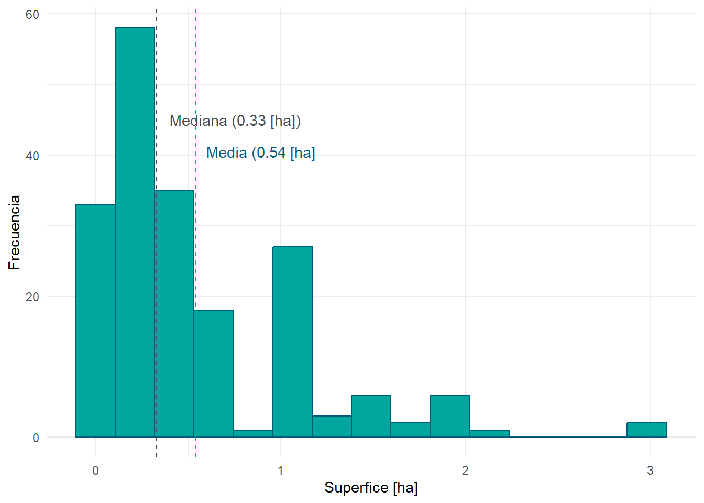
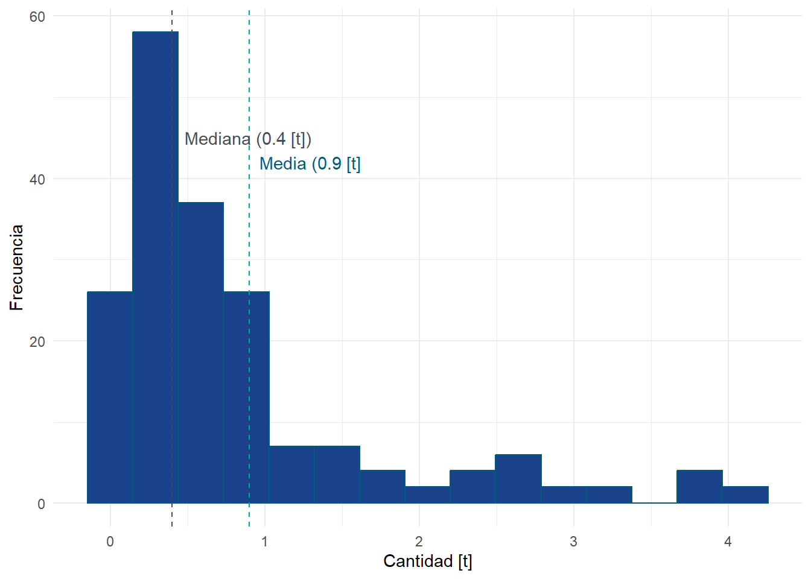
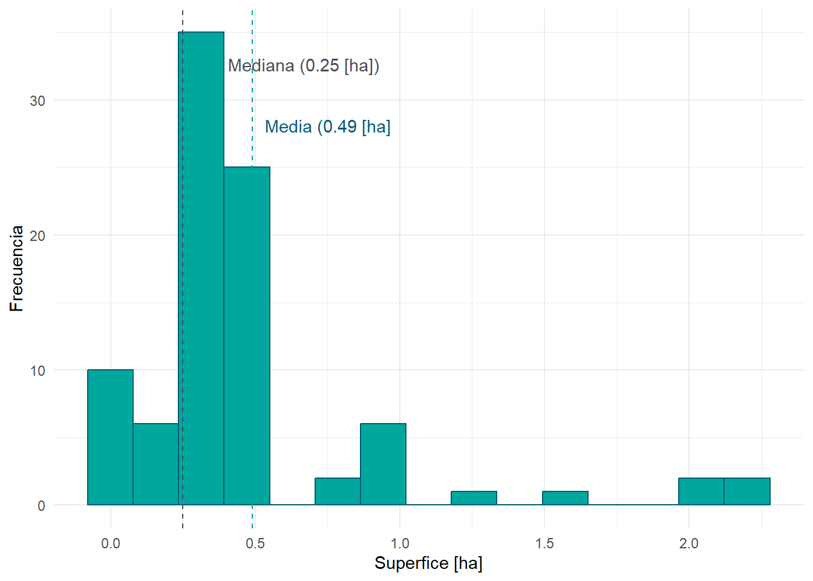

| Sexo de todos los encuestados | Tratamiento % | Control % |
|---|---|---|
| Hombre | 51.7% | 51.2% |
| Mujer | 48.3% | 48.8% |
Informe final
Levantamiento de Línea Base del Proyecto ACCESOS RURAL
Producto 5
1 Resumen ejecutivo
El levantamiento de la línea base por parte de la Unidad Ejecutora Apoyo a la Producción Agropecuaria ante el Cambio Climático (APROCAM) del Ministerio de Desarrollo Rural y Tierras (MDRyT), denominada “Levantamiento de Línea Base del Proyecto ACCESOS RURAL”, establece una panorámica fundamental de las condiciones iniciales en treinta y cinco municipios a lo largo de La Paz, Cochabamba, Chuquisaca, Potosí, y Tarija. Dirigido a beneficiar a más de 19.000 familias en situaciones de pobreza, este análisis abarca las regiones de los Valles, el Chaco y el Altiplano, constituyendo un esfuerzo por comprender la situación de la producción agropecuaria y la resiliencia ante el cambio climático en áreas críticas.
Los hallazgos revelan que las condiciones productivas en la región están considerablemente afectadas por el cambio climático, con eventos extremos como sequías e heladas inoportunas minando la capacidad productiva. Esta vulnerabilidad se ve incrementada por una capacidad limitada de resiliencia entre los productores, quienes carecen de tecnologías adaptativas y conocimientos básicos necesarios para afrontar estos desafíos. La pertenencia a asociaciones emerge como un factor crucial que contribuye al positivamente al índice de resiliencia, resaltando la importancia de fortalecer la cohesión y capacidad organizativa para mejorar la respuesta colectiva a los impactos climáticos.
En términos de ingresos, el análisis subraya una variabilidad significativa entre los distintos rubros productivos, evidenciando la diversidad en la capacidad de generación de ingresos de las familias rurales. A pesar de las diferencias, se observa una distribución inicial equitativa de las condiciones económicas entre los grupos de tratamiento y control, ofreciendo un punto de partida claro para futuras evaluaciones de impacto. La presencia de ingresos netos promedio apenas positivos, y en algunos casos negativos, para rubros clave, enfatiza la precariedad económica enfrentada por muchas familias y la necesidad de abordar la resiliencia ante el cambio climático y otros factores adversos.
2 Índice
3 Introducción
El levantamiento de la línea base por parte de la Unidad Ejecutora Apoyo a la Producción Agropecuaria ante el Cambio Climático (APROCAM) del Ministerio de Desarrollo Rural y Tierras (MDRyT), denominada “Levantamiento de Línea Base del Programa ACCESOS RURAL”, establece una panorámica fundamental de las condiciones demográficas, socio económicas y medio ambientales iniciales en treinta y cinco municipios a lo largo de La Paz, Cochabamba, Chuquisaca, Potosí, y Tarija. Dirigido a beneficiar a más de 19.000 familias en situaciones de pobreza, este análisis abarca las regiones de los Valles, el Chaco y el Altiplano, constituyendo un esfuerzo por comprender la situación de la producción agropecuaria y la resiliencia ante el cambio climático en áreas críticas.
Los resultados del estudio de Línea Base dan cuenta que las familias (generalmente biparentales) involucradas en el área de intervención del Programa ACCESOS RURAL se auto identifican como originarias y/o indígenas (aymara y/o quechua) lideradas por un varón jefe de hogar mayor de edad. La población se distribuye mayoritariamente en el segmento etario comprendido entre 14 y 59 años, identificándose un segundo segmento comprendido entre 60 y 79 años; es baja presencia de jóvenes.
Las familias habitan en viviendas permanentes, generalmente propias, con un promedio de 3 cuartos, construidas con materiales tradicionales (adobe y/o ladrillo). El piso generalmente es de cemento, el techo de calamina y cuentan con letrina y/o sanitario dentro de la propia vivienda. De forma importante acceden a servicios de electricidad, agua potable, internet y/o comunicación por la vía de llamada telefónica. La fuente de energía empleada para la preparación de alimentos generalmente proviene del gas y/o de la leña recogida de los alrededores.
Los pequeños productores de los cultivos de papa, maíz, cebolla, durazno, manzana, tomate, zanahoria y haba distribuidos en la zona de intervención producen en diferente medida para el autoconsumo, los excedentes productivos se comercializan en los principales mercados de las ciudades capital y/o ciudades intermedias de forma directa y/o a través de intermediarios.
Los hallazgos revelan que las condiciones productivas en la región están considerablemente afectadas por el cambio climático, con eventos extremos como sequías e heladas inoportunas minando la capacidad productiva. Esta vulnerabilidad se ve incrementada por una capacidad limitada de resiliencia entre los productores, quienes carecen de tecnologías adaptativas y conocimientos básicos necesarios para afrontar estos desafíos. La pertenencia a asociaciones emerge como un factor crucial que contribuye al positivamente al índice de resiliencia, resaltando la importancia de fortalecer la cohesión y capacidad organizativa para mejorar la respuesta colectiva a los impactos climáticos.
En términos de ingresos, el análisis subraya una variabilidad significativa entre los distintos rubros productivos, evidenciando la diversidad en la capacidad de generación de ingresos de las familias rurales. A pesar de las diferencias, se observa una distribución inicial equitativa de las condiciones económicas entre los grupos de tratamiento y control, ofreciendo un punto de partida claro para futuras evaluaciones de impacto. La presencia de ingresos netos promedio apenas positivos, y en algunos casos negativos, para rubros clave, enfatiza la precariedad económica enfrentada por muchas familias y la necesidad de abordar la resiliencia ante el cambio climático y otros factores adversos.
4 Antecedentes
El Proyecto “Construyendo Resiliencia ante el Cambio Climático en Familias Rurales de Bolivia”, conocido como ACCESOS RURAL, es una iniciativa del Estado Plurinacional de Bolivia a través del Ministerio de Desarrollo Rural y Tierras (MDRyT) que cuenta con el respaldo financiero del Fondo Internacional de Desarrollo Agrícola (FIDA). Tiene como objetivo fortalecer la resiliencia climática, mejorar los ingresos de pequeños productores rurales y fomentar la participación inclusiva de mujeres y jóvenes para fortalecer sus capacidades productivas, organizativas y de acceso a mercados en treinta y cinco municipios distribuidos en los departamentos de Cochabamba, Chuquisaca, La Paz, Potosí y Tarija pertenecientes a las eco-regiones Altiplano, Chaco y Valles.
La Resolución Ministerial N° 204 del Ministerio de Desarrollo Rural y Tierras de fecha 03 de agosto de 2022 crea la Unidad Ejecutora “Apoyo a la Producción Agropecuaria ante el Cambio Climático (UE-APROCAM)” como entidad encargada de ejecutar el Proyecto ACCESOS RURAL la misma que inicia actividades a finales del año 2022.
Durante la gestión 2023, la UE – APROCAM generó el Documento Base de Contratación (DBC) de servicios de consultoría para empresas consultoras en la modalidad de contratación de Apoyo Nacional a la Producción y Empleo (ANPE) bajo el código interno UE-APROCAM/ANPE/CP/002/2023 y CUCE 23-0047-43- 1356489-2-2 y con el objeto de contratación destinado al LEVANTAMIENTO DE LÍNEA BASE DEL PROGRAMA ACCESOS RURAL.
Concluido el proceso de selección y adjudicación bajo la método calidad, propuesta técnica y costo realizado por la UE-APROCAM, la consultora ARIA SRL, a través del contrato administrativo de servicio N° APROCAM/CONT/AL/069/2023 en fecha 27 de octubre de 2023, fue contratada para llevar a cabo el LEVANTAMIENTO DE LÍNEA BASE DEL PROGRAMA ACCESOS RURAL. Cuyo orden de inicio estableció como fecha de arranque del servicio el día 30/10/2023.
La consultoría se realizó con el objetivo general de “Establecer la línea de base del Proyecto Accesos Rural, en el área de intervención identificada, para describir la situación actual de los productores agrícolas (beneficiarios potenciales) respecto de las condiciones de vida, rendimientos de su cultivo principal y la adaptabilidad a la resiliencia ante el cambio climático en su producción, y a factores determinantes, mediante la recopilación de datos significativos que permitan la medición de los indicadores del marco lógico”.
El alcance de la consultoría se orientó a la implementación de una metodología y herramientas de levantamiento de línea base que permitieran generar, con una muestra de beneficiarios/as potenciales de la población elegible y los grupos de comparación y/o control, información contextualizada, actualizada, precisa y representativa en el área de intervención del Proyecto, a partir de la cual se pudiera elaborar los indicadores relevantes válidos y replicables de efecto directo con vistas a futuras evaluaciones de medio término e impacto que permitan detectar e inferir cambios atribuibles al Proyecto como resultado de su intervención.
Durante la consultoría previamente se elaboraron y presentaron cuatro productos:
El primero correspondiente al plan de trabajo y cronograma de actividades;
el segundo, que a partir de un cuestionario (boleta) previamente aprobado por el equipo de supervisión del Proyecto Accesos Rural – FIDA y la CONSULTORA, se realizó el diseño muestral, estableció la metodología empleada e instrumentos de recolección de datos en campo con apoyo de nuevas tecnologías (KOBOTOOLS) y la prueba piloto de los mismos;
el tercer producto concierne a la estrategia de trabajo de campo, los listados de potenciales personas entrevistadas, el manual de capacitación de personal de campo y los resultados de los operativos de capacitación dirigidos al personal de campo.
El cuarto producto referido a la información proveniente del operativo de campo, los resultados de la metodología empleada, los beneficiarios encuestados, la base de datos digital preliminar recolectada y los análisis provenientes por la vía cualitativa.
El presente documento corresponde al quinto producto denominado informe final, referido a información de análisis e interpretación de los resultados de la línea de base que cuantifica indicadores del Proyecto ACCESOS RURAL.
5 Contextualización
El proyecto ACCESOS RURAL interviene en 35 municipios que fueron elegidos por varios criterios entre ellos destacan la vocación productiva, cultivo de alguno rubros priorizados por el MDRyT (papa, tomate, cebolla, zanahoria, haba, maíz, durazno y manzana), índice VAM, nivel de pobreza, Necesidades Básicas Insatisfechas, Índice de Desarrollo Humano y riesgos climáticos. Los municipios se distribuyen en tres macro regiones: el altiplano, los valles y el chaco y se encuentran ubican en siete zonas agroproductivas.
Las regiones agroproductivas de los Valles en Bolivia abarcan áreas intermedias de la cordillera andina en los departamentos de Chuquisaca, Cochabamba, Potosí, y Tarija, habitadas principalmente por pequeños agricultores y ganaderos. Estos productores aprovechan la diversidad y calidad de suelos y climas para cultivar una amplia gama de vegetales y frutas, como papa, cebolla, zanahoria, y diversos tipos de frutas, además de dedicarse a la ganadería de cabras y ovejas. La región enfrenta desafíos climáticos como sequías y heladas, pero se han visto avances en servicios como comunicaciones y transporte, y tiene potencial turístico. Específicamente en Chuquisaca y la parte alta de Tarija, la población predominante es quechua, con una identidad cultural vinculada a la producción de vino.
En la macro región del Chaco, se identifican a la agricultura, ganadería, caza, y silvicultura, como las actividades generadoras de empleo, salvo en la provincia Gran Chaco donde predomina el comercio. La región destaca por su diversidad cultural y la conexión histórica de sus comunidades indígenas con el uso de la tierra. Se reporta la existencia de numerosas organizaciones económicas, principalmente agropecuarias, aunque enfrentan desafíos en consolidación organizativa y desarrollo sostenible.
Por último, la zona del Altiplano se caracteriza por sus condiciones adversas para la agricultura, con problemas de sobre pastoreo, suelos compactados, y escasez de agua, afectando la recarga de acuíferos y provocando erosión. La producción en esta área es mayormente para autoconsumo, con una parte destinada a la venta y almacenamiento. Eventos climáticos extremos como sequías y heladas ponen en riesgo la producción, subrayando la necesidad de implementar medidas de conservación y gestión de recursos para asegurar la sostenibilidad de las prácticas agrícolas de los pequeños productores.
El proyecto ACCESOS RURAL interviene en 35 municipios que fueron elegidos por varios criterios entre ellos destacan la vocación productiva, cultivo de alguno rubros priorizados por el MDRyT (papa, tomate, cebolla, zanahoria, haba, maíz, durazno y manzana), índice VAM, nivel de pobreza, Necesidades Básicas Insatisfechas, Índice de Desarrollo Humano y riesgos climáticos. Los municipios se distribuyen en tres macro regiones: el altiplano, los valles y el chaco y se encuentran ubican en siete zonas agro productivas.
Los municipios pertenecientes al área de intervención del Proyecto ACCESOS RURAL fueron caracterizados de forma condensada mediante “fichas municipales”, en las que además se incluyen a otros municipios que participaron dentro el proceso metodológico aleatorio de levantamiento de línea base del Proyecto y referidos como “grupo control”.
Las fichas incluyen diversos indicadores pertinentes para comparar y detectar cambio en aspectos demográficos, sociales, económicos, productivos y de riesgo climático en cada municipio. Fueron seleccionados los siguientes:
Distancia a la ciudad capital de departamento (en km),
Superficie del territorio municipal (en Km2),
Población registrada durante el último Censo de Población y Vivienda (CNPV 2012), su proyección al año 2020 (en número) y variación poblacional en el periodo comparado (en %),
Composición de la población ocupada por tipo de actividad económica y categoría ocupacional (en %),
Cobertura de los servicios de agua, electricidad y saneamiento básico (en % año 2012),
Alcalde y composición del Consejo Municipal según género (en %),
Población en situación de pobreza (en % según tipo de pobreza),
Presupuesto municipal (en MM de Bs.) y porcentaje de ejecución presupuestaria (año 2020),
Caracterización general agro-productiva y grado de riesgo alimentario,
Número de empresas activas en el municipio según tipo de organización ( año 2022)
Grado de riesgo climático a la inundación y sequía (en %)
En el Anexo 1 se presentan estas fichas municipales. Se elaboraron 57 fichas municipales, 35 de las cuales corresponden a los municipios priorizados por el Proyecto ACCESOS-RURAL como área priorizada y que en las fichas son referidos como “grupo tratamiento”. 22 fichas corresponden a otros municipios que participaron dentro el proceso aleatorizado de levantamiento de línea base del Proyecto.
A continuación, en las siguientes subsecciones, se presenta un breve contexto de las regiones y zonas visitadas, desde la percepción del equipo consultor, con énfasis en las percepciones de encuestadores, supervisores y el equipo de control y coordinación, destacando los testimonios de las personas entrevistadas
5.1 Zona agroproductiva Valles Cerrados
Los Valles Cerrados se encuentran situados en la zona occidental del país, enclavada en las constricciones cordilleranas de la Cordillera Real, particularmente en las provincias Muñecas, Inquisivi, Loayza, Murillo, Larecaja y Camacho del departamento de La Paz. Fisiográficamente presentan estrechas planuras enclavadas entre serranías de relieve empinado. Los suelos son poco profundos a moderadamente profundos, de texturas franco arenosas, francos, franco arcillo arenosas, franco limosas, franco arcillosas, arcillosas y franco arcillo limosas. Las temperaturas medias anuales oscilan entre los 11 y 17 °C y una precipitación acumulada cercana a 600 mm La zona expone un grado de vulnerabilidad medio y se encuentra expuesta a factores climatológicos adversos como sequía de repetición intermitente, riadas, heladas y granizadas.
La zona agro productiva comprende los municipios priorizados de Mecapaca, Palca, Sapahaqui, Cairoma, Luribay, Inquisivi, Charazani y Mocomoco pertenecientes a las provincias Muñecas, Inquisivi, Loayza, Murillo, Larecaja y Camacho del departamento de La Paz.
En las comunidades de Charazani y Mocomoco, la escasez de agua emerge como el principal desafío, impactando severamente la producción agrícola. La dependencia de fuentes naturales que han disminuido drásticamente deja a estas comunidades en una situación precaria. Las parcelas de cultivo, limitadas en extensión, apenas alcanzan los quinientos metros cuadrados, lo cual, junto con la falta de agua, limita la producción a cultivos de subsistencia como maíz y papa.
La falta de oportunidades económicas y de producción ha impulsado una migración considerable hacia ciudades, Brasil, Argentina, y actividades mineras en los Yungas. Esto ha resultado en una población predominantemente mayor en estas áreas, con una disminución notable de la población joven y activa, lo que agrava la vulnerabilidad económica y social de estas comunidades.
El proyecto ACCESOS RURAL, centrado en mejorar el acceso rural, ha iniciado sus intervenciones en estas comunidades a través de la socialización y diagnósticos participativos. Sin embargo, la implementación enfrenta obstáculos significativos como la falta de capacidad financiera para aportar la contraparte requerida por los programas de financiamiento, lo que ha llevado a la frustración y la discontinuación de varios proyectos. Además, la falta de asistencia técnica y capacitación limita aún más la capacidad de las comunidades para adaptarse y aprovechar las oportunidades de desarrollo disponibles.
Frente a estos desafíos, las comunidades han recurrido a estrategias de supervivencia como el trueque y la dependencia de remesas o ingresos generados por actividades temporales fuera de la comunidad. La producción, cuando es posible, se destina principalmente al autoconsumo debido a la incapacidad de generar excedentes significativos para el mercado. Esta situación subraya la urgencia de un apoyo más efectivo y adaptado a las realidades locales.
Las comunidades en Charazani y Mocomoco enfrentan una confluencia de desafíos que limitan severamente su capacidad productiva y sostenibilidad económica. La escasez de recursos hídricos, junto con las limitaciones estructurales y la falta de apoyo efectivo de proyectos de desarrollo, exige una respuesta coordinada y multifacética que aborde tanto las necesidades inmediatas como las estrategias de adaptación a largo plazo para estas comunidades vulnerables.
Sapahaqui, ubicado en el departamento de La Paz, Bolivia, es una región cuya economía se centra significativamente en la agricultura, siendo particularmente reconocida por su producción de durazno. Este municipio ha logrado destacarse en el ámbito agrícola, gracias al esfuerzo conjunto de sus productores y al apoyo de políticas gubernamentales que han facilitado un aumento del 60% en la producción de frutas. La dedicación de Sapahaqui al cultivo de duraznos y otras frutas demuestra su contribución vital al sector agrícola boliviano, evidenciando su potencial para el desarrollo económico sostenible y la innovación en prácticas agrícolas adaptativas.
La zona, enfrenta retos significativos que impactan la economía y modo de vida de los productores. La escasez de agua se destaca como el desafío principal, afectando gravemente la capacidad de las comunidades para mantener sus cultivos tradicionales. Esta situación se ve exacerbada por la falta de apoyo gubernamental en términos de infraestructura y servicios básicos, lo que dificulta aún más el desarrollo sostenible de la región.
A pesar de estos desafíos, las comunidades de Sapahaqui han demostrado una notable resiliencia y capacidad de adaptación. Algunas han logrado implementar técnicas innovadoras para la recolección y el uso eficiente del agua, permitiéndoles mejorar la producción agrícola. Además, ha habido un cambio gradual hacia la diversificación de cultivos, con un enfoque en aquellos que requieren menos agua, como los duraznos y manzanas. Sin embargo, estos esfuerzos aún enfrentan obstáculos debido a las condiciones climáticas adversas.
La diversificación de ingresos también se ha convertido en una estrategia clave para las familias de Sapahaqui. Muchas personas han buscado alternativas fuera de la agricultura, como la albañilería o el comercio en ferias locales, para complementar sus ingresos. Este enfoque no solo muestra la adaptabilidad de la comunidad frente a la adversidad sino que también subraya la necesidad de apoyo adicional para fortalecer estas alternativas económicas.
La situación en Sapahaqui ilustra la complejidad de los desafíos que enfrentan las comunidades rurales en Bolivia y la importancia de las intervenciones dirigidas a mejorar la gestión del agua, la productividad agrícola y el apoyo a la diversificación económica. Las recomendaciones para futuras intervenciones incluyen el fortalecimiento de la infraestructura hídrica, el apoyo técnico para la adopción de cultivos resilientes al clima, y el fomento de actividades económicas alternativas. A través de una combinación de asistencia técnica y recursos, se puede contribuir significativamente al desarrollo sostenible de Sapahaqui, asegurando que sus comunidades prosperen en el futuro.
5.2 Zona agroproductiva Altiplano Norte
La zona agro productiva del Altiplano Norte comprende parte del departamento de La Paz. Es la zona del altiplano que se encuentra influenciada por la cercanía del lago Titicaca. Presenta serranías bajas y medias ubicadas en la cordillera occidental por encima de los 3.600 msnsm. El clima presenta temperaturas promedio de -5°C y 11°C y precipitaciones que fluctúan entre los 450 a 900 mm/año. El clima es frío a ligeramente templado.
La agricultura practicada por las familias campesinas es extensiva, realizada en pie de ladera (con pendientes menores al 30%) y/o altiplanura, desarrollada sobre en suelos de variable fertilidad, generalmente pobres, superficiales, de textura variable (franca-arcilloso-arenosa).
La producción es destinada al auto abastecimiento y los excedentes comercializados en los principales mercados de las ciudades de El Alto y La Paz o ciudades intermedias del departamento. El grado de vulnerabilidad es medio. Entre los riesgos climáticos destacan la sequía, helada y granizada. La zona agro productiva comprende los municipios priorizados Achocalla, Puerto Mayor de Carabuco, Villa Ancoraimes, Mecapaca, Mocomoco y Huarina
El cambio climático ha exacerbado las condiciones ya difíciles para la agricultura. Inundaciones y sequías se han vuelto más frecuentes, afectando de manera significativa a las comunidades predominantemente compuestas por personas de la tercera edad. La falta de infraestructura adecuada para el manejo del agua, como bombas de agua o sistemas de riego, limita gravemente la capacidad de producción agrícola de la región. A diferencia de Huarina, donde existen proyectos e iniciativas que apoyan la producción agrícola y mitigación de riesgos climáticos, Puerto Acosta parece estar “olvidada” en cuanto a apoyo externo se refiere.
La economía se ve marcada por la producción de papa para consumo propio, con pocas oportunidades para la comercialización debido a las pequeñas extensiones de cultivo y la pérdida de cosechas por factores climáticos adversos. Muchos residentes dependen del Bono de Dignidad para subsistir, mostrando una clara necesidad de proyectos que impulsen el desarrollo económico y sostenibilidad de la comunidad. La situación en Huarina es similar, sin embargo la presencia de proyectos e iniciativas de desarrollo proporciona mejores condiciones para la producción agrícola y la economía local.
Para abordar estos desafíos, es crucial el desarrollo e implementación de proyectos enfocados en el manejo sostenible de recursos hídricos, introducción de tecnologías agrícolas adaptadas al cambio climático, y programas de capacitación para los agricultores, especialmente dirigidos a las poblaciones mayores. La diversificación de la economía local, a través del fomento de actividades agropecuarias y no agropecuarias, podría ofrecer nuevas oportunidades de ingresos para las comunidades afectadas.
La situación en los municipios de esta zona agroproductiva subraya la urgencia de una intervención coordinada para abordar los efectos del cambio climático en la agricultura y la economía local. La implementación de proyectos de desarrollo adaptados a las necesidades específicas de cada comunidad puede ofrecer un camino hacia la resiliencia y sostenibilidad a largo plazo para estas regiones vulnerables
5.3 Zona agroproductiva Altiplano Central
La zona agro productiva del Altiplano Central comprende parte del departamento de La Paz. Corresponde a una planicie alta ubicada entre las cordilleras occidental y oriental por encima de los 3.000 msnsm cuya fisiografía es levemente ondulada. El clima presenta una temperatura promedio de entre -6 a 16ºC y precipitaciones que fluctúan entre los 200 a 900 mm/año.
La producción agropecuaria es extensiva, de subsistencia y limitada por la ocurrencia de factores climáticos y edafológicos adversos. Destacan los procesos de erosión debido al sobrepastoreo, agricultura en ladera y la realización inadecuada de prácticas agrícolas.
La zona presenta un grado de vulnerabilidad alto. Entre los riesgos climáticos destacan la sequía, helada y granizada. De ellos, la sequía hidrológica (déficit de flujo o almacenamiento de agua) y meteorológica (déficit de precipitación) son recurrentes una vez cada 2 a 4 años.
La zona agro productiva comprende los municipios priorizados de Patacamaya, Sica Sica y Parte de Luribay.
En el último año, la producción agrícola, particularmente el cultivo de papa, ha disminuido significativamente, con rendimientos que apenas alcanzan uno a dos quintales en algunas áreas. Esta disminución ha llevado a los miembros de las comunidades a desviar sus esfuerzos hacia otras actividades o migrar en busca de mejores oportunidades. La escasez de forraje para el ganado debido a condiciones climáticas adversas ha obligado a muchos a vender su ganado, reduciendo sus rebaños a solo uno o dos animales. Este cambio señala un alejamiento de la agricultura y la ganadería tradicionales debido a la creciente inviabilidad bajo las condiciones actuales.
Las discusiones subrayan el impacto devastador del cambio climático en estas comunidades, donde la sequía y eventos climáticos extremos han afectado dramáticamente la capacidad de sustento y la producción agrícola. Las historias compartidas por los residentes revelan una lucha continua contra la variabilidad climática, lo que ha llevado a la pérdida de cosechas y la disminución de la actividad ganadera, pilares fundamentales de su economía.
Con la agricultura y la ganadería volviéndose cada vez menos viables, las comunidades han buscado otras fuentes de ingreso. La dependencia de bonos gubernamentales y la venta ocasional de productos en mercados locales se mencionan como medios de subsistencia. Sin embargo, la falta de proyectos de desarrollo y apoyo externo ha dejado a estas comunidades en una situación de vulnerabilidad económica.
Para abordar estos desafíos, es importante el desarrollo e implementación de proyectos enfocados en el manejo sostenible de recursos hídricos, introducción de tecnologías agrícolas adaptadas al cambio climático y programas de capacitación para los agricultores. La diversificación económica, a través del fomento de actividades agropecuarias y no agropecuarias, podría ofrecer nuevas oportunidades de ingresos para las comunidades afectadas.
La situación en las comunidades de control y en Kera (Mecapaca) como área de tratamiento destaca la urgencia de intervención coordinada para enfrentar los efectos del cambio climático en la agricultura y la economía local.
En las cabeceras de valle,como las de Luribay y Cairoma, la agricultura ha sido severamente impactada por condiciones climáticas extremas, incluyendo sequías prolongadas y heladas inesperadas. Los productores de papa y quinua, cultivos tradicionales de la región, han reportado pérdidas de hasta el 90% en sus cosechas. Además, la producción de frutas como el durazno y la manzana también ha sido afectada, no solo por la falta de agua sino también por el humo de incendios forestales, que ha causado la caída prematura de flores y, por ende, una disminución en la producción.
Frente a estos desafíos, las comunidades han tenido que adaptarse de diversas maneras. Algunos han reducido la escala de sus cultivos o han dejado de sembrar ciertos cultivos por completo, mientras que otros han optado por migrar temporalmente en busca de trabajo en países vecinos. Esta migración laboral destaca un cambio significativo en las fuentes de ingreso de las familias, alejándose de la agricultura hacia empleos temporales en la construcción o la costura.
El apoyo de proyectos destinados a mitigar el impacto del cambio climático ha sido percibido como útil pero insuficiente por las comunidades. Aunque se han realizado esfuerzos, como capacitaciones y la distribución de semillas, la efectividad de estos programas se ve limitada por la falta de seguimiento y desconfianza. La necesidad de un enfoque más integral y continuo es evidente para apoyar efectivamente a las comunidades agrícolas en su adaptación a los desafíos climáticos.
La situación en Cairoma, Luribay, Ayo Ayo, y Calamarca es un reflejo de los desafíos que el cambio climático impone a las comunidades agrícolas en Bolivia. La adaptación y resiliencia de estas comunidades son temas clave para afrontar al cambio climático, pero también lo es el apoyo coordinado y sostenido de iniciativas tanto públicas como privadas. Este documento subraya la urgencia de desarrollar estrategias de adaptación más robustas y de proveer asistencia técnica y recursos que permitan a estas comunidades prosperar ante los crecientes desafíos del cambio climático.
5.4 Zona agroproductiva Valles del Norte
Los Valles del Norte se encuentran situados en la zona central del país, particularmente en las provincias Arani, Arque, Ayopaya, Mizque, Punata, Quillacollo del departamento de Cochabamba. Las temperaturas medias anuales oscilan entre los 11 y 16 °C y una pluviosidad acumulada anual que varía entre los 600 y 900 mm. La zona dispone de un clima templado semiárido de transición a bosque andino húmedo, debido a estas condiciones climáticas la práctica agrícola es importante y variada. Los municipios se encuentran expuestas a la ocurrencia de factores climáticos adversos como riadas, granizadas y sequías, estas últimas se repiten en intervalos irregulares de dos a cuatro años. Y en general refleja un grado de vulnerabilidad medio.
En esta zona se ubican los municipios de Totora, Pojo, Omereque, Mizque, Aiquile y Pasorapa pertenecientes al departamento de Cochabamba, así como los territorios del grupo de control (Cliza, Punata y Parotani).
Las comunidades y municipios visitados en Cochabamba, en los municipios de tratamiento, enfrentan una serie de desafíos críticos que impactan significativamente su desarrollo socioeconómico y productivo. Entre los problemas más destacados se encuentra la dificultad en la implementación de proyectos debido a complicaciones en la documentación y la falta de representación dirigencial efectiva. Este obstáculo ha generado desconfianza entre los beneficiarios y ha limitado la ejecución de iniciativas que podrían mejorar sus condiciones de vida.
El cambio climático y sus efectos devastadores, como la sequía prolongada, han reducido drásticamente el apoyo a estas áreas, exacerbando las dificultades existentes. La migración se ha intensificado debido a la falta de recursos financieros y oportunidades, dejando detrás comunidades compuestas principalmente por personas de edad avanzada y niños, lo que plantea preocupaciones sobre su sostenibilidad a largo plazo.
Un reto particularmente agudo es el ataque del gusano cogollero al maíz, un cultivo esencial para la subsistencia de estas comunidades. La infestación ha arrasado hectáreas de cultivos, obligando a los agricultores a sembrar de nuevo, lo que representa una carga económica adicional. A pesar de los esfuerzos por combatir esta plaga utilizando pesticidas etiqueta roja, el problema persiste, lo que indica la necesidad de soluciones más efectivas y sostenibles.
La capacitación y el desarrollo de habilidades son casi inexistentes en algunas comunidades, lo que limita su capacidad para adaptarse a nuevas técnicas agrícolas y enfrentar los desafíos del cambio climático. Esta falta de formación contribuye a un manejo ineficaz de los cultivos y a una menor productividad.
Algunas comunidades han experimentado iniciativas previas de desarrollo, como proyectos de cría de abejas y ganado, que no se han materializado completamente, generando frustración y pérdida de inversión entre los habitantes. Esta situación subraya la importancia de un seguimiento y apoyo continuo a los proyectos para asegurar su éxito y sostenibilidad.
Es notable la variabilidad en las condiciones y actitudes hacia la agricultura y el desarrollo entre las diferentes comunidades. Mientras algunas, como Valle Hermoso, muestran un interés renovado y una mayor organización para la participación en proyectos, otras permanecen escépticas debido a experiencias negativas previas. Este contraste resalta la necesidad de abordar las intervenciones de desarrollo de manera personalizada, considerando las particularidades y necesidades específicas de cada comunidad.
En Cochabamba, las comunidades de control también enfrentan retos significativos debido a las condiciones climáticas adversas y la falta de apoyo efectivo para el desarrollo agrícola. Durante una discusión detallada, se reveló que varios productores han tenido que cambiar de cultivos, como del durazno al maíz, debido a la sequía. Esta adaptación refleja el impacto directo del cambio climático en sus prácticas agrícolas y la necesidad de buscar alternativas más sostenibles.
La producción de manzana también ha disminuido notablemente, afectada por el granizo y otras plagas, lo que ha llevado a los agricultores a diversificar sus cultivos hacia el maíz, la papa, y la cebolla, aunque estos cambios no siempre resultan ser económicamente viables. Además, se ha destacado la dificultad de combatir enfermedades y plagas en los cultivos debido a la resistencia a los pesticidas convencionales, obligando a algunos a utilizar productos más fuertes, con los riesgos ambientales y de salud que esto conlleva.
La desconfianza hacia los proyectos de desarrollo es palpable en las comunidades, exacerbada por experiencias pasadas donde las promesas no se materializaron, lo que ha llevado a un escepticismo generalizado sobre la efectividad de las iniciativas de ayuda. Este escepticismo se ve agravado por la falta de capacitaciones y apoyo técnico, lo que deja a las comunidades sin las herramientas necesarias para mejorar su producción de manera sostenible.
5.5 Zona agroproductiva Valles Centrales
La zona de los valles centrales se ubica en parte de la cordillera oriental de los departamentos de Potosí y Chuquisaca a una altitud variable entre 2000 y 3000 msnm. Presenta una temperatura media anual que varían de 1O a 20°C y una precipitación anual moderada cercana a 700 mm. El clima es semi árido, templado con periodos del año frío, y áreas en transición a bosque húmedo templado.
Las áreas productivas disponen de suelos de variada calidad y múltiples microclimas. La actividad agropecuaria practicada por familias campesinas es extensiva y diversa. Se producen papa, cebolla, zanahoria, ajo, cebada, haba, arveja, ají, maní; además de hortalizas, camote y oca; y frutas como uva, durazno, ciruelo, damasco, guinda, membrillo, manzana, frutilla, naranja, mandarina, chirimoya, banana y papaya, entre otros. Orientan la producción al autoabastecimiento y los excedentes al mercado de las ciudades capital o ciudades intermedias.
Es una zona de alta evapotranspiración susceptible a problemas de escasez de agua. Los riesgos climáticos más frecuentes son las sequías, granizadas y heladas que afectan en toda la región. En esta zona se ubican los municipios de Betanzos, San Lucas, Culpina pertenecientes al departamento de Potosí y Monteagudo a Chuquisaca.
En los valles del norte de Chuquisaca y Potosí, la situación agrícola y socioeconómica de las comunidades refleja patrones similares a los observados en Cochabamba, marcados por el desafío constante de adaptarse a las condiciones climáticas cambiantes y la escasez de apoyos efectivos para el desarrollo agrícola sostenible. En esta región, la variabilidad del clima ha obligado a los agricultores a modificar sus prácticas agrícolas tradicionales, optando por cultivos más resistentes a la sequía o que requieren menos recursos hídricos.
La diversificación de cultivos se ha convertido en una estrategia común para mitigar el riesgo asociado a la dependencia de un solo tipo de cultivo. Sin embargo, esta adaptación no siempre se traduce en una mejora de los ingresos para los productores, debido a los costos adicionales en manejo y control de plagas, así como a la fluctuación de precios en el mercado. Además, la resistencia a los pesticidas ha llevado a un uso incrementado de productos químicos más potentes y peligrosos, exacerbando los problemas de salud pública y ambientales.
La desconfianza hacia los proyectos de desarrollo es un tema recurrente también en Chuquisaca, donde experiencias previas de promesas incumplidas han generado escepticismo y desilusión entre las comunidades. Este sentimiento se ve reforzado por la ausencia de capacitaciones y asistencia técnica adecuadas, lo que deja a las comunidades sin el conocimiento y las herramientas necesarias para enfrentar los desafíos actuales de la agricultura y el cambio climático.
Para superar estos retos, es imperativo un enfoque integral que no solo aborde las necesidades inmediatas de adaptación al cambio climático y mejora de la producción agrícola, sino que también contemple el desarrollo de capacidades y la educación de las comunidades en prácticas agrícolas sostenibles, gestión de recursos hídricos, y emprendimiento agrícola.
5.6 Zona agroproductiva Valles del Sur
La zona agro productiva valles del sur se encuentra situada en parte de los departamentos de Chuquisaca, Potosí y Tarija a una altitud variable entre 1500 y 2500 msnm. Presenta una temperatura media anual de 12 a 25°C y una precipitación anual moderada cercana a 900 mm. El clima es semi árido, templado con áreas en transición a bosque húmedo templado y cálido.
Fisiográficamente es una zona compuesta por serranías y planillanuras cortas, con suelos jóvenes, de variable fertilidad, expuestos a procesos de erosión y en los que se práctica generalmente una agropecuaria extensiva, no excluyendo la presencia de áreas en transición hacia una agricultura intensiva. La producción es diversa en la que se destaca uva, durazno, manzana, papa y cebada, hortalizas y lechería. La zona expone un grado de vulnerabilidad medio y se encuentra expuesta a la ocurrencia de fenómenos climatológicos adversos como riadas, granizadas y sequías, estas últimas se puede repetir en intervalos de dos a cuatro años.
La zona agro productiva comprende los municipios priorizados de Cotagaita, Tupiza, Villazón (Potosí); Villa Charcas, Incahuasi, Culpina (Chuquisaca); y San Lorenzo, El Puente, Las Carreras y Padcaya (Tarija).
En la zona agroproductiva de los Valles del Sur, las comunidades agrícolas están enfrentando desafíos multifacéticos exacerbados por el cambio climático y la falta de acceso a recursos y apoyo adecuado para el desarrollo agrícola sostenible. El clima variable ha forzado a los agricultores a una reevaluación constante de sus prácticas y cultivos tradicionales. Frente a la sequía prolongada y eventos climáticos extremos, muchos se han visto obligados a abandonar cultivos menos resistentes como la cebolla, optando por alternativas que demandan menos agua, como el maíz y la papa. Sin embargo, esta transición no asegura una solución a sus problemas económicos, ya que se enfrentan a costos elevados de insumos y una batalla constante contra plagas y enfermedades que se vuelven cada vez más resistentes a los pesticidas tradicionales.
La migración emerge como un tema recurrente, con una notable disminución de la población activa en el campo, dejando principalmente a personas mayores en cargo de las labores agrícolas. Esta dinámica ha contribuido a una economía de subsistencia, donde la agricultura ya no se percibe como una fuente viable de ingresos, sino meramente como una forma de asegurar la alimentación básica. Los jóvenes buscan oportunidades en áreas urbanas o incluso en el extranjero, dejando atrás una brecha generacional que amenaza la continuidad de las prácticas agrícolas tradicionales.
La situación económica se complica aún más con el endeudamiento de los productores, quienes, frente a cosechas fallidas o menores a lo esperado, luchan por cubrir los costos de producción y enfrentan dificultades para acceder a créditos debido a las altas tasas de interés y la falta de garantías. Esto les deja en una posición vulnerable, donde incluso la introducción de proyectos con contrapartes financieras se ve con recelo, temiendo aumentar aún más su carga de deudas sin la certeza de obtener beneficios tangibles.
5.7 Zona agroproductiva Chaco Serrano
La zona agro productiva se distribuye entre los departamentos de Chuquisaca y Tarija. Fisiográficamente se caracteriza por serranías, colinas, valles, planicies, llanuras y pie de monte ubicados a una altitud entre 1200 a 2600 msnm. La temperatura anual promedio que varía entre 16 y 25 °C y una pluviosidad también entre 600 y 1200 mm. El clima es variado desde tipo semiárido hacia el húmedo. Generalmente de verano cálido e invierno templado a cálido. En su interior se encuentran áreas que exponen periodos prolongados de escasez de agua. La variabilidad de microclimas generan diferentes tipos de vegetación que van desde la bosque chaqueño semihúmedo circundado por serranías y quebradas cruzadas por pequeños ríos que configuran áreas de transición hacia zonas con mayor cobertura vegetal.
La actividad agropecuaria es extensiva en áreas de pie de monte, combina la crianza de ganado con el cultivo de maíz y cítricos. La zona expone un grado de vulnerabilidad medio y se encuentra expuesta principalmente a factores climatológicos adversos como inundaciones y sequía, agravadas últimamente con la presencia de heladas.
La zona agro productiva comprende los municipios priorizados de Carapari, Monteagudo y Padcaya
En esta zona, las comunidades rurales enfrentan desafíos significativos, cambio climático y una economía predominantemente agrícola que lucha por mantenerse. La situación social y económica es compleja, marcada por el envejecimiento de la población activa en el campo y un patrón creciente de migración juvenil hacia las ciudades en busca de mejores oportunidades. Este fenómeno ha dejado a las comunidades rurales compuestas principalmente por personas de la tercera edad, quienes persisten en sus labores agrícolas a pesar de las dificultades crecientes.
El impacto del cambio climático se manifiesta en la alteración de los patrones climáticos tradicionales, lo que ha llevado a los agricultores a modificar sus prácticas y cultivos habituales. La incertidumbre sobre las temporadas de lluvia y la ocurrencia de eventos climáticos extremos, como granizadas repentinas, han devastado cosechas enteras, dejando a los agricultores con pérdidas significativas y sin la capacidad de recuperar sus inversiones. Estos eventos han obligado a algunos a abandonar cultivos tradicionales, como el tomate, debido a su vulnerabilidad a las fluctuaciones del clima y a los precios altamente volátiles en el mercado.
A nivel económico, la agricultura ya no se percibe como una fuente viable de ingresos por sí sola, llevando a las comunidades a adoptar estrategias de subsistencia. La producción se orienta cada vez más hacia el autoconsumo, con poca o ninguna capacidad para generar excedentes comercializables. Además, el costo elevado de los insumos, como semillas y pesticidas, y la dificultad para manejar plagas han limitado aún más la capacidad productiva de las comunidades.
6 Objetivos
6.1 Objetivo general
Establecer la línea de base del Programa Construyendo Resiliencia ante el cambio climático en Familias Rurales de Bolivia (ACCESOS RURAL), en el área de intervención del programa (35 municipios), para describir la situación actual de los productores agrícolas (beneficiarios potenciales) respecto a las condiciones de vida, los rendimientos de su cultivo y la adaptabilidad a la resiliencia ante el cambio climático en su producción, y a factores determinantes, mediante la recopilación de datos significativos que permitan la medición de los indicadores del marco lógico.
6.2 Objetivos específicos
Establecer la metodología para el estudio de línea de base y cronograma de trabajo, en coordinación con el equipo destinado al seguimiento de la consultoría.
Desarrollar un diseño muestral para el levantamiento de línea de base en el grupo de beneficiarios potenciales. El diseño muestral debe permitir recoger información para identificar un grupo de control y obtener resultados precisos que puedan ser utilizados durante la evaluación final, con el propósito de detectar e inferir los cambios atribuibles el Proyecto.
Desarrollar los instrumentos de recolección de información cuantitativo y cualitativo, los cuales deben ser aprobado antes de los operativos de campo.
Implementar la metodología correspondiente para la medición de indicadores básicos de efecto directo (COI), los cuales son de uso obligatorio por los programas y proyectos financiado con recursos del FIDA.
Realizar la recopilación de los datos, siguiendo protocolos y estándares que permitan garantizar la calidad de la información, y garantizar que el levantamiento de la información sea previo a la asignación de recursos a los beneficiarios.
Analizar los datos cuantitativos y cualitativos, y desarrollar el informe de hallazgos que permita identificar la coherencia de los datos obtenidos y la existencia de posibles errores o sesgos en la medición. El análisis de los datos de línea de base también se usará para evaluar la eficacia de la focalización; es decir, si el Proyecto alcanzará a sus beneficiarios previstos.
7 Marco conceptual
7.1 Diseño de la evaluación
Queda definido un diseño para el levantamiento de línea de base y las futuras evaluaciones del tipo cuasi-experimental. Los diseños cuasiexperimentales buscan establecer, a través de diferentes técnicas, un efecto causal. A diferencia de las evaluaciones experimentales, no se cuenta con un contrafactual per se, pues no tenemos una población extraída de una manera aleatoria. La Figura 1 muestra esta diferencia.

Analizamos un indicador de interés \(Y\) que (ingreso, rendimiento o el índice de resiliencia). Los beneficiarios del proyecto, llamado el grupo de tratamiento parten de un ingreso \(Y_0\) (en un \(t=0\)) , antes de que el proyecto inicie sus operaciones) y, una vez se realizan las intervenciones, acciones y actividades del proyecto, se realiza una nueva medición y se constata que el ingreso de los beneficiarios es ahora \(Y_4\). El evaluador estaría tentado a indicar que esta diferencia \(Y_4-Y_0\) es el impacto generado por el proyecto. Sin embargo, esto no puede ser cierto, dado que es posible que otros innumerables factores podrían haber incrementado los ingresos de estos productores, por ejemplo, incrementos en el precio del producto analizado a razón de la disminución del contrabando, nuevas carreteras que permiten reducir los costos, nuevos mercados provistos por otro proyecto o cualquier otro factor diferente de la introducción de nuevas variedades.
Entonces, para poder atribuir cierta cantidad de este incremento de \(Y_0\) a \(Y_4\) , tendríamos que analizar qué hubiera pasado si los beneficiarios no hubieran participado del proyecto, y así contar con un contrafactual perfecto y medir el punto \(Y_2\) de la Figura 1. Si pudiéramos “desdoblar en otra dimensión” a los beneficiarios y medir su ingreso sin proyecto, podríamos obtener \(Y_2\), y a partir de la diferencia \(Y_4-Y_2\), encontrar el impacto “real” del proyecto en la población.
Sin embargo, sabemos que es imposible que un hogar esté y no esté, al mismo tiempo, en un proyecto. Entonces debemos encontrar un grupo de comparación adecuado que imite al contrafactual perfecto, es decir que se comporte de la manera más parecida posible a cómo se hubieran comportado los beneficiarios en caso de no haber accedido al proyecto. Entonces, ¿la diferencia \(Y_4-Y_3\) es el verdadero impacto del proyecto? Sin saber por qué algunos hogares participaron mientras que otros no, cuando se puso el proyecto a disposición de un municipio, tal comparación podría ser engañosa. Sin dicha información, no se sabe si \(Y_3\) es el resultado contrafactual correcto para evaluar el efecto del proyecto. Por ejemplo, los ingresos son diferentes entre los beneficiarios y el grupo de control antes del proyecto; este diferencial podría deberse a diferencias subyacentes que pueden sesgar la comparación entre los dos grupos. Si se conocen los resultados contrafácticos (\(Y_0\),\(Y_2\)), la estimación real del efecto del Proyecto es \(Y_4 - Y_2\) , como indica la Figura 1, y no \(Y_4-Y_3\). De esta manera, el contrafactual con grupo de control produce una subestimación del efecto del Proyecto, la cual también podría producir una sobreestimación del impacto del proyecto, en otras situaciones.
El desafío central en la evaluación del impacto y la determinación de los efectos que pueden atribuirse directamente al Proyecto radica en la necesidad de comparar dos estados diferentes de los beneficiarios en un mismo punto temporal. Este reto se manifiesta en la necesidad de comparar un hogar que participa en el Proyecto con una que no participa en el mismo momento.
Entonces, dado que no es posible asignar de manera aleatoria a los participantes para observar, con metodologías estadísticas convencionales, el impacto atribuible al proyecto o intervención. En esta situación, el contrafactual “construido” es imperfecto. Existen diferentes métodos para corregir este sesgo, entre ellos, siendo el más utilizado, el método de “Diferencia en diferencias”,que mide las diferencias en los resultados de los participantes del Proyecto antes y después del Proyecto en relación con los no participantes (grupo de control). Este método aplicar una doble diferencia, comparando los cambios a lo largo del tiempo en la variable de interés entre una población inscrita en un Proyecto (el grupo de tratamiento) y una población no inscrita (el grupo de comparación).
Bajo este método, cualquier otro factor que pueda haber afectado el resultado medido a lo largo del tiempo es el mismo para los participantes y no participantes, por lo que habrían tenido la misma trayectoria de tiempo sin el Proyecto. En horizontes de tiempo cortos y con grupos razonablemente similares, esta suposición puede ser plausible. Una “prueba de placebo” también puede comparar las tendencias de tiempo en los dos grupos antes de que se llevara a cabo el Proyecto. Sin embargo, al igual que con la “diferencia simple”, muchos factores asociados con la participación en el Proyecto también pueden estar asociados con cambios en los resultados a lo largo del tiempo. Por ejemplo, una persona que espera una gran mejora en el futuro cercano puede no unirse al Proyecto (autoselección). Se requieren datos sobre los resultados de interés para los participantes del Proyecto, así como para otro grupo de no participantes antes del inicio del Proyecto y después de que el Proyecto entró en vigor.
Dado que es muy poco probable encontrar un hogar que cumpla ambas condiciones simultáneamente, ya que un hogar o bien participa o no en el Proyecto en un determinado momento, la solución radica en identificar un hogar de “control” (\(j\)) para cada hogar de tratamiento o beneficiario (\(i\)). Formalmente, esta solución se expresa en la Ecuación 1:
\[ \tau^i=[Y_{it}(1)-Y_{jt}(0)+[Y_{it}(0)-Y_{jt}(0)] \tag{1}\]
donde \(\tauˆi\) representa el impacto para el beneficiario \(i\). No obstante, esta ecuación aún refleja diferencias inherentes entre los hogares, especialmente en el segundo término. Por lo tanto, para minimizar el “efecto de selección” que se observa en este término, es crucial encontrar un hogar de “control” que sea lo más similar posible al hogar de tratamiento.
Para la selección del grupo de tratamiento, se ha optado por un proceso de selección aleatoria basada en categorías específicas de comunidades previamente priorizadas por ACCESOS RURAL, de acuerdo a los diagnósticos realizados. Esta selección se realiza a partir de un listado exhaustivo que incluye todas las comunidades potencialmente elegibles.
En cuanto al grupo de control, este se define utilizando datos del Censo Agropecuario, aplicando un modelo de emparejamiento que se basa en las variables disponibles de dicho censo. El objetivo principal de este emparejamiento, que se lleva a cabo en esta fase inicial, es asegurar que las comunidades de control representen contrafactuales adecuados. Para ello, se utiliza información detallada proveniente del Censo Agropecuario de 2013.
El diseño de la evaluación para esta línea base está orientado a permitir, en evaluaciones futuras, una estimación del impacto utilizando el método de Diferencias en Diferencias. Este enfoque promete una estimación más sólida, ya que se establece un emparejamiento cuidadoso en esta fase inicial para determinar el grupo de control más conveniente. Es crucial maximizar los beneficios de esta encuesta de línea base, asegurando que las intervenciones se implementen efectivamente en las comunidades de la muestra seleccionada. Para estudios futuros, se recomienda incluir las mismas comunidades de tratamiento y control seleccionadas en este estudio, para mantener la consistencia y la relevancia de los resultados a lo largo del tiempo.
7.2 Metodología para el diseño muestral
En la evaluación de impacto, es necesario asegurarse de que el estudio tenga la capacidad suficiente para detectar efectos significativos de las intervenciones del proyecto o Proyecto que está siendo evaluado. Para esto, se realizan cálculos de potencia estadística. La “potencia” de una prueba estadística se refiere a la probabilidad de rechazar correctamente la hipótesis nula cuando es falsa, es decir, la probabilidad de identificar un efecto real si este existe.
Los cálculos de potencia están intrínsecamente ligados al tamaño de la muestra; muestras más grandes aumentan la potencia de un estudio. Sin embargo, muestras excesivamente grandes pueden ser innecesarias o imprácticas. Por otro lado, muestras demasiado pequeñas pueden llevar a conclusiones erróneas. Por lo tanto, determinar el tamaño adecuado de la muestra es un paso crítico en la planificación de cualquier evaluación de impacto.
Estos cálculos toman en cuenta la magnitud del efecto que se espera detectar, el nivel de significancia estadística deseado (generalmente, un valor alfa de 0.05), y la variabilidad esperada de los datos. Con esto, podemos estimar el número mínimo (y eficiente) de participantes necesario para que nuestro estudio tenga una probabilidad adecuada de detectar el efecto de interés (usualmente, un 80% o más) , si realmente existe.
7.2.1 Conceptos clave
A continuación se mencionan algunos conceptos claves utilizados para el cálculo de una muestra para un estudio de tipo cuasi-experimental:
Sensibilidad: la sensibilidad de un experimento para detectar diferencias entre el grupo de tratamiento y el grupo de control se mide por la potencia estadística.
Error de tipo I: es un falso positivo: rechazar falsamente la hipótesis nula de que no existe un efecto, o concluir erróneamente que la intervención tuvo un efecto cuando no lo tuvo. La probabilidad de cometer un error de tipo I se conoce como \(\alpha\).
Error de tipo II. Un error de tipo II es un falso negativo: no detectar un efecto cuando sí hay uno. La probabilidad de cometer un error de tipo II se denotará por \(\kappa\) (para diferenciarlo de \(\beta\), que es el efecto del tratamiento).
Potencia de la muestra: es la probabilidad de rechazar una hipótesis nula falsa. Formalmente, la potencia se da típicamente por \(1-\beta\), pero para diferenciar la potencia del efecto del tratamiento \(\beta\), denotaremos la potencia por \(1-\kappa\). Es decir, maximizar la potencia estadística es minimizar la probabilidad de cometer un error de tipo II.
Los cálculos de potencia implican determinar el tamaño de la muestra necesario para detectar el efecto mínimo detectable (MDE) dado otros parámetros, o determinar el tamaño del efecto que se puede detectar dado un tamaño de muestra fijo y otros parámetros.
Los componentes de los cálculos de potencia incluyen:
Significancia (\(\alpha\)): Es la probabilidad de cometer un error de tipo I. Se establece típicamente en el 5%, es decir, \(\alpha=0.05\).
Potencia (\(1-\kappa\)): Se establece típicamente en 0.8, lo que significa que la probabilidad de fallar falsamente en rechazar la hipótesis nula es de 0.2 o 20%. La potencia refleja el nivel de significancia, \(\alpha\): a medida que α aumenta (por ejemplo, del 1% al 5%), la probabilidad de rechazar la hipótesis nula aumenta, lo que se traduce en una prueba más potente.
Efecto mínimo detectable (MDE): El efecto más pequeño que, si es verdadero, tiene una probabilidad del \(1-\beta\) % de producir una estimación que sea estadísticamente significativa al nivel de \(\alpha\)% (Bloom 1995). En otras palabras, el MDE es el tamaño del efecto por debajo del cual no podemos distinguir que el efecto es diferente de cero, incluso si lo es.
Tamaño de la muestra (N): Es el tamaño de muestra calculado para la población.
Varianza de la variable de resultado \(\sigma^2\). Se asigna una variable de resultado (por ejemplo, cantidad de la producción, ingresos u otros provenientes de estudios previos o de datos de información secundaria).
Asignación del tratamiento (\(P\)): es la proporción de la muestra asignada al grupo de tratamiento. La potencia se maximiza típicamente con una división equitativa 50/50, aunque hay casos en que se puede preferir una división desigual.
Coeficiente de correlación intracluster (ICC): Una medida de la correlación entre observaciones dentro del mismo grupo, también a menudo dado como \(\rho\). Si el estudio implica una aleatorización agrupada (es decir, cuando cada unidad de aleatorización contiene múltiples unidades de observación), es necesario tener en cuenta el hecho de que individuos (u hogares) dentro de un grupo son más similares entre sí que aquellos en diferentes grupos. En general, esto aumentará el tamaño de la muestra requerido.
Al realizar estos cálculo existirán “tradeoffs” o compensaciones entre las variables del cálculo de la muestra, las cuales se presentan en la Tabla 1:
| Componente | Efecto en el poder | Efecto en el MDE | |
|---|---|---|---|
| Se aumenta el tamaño de muestra (N) | Incrementa el poder | Reduce la MDE | |
| Se reduce la varianza de la variable de resultado | Incrementa el poder | Reduce la MDE | |
| Se incrementa el efecto real | Incrementa el poder | NA | |
| Asignación del tratamiento equilibrada (\(P\)) | Incrementa el poder | Reduce la MDE | |||
| Se incrementa el ICC | Reduce el poder | Reduce la MDE |
7.3 Definición del tamaño y poder de la muestra
Para cuantificar el tamaño de muestra necesario, se utilizan fórmulas que integran los conceptos clave mencionados anteriormente. Una fórmula común para el cálculo del tamaño de muestra en el contexto de evaluaciones de impacto es:
\[ N= \frac{(Z_{α/2}+Z{κ})^2×σ^2}{MDE^2} \]
donde \(z_{α/2}\) es el valor crítico de la distribución normal estándar para un nivel de significancia, (por ejemplo, 1.96 para \(\alpha = 0.05\) , y \(z_\kappa\) es el valor crítico para la potencia deseada \(1-\kappa\) (por ejemplo, 0.84 para una potencia del 80%).
En las evaluaciones de impacto, particularmente en áreas como el desarrollo económico agrícola, el tamaño de muestra no solo determina la precisión de los resultados, sino que también afecta la credibilidad y la relevancia de las conclusiones del estudio. Un tamaño de muestra adecuado es crucial para garantizar que los hallazgos sean representativos y para minimizar los errores estadísticos.
La fórmula para calcular el tamaño de muestra toma en consideración varios factores esenciales y consideraciones metodológicas:
Selección de la Magnitud del Efecto: La elección de la magnitud del efecto debe basarse en consideraciones prácticas y teóricas, tomando en cuenta estudios anteriores y el contexto específico del desarrollo económico agrícola.
Equilibrio entre Potencia y Tamaño de Muestra: Un equilibrio adecuado entre la potencia y el tamaño de muestra es fundamental. Aumentar la potencia más allá de un punto óptimo puede resultar en un tamaño de muestra innecesariamente grande, aumentando los costos y la complejidad logística del estudio.
Adaptabilidad a Diferentes Contextos: La fórmula debe ser adaptable a diferentes cultivos, prácticas agrícolas y contextos geográficos, ya que estos factores pueden influir en la varianza de los datos y en la magnitud del efecto.
En el contexto del Proyecto ACCESOS RURAL, la aplicación de las fórmulas y teorías de tamaño de muestra debe considerar factores únicos a este sector:
Variabilidad de Datos Agrícolas: Los datos en agricultura pueden mostrar una variabilidad significativa debido a factores como las condiciones climáticas, prácticas agrícolas y diferencias regionales. Esto debe reflejarse en la estimación de la varianza (\(\sigma^2\)) utilizada en los cálculos. Para el cálculo de la varianza se utilizaron datos de consultorías pasadas en las mismas zonas realizadas por ARIA SRL.
Efectos de los Tratamientos Agrícolas: La magnitud del efecto esperado (MDE) debe ser relevante para las intervenciones agrícolas, como la introducción de nuevas tecnologías o prácticas de cultivo. Para este cálculo se utilizó como parámetro la meta del incremento de los ingresos en 35%.
Diseño de Muestreo por Clústeres: Dado que los estudios en el sector agrícola a menudo se realizan a nivel de comunidades o parcelas, el diseño por clústeres es común. Esto implica ajustar el tamaño de muestra para el efecto de diseño debido a la clusterización, considerando el ICC y el tamaño promedio del clúster. Esto fue realizado de acuerdo a los rubros de intervención de ACCESOS RURAL.
7.3.0.1 Consideraciones Específicas
Selección de Unidades de Muestreo: La unidad de muestreo queda definida como los hogares.
Temporalidad y Estacionalidad: La agricultura es altamente dependiente de las temporadas. Para esto se utilizaron los lineamientos del FIDA entorno a la temporalidad de las preguntas.
Diversidad de Cultivos y Prácticas Agrícolas: La diversidad en tipos de cultivos y prácticas agrícolas puede requerir adaptaciones en el diseño del estudio para asegurar que los resultados sean representativos de las diferentes condiciones y métodos de cultivo.
7.4 Proceso de selección de comunidades de control - Propensity Score Matching
El Propensity Score Matching (PSM) es una técnica estadística utilizada para estimar el efecto de una intervención o tratamiento comparando los resultados de grupos tratados y no tratados que son similares en todas las características relevantes, excepto en la intervención misma.
7.4.1 Conceptos Fundamentales del PSM
Puntuación de Propensión (Propensity Score): Es la probabilidad condicional de asignación a un grupo dado (por ejemplo, tratamiento o control) basada en las variables observadas. Matemáticamente, se puede expresar como \(P(T=1∣X)\), donde \(T\) es la asignación al tratamiento y \(X\) son las variables observadas.
Balance de las Características: El PSM busca equilibrar las características entre los grupos de tratamiento y control. Esto se hace para asegurar que las diferencias en los resultados observados después del tratamiento se deban al tratamiento en sí y no a diferencias preexistentes entre los grupos. Se utilizaron parámetros de tamaño de superficie, rendimiento y cantidades producidas.
Métodos de Emparejamiento: Existen varios métodos para emparejar, como el emparejamiento uno a uno, por el vecino más cercano, por radio, y por estratificación. Cada uno tiene sus ventajas y limitaciones en términos de equilibrio y eficiencia. Para cada rubro en particular, se eligió el método que presentaba mejores resultados.
7.4.2 Puntuación de Propensión
La puntuación de propensión se estimó mediante un modelo de regresión logística, donde la variable dependiente es la asignación al tratamiento y las variables independientes son las características observadas, como se observa en la Ecuación 2:
\[ logit(P(T=1∣X))=β_0+β_1X_1+β_2X_2+...+β_kX_k \tag{2}\]
donde \(β0,β1,...,βk\) son los coeficientes estimados del modelo.
7.4.3 Resultados del proceso de emparejamiento
El proceso de emparejamiento, implementado según los métodos descritos en la sección anterior, ha arrojado resultados en general positivos. En línea con las directrices del equipo técnico de ACCESOS RURAL, se ha priorizado evitar la inclusión de controles en los municipios de tratamiento, a pesar del posible compromiso en la efectividad del emparejamiento. Esta estrategia ha resultado ser más fructífera en aquellos rubros con una mayor cantidad de comunidades comparables en términos de rubro, superficie, cantidad y rendimiento, ubicadas fuera de los municipios de control. Este es el caso de los rubros de papa y maíz, donde el emparejamiento ha sido particularmente exitoso. Por otro lado, se han encontrado dificultades en rubros como cebolla y manzana, donde la falta de comunidades de control comparables en los municipios de tratamiento, que son significativos para estos productos, ha limitado la efectividad del emparejamiento.
El análisis se ha basado en datos oficiales proporcionados por el INE, específicamente del Censo Agropecuario 2013. Esta fuente de datos ha proporcionado una base sólida y confiable para la implementación de nuestro enfoque de emparejamiento y el posterior análisis de los resultados. Las figuras y las tablas mostradas en adelante muestran los resultados del emparejamiento. Los gráficos en particular, representan la comparación de características entre grupos de tratamiento y control en el estudio. En el eje horizontal (“distancia”), la escala de 0 a 1 indica qué tan similares son las comunidades de tratamiento y control antes y después del emparejamiento, siendo valores más bajos indicativos de mayor similitud. La “densidad” en el eje vertical refleja la proporción de comunidades en cada grupo que tiene una cierta distancia de emparejamiento. Idealmente, después del emparejamiento (muestra ajustada), las distribuciones de tratamiento (verde) y control (rosa) se superpondrán más estrechamente (visualmente, crean un nuevo color más oscuro al sobreponerse), indicando que las comunidades son más comparables en términos de las variables usadas para el emparejamiento.
7.4.3.1 Rubro Papa
Se seleccionaron 219 potenciales comunidades de control para las comunidades de tratamiento identificadas. La Tabla 2 resume los resultados del proceso de emparejamiento:
| Variable | Media Tratados Antes | Media Control Antes | Dif. Media Estand. Antes | Media Tratados Después | Media Control Después | Dif. Media Estand. Después | Comentarios |
|---|---|---|---|---|---|---|---|
| Distancia | 0.0973 | 0.0808 | 0.6761 | 0.0973 | 0.0971 | 0.0106 | Excelente equilibrio después del emparejamiento. |
| Sup. de Papa | 20.6722 | 33.2214 | -0.6179 | 20.6722 | 16.7000 | 0.1956 | Buen equilibrio; ligero aumento en la diferencia. |
| Cant. de Papa | 2342.4167 | 2650.3095 | -0.1480 | 2342.4167 | 1819.4111 | 0.2514 | Buen equilibrio; diferencia más alta que en Sup. de Papa. |
| Rend. de Papa | 5762.4778 | 4499.7289 | 0.3447 | 5762.4778 | 4749.2444 | 0.2766 | Buen equilibrio; mejora significativa después del emparejamiento. |
La relación de varianzas (Var. Ratio) después del emparejamiento para todas las variables está cerca de 1, lo cual es ideal, indicando que las varianzas entre los grupos tratados y control son similares.
La diferencia acumulativa empírica media (eCDF Mean) y máxima (eCDF Max) para todas las variables mejora significativamente, lo que sugiere que la distribución de las variables es más similar entre los grupos después del emparejamiento.
La distancia promedio estandarizada entre pares (Std. Pair Dist.) después del emparejamiento es baja para todas las variables, lo que refuerza la idea de un buen emparejamiento.
La Figura 2 muestra el nivel de ajuste del rubro papa (gráfico de balance)
El emparejamiento resultó en un total de 18 pares, con todos los sujetos tratados emparejados, y ninguno descartado, lo que es un buen resultado en términos de retención de la muestra.
El proceso de emparejamieto para la variable “papa” ha sido exitoso en mejorar significativamente el balance entre los grupos tratados y control. La reducción en las diferencias estandarizadas de medias y las mejoras en las eCDF sugieren que el matching ha creado un conjunto de datos comparables que son adecuados para analizar el efecto del tratamiento.
7.4.3.2 Rubro Maíz
Se seleccionaron 425 potenciales comunidades de control para las comunidades de tratamiento identificadas. La Tabla 3 resume los resultados del proceso de emparejamiento para “maíz”:
| Variable | Media Tratados Antes | Media Control Antes | Dif. Media Estand. Antes | Media Tratados Después | Media Control Después | Dif. Media Estand. Después | Comentarios |
|---|---|---|---|---|---|---|---|
| Distancia | 0.2264 | 0.0148 | 0.5304 | 0.2264 | 0.0430 | 0.4598 | Reducción significativa en la diferencia. |
| Sup. de Maíz | 166.2000 | 23.7134 | 0.4493 | 166.2000 | 49.2375 | 0.3688 | Mejora en el equilibrio después del emparejamiento. |
| Cant. de Maíz | 822.3625 | 551.9909 | 0.3034 | 822.3625 | 527.5250 | 0.3308 | Mejora en el equilibrio; aún existe una diferencia moderada. |
| Rend. de Maíz | 662.8875 | 1058.1556 | -0.7582 | 662.8875 | 673.5375 | -0.0204 | Excelente equilibrio después del emparejamiento. |
- La relación de varianzas (Var. Ratio) después del emparejamiento ha disminuido significativamente, aunque sigue siendo alta para algunas variables, lo que indica que aún hay diferencias en las varianzas entre los grupos tratados y control.
- La diferencia acumulativa empírica media (eCDF Mean) y máxima (eCDF Max) para todas las variables ha mejorado significativamente, lo que sugiere que la distribución de las variables es más similar entre los grupos después del emparejamiento.
- La distancia promedio estandarizada entre pares (Std. Pair Dist.) después del emparejamiento se ha reducido para todas las variables, lo que indica una mejora en el equilibrio.
- El emparejamiento resultó en un total de 8 pares, con todos los sujetos tratados emparejados, y ninguno descartado, lo que es un buen resultado en términos de retención de la muestra.
La Figura 3 muestra el nivel de ajuste del rubro maíz (gráfico de balance)
El proceso de emparejamiento para la variable “maíz” ha logrado mejorar el balance entre los grupos tratados y control. Aunque algunas medidas de balance como la Var. Ratio siguen siendo altas, la mejora en la eCDF y la distancia estandarizada entre pares sugieren que el matching ha creado un conjunto de datos comparables adecuados para el análisis del efecto del tratamiento.
7.4.3.3 Rubro Haba
Se seleccionaron 38 potenciales comunidades de control para las comunidades de tratamiento identificadas. La Tabla 4 resume los resultados del proceso de emparejamiento para “haba”:
| Variable | Media Tratados Antes | Media Control Antes | Dif. Media Estand. Antes | Media Tratados Después | Media Control Después | Dif. Media Estand. Después | Comentarios |
|---|---|---|---|---|---|---|---|
| Distancia | 0.3976 | 0.1360 | 1.2657 | 0.3976 | 0.3453 | 0.2528 | Se redujo la diferencia pero sigue siendo considerable. |
| Sup. de Haba | 3.9000 | 14.9290 | -3.1249 | 3.9000 | 4.2143 | -0.0890 | Excelente mejora en el equilibrio. |
| Cant. de Haba | 46.0833 | 296.3968 | -5.7742 | 46.0833 | 57.6714 | -0.2673 | Mejora significativa en el equilibrio. |
| Rend. de Haba | 721.9333 | 965.8645 | -0.6502 | 721.9333 | 751.6429 | -0.0792 | Se logró un buen equilibrio después del emparejamiento. |
- La relación de varianzas (Var. Ratio) después del emparejamiento sigue siendo alta para la distancia, lo que sugiere diferencias en la dispersión de los datos entre los grupos.
- La diferencia acumulativa empírica media (eCDF Mean) y máxima (eCDF Max) han mejorado significativamente para todas las variables, lo que indica una mayor similitud en la distribución entre los grupos después del emparejamiento.
- La distancia promedio estandarizada entre pares (Std. Pair Dist.) muestra una mejora, aunque para algunas variables aún hay espacio para mejorar el equilibrio.
- El tamaño de la muestra después del emparejamiento es pequeño, con un total de 7 pares.
La Figura 4 muestra el nivel de ajuste del rubro haba (gráfico de balance)
El proceso de emparejamiento para la variable “haba” ha mejorado el balance entre los grupos tratados y control, aunque algunas medidas aún muestran espacio para mejora. Es importante considerar el tamaño de la muestra y la varianza entre los grupos al interpretar los resultados del análisis de impacto posterior.
7.4.3.4 Rubro Cebolla
Se seleccionaron 148 potenciales comunidades de control para las comunidades de tratamiento identificadas. La Tabla 5 resume los resultados del proceso de emparejamiento para “cebolla”:
| Variable | Media Tratados Antes | Media Control Antes | Dif. Media Estand. Antes | Media Tratados Después | Media Control Después | Dif. Media Estand. Después | Comentarios |
|---|---|---|---|---|---|---|---|
| Distancia | 0.8355 | 0.0082 | 2.5660 | 0.8355 | 0.1459 | 2.1387 | Sigue existiendo un desequilibrio considerable. |
| Sup. de Cebolla | 46.4200 | 5.8248 | 1.7595 | 46.4200 | 13.8571 | 1.4113 | Mejora en el equilibrio, pero aún es alta. |
| Cant. de Cebolla | 18430.4800 | 1232.0511 | 1.5927 | 18430.4800 | 4108.4714 | 1.3263 | Mejora, pero sigue habiendo diferencia significativa. |
| Rend. de Cebolla | 17365.4400 | 11533.3255 | 2.4384 | 17365.4400 | 7915.7429 | 3.9509 | El desequilibrio aumentó después del emparejamiento. |
- La relación de varianzas (Var. Ratio) después del emparejamiento mejora pero sigue siendo alta para algunas variables.
- La diferencia acumulativa empírica media (eCDF Mean) y máxima (eCDF Max) mejoran ligeramente, pero aún muestran una falta de similitud significativa en la distribución de las variables entre los grupos.
- La distancia promedio estandarizada entre pares (Std. Pair Dist.) sigue siendo alta, indicando un desequilibrio considerable entre los grupos emparejados.
- El tamaño de la muestra emparejada es limitado.
La Figura 5 muestra el nivel de ajuste del rubro cebolla (gráfico de balance)
El proceso de emparejamiento para la variable “cebolla” muestra una mejora en el balance entre los grupos tratados y control, pero aún persisten desequilibrios significativos en varias variables clave. Esto sugiere que se debe tener precaución al interpretar los resultados del análisis de impacto y considerar la posibilidad de un sesgo residual.
7.4.3.5 Rubro Durazno
Se seleccionaron 185 potenciales comunidades de control para las comunidades de tratamiento identificadas. La Tabla 6 resume los resultados del proceso de emparejamiento para “durazno”:
| Variable | Media Tratados Antes | Media Control Antes | Dif. Media Estand. Antes | Media Tratados Después | Media Control Después | Dif. Media Estand. Después | Comentarios |
|---|---|---|---|---|---|---|---|
| Distancia | 0.1117 | 0.0402 | 0.6970 | 0.1117 | 0.0994 | 0.1194 | Excelente mejora en el equilibrio. |
| Sup. de Durazno | 16.3750 | 4.6881 | 1.4340 | 16.3750 | 17.6250 | -0.1534 | El equilibrio mejoró significativamente. |
| Cant. de Durazno | 481.3250 | 192.8706 | 0.6704 | 481.3250 | 776.8750 | -0.6869 | Mejora, pero aún hay diferencia. |
| Rend. de Durazno | 1777.0250 | 2041.1514 | -0.1615 | 1777.0250 | 2027.0750 | -0.1529 | Ligera mejora en el equilibrio. |
- La relación de varianzas (Var. Ratio) después del emparejamiento mejora, acercándose a 1 para algunas variables, lo que indica un mejor equilibrio en la dispersión de los datos entre los grupos.
- La diferencia acumulativa empírica media (eCDF Mean) y máxima (eCDF Max) han mejorado notablemente, lo que indica una mayor similitud en la distribución de las variables entre los grupos después del emparejamiento.
- La distancia promedio estandarizada entre pares (Std. Pair Dist.) muestra una mejora significativa, indicando un mejor equilibrio entre los grupos.
- El tamaño de la muestra emparejada es adecuado, con 8 pares, lo que proporciona una base razonable para análisis de impacto.
La Figura 6 muestra el nivel de ajuste del rubro durazno (gráfico de balance)
El proceso de emparejamiento para la variable “durazno” ha logrado un buen equilibrio entre los grupos tratados y control, mejorando la comparabilidad entre ellos y proporcionando una base sólida para análisis posteriores del efecto del tratamiento.
7.4.3.6 Rubro Manzana
Se seleccionaron 29 potenciales comunidades de control para las comunidades de tratamiento identificadas. La Tabla 7 resume los resultados del proceso de emparejamiento para “manzana”:
| Variable | Media Tratados Antes | Media Control Antes | Dif. Media Estand. Antes | Media Tratados Después | Media Control Después | Dif. Media Estand. Después | Comentarios |
|---|---|---|---|---|---|---|---|
| Distancia | 0.7307 | 0.1026 | 2.0344 | 0.7307 | 0.1820 | 1.7772 | Aunque mejoró, sigue habiendo un gran desequilibrio. |
| Sup. de Manzana | 0.9667 | 0.3714 | 1.0507 | 0.9667 | 0.6125 | 0.6252 | Mejora en el equilibrio, pero aún es moderado. |
| Cant. de Manzana | 67.8333 | 17.7190 | 1.4986 | 67.8333 | 34.1625 | 1.0069 | Persiste una diferencia significativa. |
| Rend. de Manzana | 4393.2667 | 2613.2238 | 1.2959 | 4393.2667 | 4400.8375 | -0.0055 | El equilibrio mejoró considerablemente. |
- La relación de varianzas (Var. Ratio) después del emparejamiento ha mejorado, pero aún indica diferencias en la dispersión de los datos entre los grupos.
- La diferencia acumulativa empírica media (eCDF Mean) y máxima (eCDF Max) han mejorado, pero aún muestran una falta de similitud significativa en la distribución entre los grupos.
- La distancia promedio estandarizada entre pares (Std. Pair Dist.) sigue siendo alta, lo que refleja un desequilibrio considerable entre los grupos emparejados.
- El tamaño de la muestra emparejada es limitado.
La Figura 7 muestra el nivel de ajuste del rubro manzana (gráfico de balance)
El proceso de emparejamiento para la variable “manzana” muestra mejoras en algunas variables, pero aún existen desafíos significativos en lograr un equilibrio adecuado. Esto sugiere que se debe tener precaución al interpretar los resultados del análisis de impacto y considerar la posibilidad de un sesgo residual.
Este rubro es particularmente complicado por la escasa cantidad de posible “parejas” para las unidades de tratamiento seleccionadas por ACCESOS RURAL.
7.4.3.7 Rubro Zanahoria
e seleccionaron 65 potenciales comunidades de control para las comunidades de tratamiento identificadas. La Tabla 8 resume los resultados del proceso de emparejamiento para “zanahoria”:
| Variable | Media Tratados Antes | Media Control Antes | Dif. Media Estand. Antes | Media Tratados Después | Media Control Después | Dif. Media Estand. Después | Comentarios |
|---|---|---|---|---|---|---|---|
| Distancia | 0.4358 | 0.0681 | 0.9117 | 0.4358 | 0.1636 | 0.6750 | Mejora notable en el equilibrio. |
| Sup. de Zanahoria | 5.5714 | 5.4448 | 0.0295 | 5.5714 | 5.5714 | 0.0000 | Excelente equilibrio post-emparejamiento. |
| Cant. de Zanahoria | 3494.6143 | 1822.5155 | 0.5408 | 3494.6143 | 2491.4000 | 0.3245 | Mejora en el equilibrio; aún hay diferencia. |
| Rend. de Zanahoria | 24463.8714 | 15424.7586 | 0.5761 | 24463.8714 | 17022.2857 | 0.4743 | Mejora en el equilibrio pero persiste la diferencia. |
- La relación de varianzas (Var. Ratio) después del emparejamiento mejora, acercándose a 1 para algunas variables, lo que indica un mejor equilibrio en la dispersión de los datos entre los grupos.
- La diferencia acumulativa empírica media (eCDF Mean) y máxima (eCDF Max) han mejorado, pero aún muestran una falta de similitud significativa en la distribución entre los grupos.
- La distancia promedio estandarizada entre pares (Std. Pair Dist.) ha disminuido, reflejando una mejora en el equilibrio entre los grupos.
- El tamaño de la muestra emparejada es adecuado, con 7 pares.
La Figura 8 muestra el nivel de ajuste del rubro zanahoria (gráfico de balance)
El proceso de emparejamiento para la variable “zanahoria” ha logrado un buen equilibrio en algunas variables, aunque persisten desafíos en otras. Esto sugiere que se debe tener precaución al interpretar los resultados del análisis de impacto y considerar la posibilidad de un sesgo residual.
7.4.3.8 Rubro Tomate
Se seleccionaron 59 potenciales comunidades de control para las comunidades de tratamiento identificadas. La tabla siguiente resume los resultados del proceso de emparejamiento para “tomate”:
| Variable | Media Tratados Antes | Media Control Antes | Dif. Media Estand. Antes | Media Tratados Después | Media Control Después | Dif. Media Estand. Después | Comentarios |
|---|---|---|---|---|---|---|---|
| Distancia | 0.4982 | 0.0787 | 1.3214 | 0.4982 | 0.3335 | 0.5190 | Mejora significativa en el equilibrio. |
| Sup. de Tomate | 14.5250 | 3.6059 | 1.1665 | 14.5250 | 10.2625 | 0.4554 | Mejora en el equilibrio, pero aún notable. |
| Cant. de Tomate | 4161.3500 | 982.5275 | 1.3044 | 4161.3500 | 2951.9875 | 0.4962 | Mejora notable en el equilibrio. |
| Rend. de Tomate | 13104.6750 | 12747.3627 | 0.1130 | 13104.6750 | 12423.1500 | 0.2155 | Ligera mejora en el equilibrio. |
Resultado del emparejamiento para rubro “tomate” {#tbl-matchtomate}
- La relación de varianzas (Var. Ratio) después del emparejamiento mejora, pero aún muestra diferencias en la dispersión de los datos entre los grupos.
- La diferencia acumulativa empírica media (eCDF Mean) y máxima (eCDF Max) han mejorado, reflejando un mayor equilibrio en la distribución de las variables entre los grupos.
- La distancia promedio estandarizada entre pares (Std. Pair Dist.) indica una mejora en el equilibrio entre los grupos.
- El tamaño de la muestra emparejada es adecuado, con 8 pares, lo que proporciona una base razonable para análisis de impacto.
La Figura 9 muestra el nivel de ajuste del rubro tomate (gráfico de balance)
El proceso de emparejamiento para la variable “tomate” muestra mejoras en el equilibrio de las variables, aunque aún existen desafíos en alcanzar un equilibrio ideal. Esto sugiere que se debe tener precaución al interpretar los resultados del análisis de impacto y considerar la posibilidad de un sesgo residual.
7.5 Metodología para el cálculo de los indicadores de impacto
A continuación, se destalla la metodología para el cálculo de los indicadores de impacto.
7.5.1 Cálculo de la pobreza a través de los ingresos
La pobreza se define como generalmente como la condición en la que los ingresos de un individuo o de un hogar caen por debajo de cierto umbral, lo que hace difícil o imposible satisfacer necesidades básicas como alimentación, vivienda y atención médica (Sen 2010). Bajo esta concepción, para la línea de base se recolectará la información respecto a todos los ingresos netos que tengan los beneficiarios del proyecto (Ecuación 3), para luego ser comparados con la línea de base determinada por el Instituto Nacional de Estadística (2020).
\[ IN = \sum_{i=1}^n(IN_{ap}+IN_{oap}+IN_{anp}+IN_{o}) \tag{3}\]
Esta ecuación recoge los ingresos netos de una unidad productiva familiar, desagregados de tal manera que también se puedan obtener fácilmente datos que sean necesarios para establecer la atribución de impactos del proyecto.
\(IN_{ap}\) es el ingreso por la actividad productiva en los rubros priorizados del proyecto. Esta distinción es importante pues se recolectará información detallada y abundante sobre estos cultivos, que han sido identificados como los que más aportan al ingreso de los beneficiarios. Por otra parte, \(IN_{oap}\) es la información de las “otras actividades agropecuarias” distintas a las priorizadas, de las cuales se obtendrá información menos detallada, pero conformará una parte esencial del análisis de ingresos.
Por otro lado, los ingresos de actividades no agropecuarias estarán agrupadas en \(IN_{anp}\) y los otros ingresos como por bonos y remesas, se agrupan en \(IN_o\). Estos datos se toman exclusivamente para el cálculo del ingreso total neto familiar que será comparado con las líneas de pobreza establecidas por el INE, siendo utilizados como “cortes” de pobreza:
\[ g_{i} = \begin{cases} 1 & \text{if } IN_{i} < z \\0 & \text{if } IN_{i} \geq z\end{cases} \tag{4}\]
Una persona definirá su estado de pobre / no pobre \(g_i\), si su ingreso total neto (\(IN_i\)) es menor al corte de pobreza establecido (\(z\)). Aplicando la Ecuación 4 a toda la muestra, se identifican a las personas que se encuentran en privación monetaria y pueden ser consideradas como “pobres” , al menos en el sentido monetario. A partir del conteo de personas consideradas pobres, se calcula el índice de pobreza para cada estrato, y también para la población general. El valor acá definido, será el valor de Línea de Base que el Proyecto deberá reducir en 8%.
El ingreso por la actividad productiva será calculado a través de lo expresado en la Ecuación 3. El incremento de ingresos por la actividad productiva priorizada es de particular interés para ACCESOS RURAL, de manera que será calculado de manera rigurosa. Para esto no se preguntará directamente a los entrevistados cuál ha sido su ingreso por estas actividades en los rubros priorizados, sino más bien se realizarán preguntas respecto a la actividad productiva para calcular su ingreso, como se muestra en la Ecuación 5
\[ IN_{ap} = [(q_{v} * p)+(q_{ac} * p_p)]-c \tag{5}\]
Dónde \(q_{v}\) es la cantidad producida y vendida en cada rubro priorizado , \(p\) es el precio de venta de mercado, \(q_{ac}\) es la cantidad consumida por la unidad familiar y \(p_p\) es el precio promedio del producto. Con esta ecuación logramos obtener los ingresos brutos por la actividad principal, incluyendo el autoconsumo. El autoconsumo, especialmente en familias que producen alimentos o bienes primarios, representa un ahorro significativo en sus gastos habituales. Al consumir parte de su producción, estas familias evitan la necesidad de comprar esos mismos bienes en el mercado, lo que se traduce en un beneficio económico directo.
Para este completar el cálculo, se restan los costos de producción \(c\). Esta información se obtendrá a través de grupos focales en lugar de boletas individuales, por dos razones fundamentales. Primero, solicitar a cada productor detalles específicos de sus costos prolongaría excesivamente la duración de las entrevistas. Entrevistas prolongadas no solo incrementan el riesgo de fatiga o desinterés en los entrevistados, sino que también pueden llevar a respuestas imprecisas o desinformadas, mermando la fiabilidad de los datos recopilados. Segundo, es común que los productores no mantengan un registro detallado de sus costos o no recuerden con exactitud dichos gastos. Esto es especialmente cierto en casos donde adquieren insumos para múltiples cultivos o en cantidades que abarcan varias cosechas. En este contexto, los grupos focales emergen como una herramienta más eficaz para recolectar datos precisos. La interacción y el intercambio de experiencias entre productores dentro de estos grupos facilitan la generación de una estimación más exacta y realista de los costos de producción, beneficiando así la calidad y veracidad del análisis económico de las familias productoras.
Para el caso de \(IN_{oap}\) (ingresos por actividad productivas agropecuarias no priorizadas), \(IN_{anp}\) (ingresos por actividades no agropecuarias) e \(IN_{o}\) (otros ingresos), el cálculo es más directo; en la boleta se solicitaron los ingresos brutos y el costo de estos productos, reduciendo el tiempo de encuesta para precautelar la obtención de información de calidad.
7.6 Medición de la resiliencia
El término resiliencia, bajo la propuesta realizada por las Naciones Unidas (UN, 2020) y aceptada por FIDA (FIDA, 2022), queda definida como “la capacidad de las personas, los hogares, las comunidades, las ciudades, las instituciones, los sistemas y las sociedades para prevenir, resistir, absorber, adaptar, responder y recuperarse de manera positiva, eficiente y eficaz cuando se enfrentan a una amplia gama de riesgos, manteniendo un nivel aceptable de funcionando sin comprometer las perspectivas a largo plazo de desarrollo sostenible, paz y seguridad, derechos humanos y bienestar para todos”. Esta, junto a otras definiciones de diversos autores (Walker et al., 2004 y Davoudi, 2012, por ejemplo) entienden que no necesariamente debe existir un shock o evento catastrófico para el inicio de las acciones de adaptación y absorción, sino que existe un estrés constante a las familias productores provenientes de diversas fuentes, entre las principales, las presiones sociales, climáticas y económicas. (ver Figura 10).
Adaptado de FIDA, 2022.
A partir de las intervenciones del proyecto, se espera disminuir las vulnerabilidades (provisión de sistemas de riego ante sequía, por ejemplo) y mejorar las capacidades resilientes de las personas (a través de capacitaciones en técnicas que mejoren su adaptabilidad al cambio climático, por ejemplo), esto con el fin de mejorar su nivel de bienestar.
Si bien existen metodologías diversas para abordar la medición de un índice de resiliencia (entre las más importantes las propuestas por Asmamaw et al. [2019] y Summers et al. [2017]), se propone el marco metodológico utilizado por el FIDA (específicamente, el enfoque, metodologías e instrumentos expresados en IFAD, 2022), de manera que el Proyecto ACCESOS RURAL pueda mantenerse bajos los lineamientos del FIDA y pueda aportarle resultados agregables a sus sistemas de monitoreo y medición de resultados.
Esta metodología incluye 4 dimensiones o tipos de riesgo, las cuales se describen de manera sucinta en la Tabla 9.
| Dimensión | Descripción |
|---|---|
| Cambio climático y ecosistemas degradados | El cambio climático y la degradación de los ecosistemas afectan principalmente a las personas pobres rurales, intensificando los eventos climáticos extremos que dañan la producción agrícola. Estos efectos son agravados por la degradación ecológica. Es esencial fortalecer la resistencia climática de los productores pequeños y hogares rurales para garantizar ingresos y seguridad alimentaria. Las intervenciones para mejorar la resiliencia son una prioridad en todos los proyectos de IFAD y en la comunidad internacional de desarrollo. |
| Falta de gobernanza y acceso inseguro y tenencia de tierras y otros recursos naturales | La falta de gobernanza adecuada y la inseguridad en la tenencia de tierras y recursos naturales generan tensiones para los grupos vulnerables. Esta situación agrava los impactos de eventos adversos, especialmente en recursos escasos como el agua. La seguridad de tenencia es esencial para que los agricultores inviertan en prácticas sostenibles y adaptativas a largo plazo, y su ausencia desincentiva la conservación del suelo y el uso regenerativo. La tenencia segura puede facilitar el acceso a financiamiento, promover la capacidad de resistencia y fortalecer las relaciones sociales. |
| Factores de exclusión social y cultural | La exclusión social y cultural en áreas rurales afecta negativamente el desarrollo y la resiliencia, especialmente para mujeres, jóvenes y Pueblos Indígenas. Esta exclusión perjudica la preparación y respuesta ante desastres, y limita el acceso a recursos y decisiones. Los grupos afectados requieren intervenciones dirigidas para mejorar su acceso, empoderamiento y participación. Comunidades inclusivas, al valorar la diversidad, están mejor posicionadas para enfrentar desafíos y lograr cambios transformadores. |
| Acceso inseguro a los mercados, fluctuaciones del mercado y otros choques económicos | El acceso limitado a los mercados, las fluctuaciones del mercado y otros impactos económicos son riesgos significativos para los hogares rurales. Las variaciones en los precios y la falta de poder de negociación deterioran el bienestar de estas familias. Es esencial ampliar el acceso a los mercados, mejorar el poder de negociación y diversificar productos para fortalecer la resiliencia de los hogares rurales frente a adversidades económicas. |
De acuerdo a las expectativas de resultados y la lógica de intervención de ACCESOS RURAL, se analizarán a detalle solamente las dimensiones de “Cambio climático y ecosistemas degradados” y “Acceso inseguro a los mercados, fluctuaciones del mercado y otros choques económicos” dado que estas son las dimensiones que efectivamente serán impactadas por el proyecto.
A partir de estas dimensiones, se abordarán los dominios de la resiliencia, categorizadas en capacidades de anticipación, absorción y de adaptación incluyendo la capacidad de transformación dentro la capacidad de absorción, “aplicando un enfoque integral respecto a la construcción, reformulación y mejora de los sistemas sociales y de supervivencia de los hogares para lograr una vulnerabilidad significativamente inferior” (FIDA, 2023), Los dominios de resiliencia se describen en la Tabla 10.
| Dominios (capacidades) | Descripción |
|---|---|
| Capacidad de anticipación | Se refiere a la habilidad de un hogar o comunidad para prever y prepararse para eventos adversos. Esta capacidad implica no solo reconocer posibles amenazas futuras, sino también implementar estrategias proactivas y medidas preventivas. Se trata de una estrategia anticipatoria que va más allá de la mera reacción, enfocándose en la planificación y ejecución de acciones que puedan mitigar o incluso evitar el impacto de tales eventos. |
| Capacidad de absorción | Refleja su habilidad para enfrentar adversidades, particularmente eventos climáticos. Esta se mide por factores como la exposición a dichos eventos, sistemas de alerta temprana, preparación frente al cambio climático, condiciones geográficas del suelo y prácticas de conservación. Además, la integración en colectivos comunitarios y recursos compartidos, como bancos de semillas, refuerzan esta resiliencia. |
| Capacidad de adaptación | Se refiere a su habilidad para ajustarse y prosperar ante cambios y desafíos. Se evalúa mediante diversos indicadores, entre ellos: el ingreso per cápita, que refleja el poder adquisitivo; la seguridad alimentaria y el acceso a agua potable; características demográficas como el sexo, edad y educación del jefe del hogar, y la proporción de miembros vulnerables. También influyen el tamaño y recursos de la UPF, como la tenencia de ganado y tierras, dispositivos de comunicación, y la diversificación de ingresos. Es crucial su acceso a créditos y servicios de ahorro, la existencia de apoyos institucionales en caso de eventos climáticos y estrategias defensivas como el uso de semillas mejoradas o sistemas de riego. La familia productora con una adaptabilidad alta demuestra un mejor manejo ante adversidades. |
7.6.1 Cálculo del índice de resiliencia
La Matriz de resiliencia del Proyecto ACCESOS RURAL recoge las percepciones de riesgo y vulnerabilidad de las comunidades con las que se inició el proceso para desarrollar las propuestas de intervención. En base a esta matriz, se identificó que los riesgos de sequía y de granizo son los más altos. La sequía tiene un impacto significativo y prolongado en el suministro de agua, la agricultura y el medio ambiente. Las consecuencias pueden durar mucho más que las de otros tipos de eventos, provocando escasez de agua, malas cosechas e inseguridad alimentaria. Las heladas pueden destruir los cultivos, especialmente si ocurren inesperadamente o fuera del período estacional típico. Esto puede provocar importantes pérdidas económicas en las regiones agropecuarias.
Los datos sugieren que la sequía tiene una alta frecuencia de ocurrencias de ‘Alto’ (alto riesgo) y ‘Muy Alto’ (muy alto riesgo) en comparación con otros riesgos. Con 553 casos de ‘Alta’ y 463 de ‘Muy Alto’, indica un problema recurrente que puede tener graves implicaciones si no se gestiona adecuadamente. Pos su lado, la “helada” también muestra un número importante de sucesos de alto riesgo, con 235 casos de ‘Alta’ y 414 de ‘Media’ (riesgo medio). Esto sugiere que se trata de una amenaza común que requiere atención. En comparación, y con fines de priorización en la boleta, los deslizamientos de tierra, la granizada y las inundaciones tienen relativamente pocos casos de alto riesgo, lo que sugiere que, si bien aún es importante considerarlos, es posible que no sean tan urgentes como la sequía, dados los datos actuales.
Para el cálculo del Índice de resiliencia y el cálculo de otros indicadores que puedan resultar de este análisis, se siguió una serie de pasos que se resumen en la Figura 11.
La metodología para evaluar la resiliencia del proyecto involucra un sistema detallado de preguntas y puntuaciones que permiten medir tanto la adopción de intervenciones específicas como los resultados de estas. Las preguntas están cuidadosamente diseñadas para abordar aspectos clave de las intervenciones y sus impactos directos en los hogares y comunidades. Por ejemplo, se pueden hacer preguntas sobre la participación en la mejora de infraestructuras para controlar inundaciones o la adopción de prácticas agrícolas resilientes al clima. A cada respuesta se le asigna una puntuación (0, 1, 2) que refleja el nivel de adopción o la magnitud del impacto observado. Esta puntuación cuantitativa proporciona una base para evaluar de manera objetiva el éxito de las intervenciones.
Para calcular los índices de adopción y resiliencia, se suman las puntuaciones obtenidas en las diferentes preguntas y luego se normalizan en relación con el máximo posible. Por ejemplo, si, la suma total de las puntuaciones de adopción es 5, y se compara con el máximo teórico, que es 6 (considerando que la puntuación máxima para cada intervención es 2). Este total se convierte en un porcentaje para facilitar la interpretación. De manera similar, se realiza el cálculo para el índice de resiliencia, sumando las puntuaciones de los resultados y comparándolas con el máximo posible.
Estos índices proporcionan una medida clara y cuantificable de cómo las intervenciones han sido adoptadas y de su efectividad en términos de mejorar la resiliencia. Un índice de adopción alto sugiere una fuerte adopción de las intervenciones propuestas, mientras que un índice de resiliencia alto indica un impacto significativo en mejorar la capacidad de los hogares para manejar y recuperarse de adversidades.
La metodología no solo proporciona una evaluación cuantitativa de las intervenciones, sino que también permite identificar áreas de mejora y ajustar estrategias para aumentar la resiliencia de manera más efectiva. Este enfoque basado en datos facilita ajustes informados y orientados a las políticas, asegurando que las intervenciones sean lo más efectivas posible en el fortalecimiento de la resiliencia en comunidades rurales y vulnerables.
7.6.2 Preguntas que conforman el Índice de Resiliencia
De acuerdo a la metodología de puntuación planteada por FIDA y referida en la sección anterior, la continuación se muestran las preguntas que formarán parte del Índice de Resiliencia. Se utiliza el sistema de puntuación de 0 a 2. Las preguntas muestran niveles de acceso y adopción, realizando la formulación de dos preguntas relacionadas para evaluar la medida en que se han accedido y adaptado prácticas o tecnologías que mejoren la resiliencia de la población meta del proyecto. El esquema de puntuación se muestra en la Tabla 11, bajo las recomendaciones planteadas en FIDA (2022).
| Pregunta sobre una temática general | Puntuación |
|---|---|
| Se realizan preguntas sobre cada uno de los riesgos identificados (sequía, helada, granizo, riada y deslizamiento): 1. Pregunta sobre el acceso a tecnologías o prácticas que mejoren su resiliencia 2. Pregunta sobre la percepción de utilidad y/o acceso a la práctica o tecnología que mejore su resiliencia |
No = 0 Sí a una pregunta = 1 Sí a dos preguntas = 2 |
Bajo este esquema, se tiene una batería de 15 cuestiones únicas (30 preguntas) que conforman el Índice de resiliencia. Estas preguntas fueron analizadas y consensuadas con el Comité de Revisión de ACCESOS RURAL, así como con los expertos del FIDA en reuniones virtuales establecidas para este fin.
Una primera parte corresponde a las preguntas respecto a un riesgo específico. Estas se establecen en la Tabla 12.
| Agrupación | Preguntas |
|---|---|
| seq-1a | ¿Usa de tecnología para cosecha de agua o sistemas de distribución? |
| seq-1b | ¿Le es útil y/o adoptó la tecnología para cosecha de agua o sistemas de distribución? |
| seq-2a | ¿Usa de tecnología para microriego? |
| seq-2b | ¿Le es útil y/o adoptó la tecnología para microriego? |
| seq-3a | ¿Recibió capacitaciones en operación y mantenimiento de la infraestructura? |
| seq-3c | ¿Le es útil y/o adoptó prácticas operación y mantenimiento de la infraestructura? |
| hel-1a | ¿Usa de tecnología para microriego? |
| hel-1b | ¿Le es útil y/o adoptó la tecnología para microriego? |
| hel-2a | ¿Recibió capacitaciones en operación y mantenimiento de la infraestructura? |
| hel-2b | ¿Le es útil y/o adoptó prácticas operación y mantenimiento de la infraestructura? |
| gran_1a | ¿Usa mallas antigranizo u otras formas de protección contra el granizo? |
| gran_1b | ¿Le es útil y/o adoptó las mallas antigranizo u otra tecnología de protección? |
| riada_1a | ¿Usa de gaviones o terrazas de formación lenta para prevenir riadas? |
| riada_1b | ¿Le es útil y/o adoptó las mallas antigranizo u otra tecnología de protección? |
En la Tabla 12 la agrupación se da para sequía (seq), helada (hel), granizo (gran) y riada (riada). Por otra parte, las preguntas generales, independientes del riesgo principal identificado, se establecen en la Tabla 13
| Agrupación | Preguntas |
|---|---|
| gen-1a | ¿Recibió capacitaciones en introducción de variedades precoces y rotación de cultivos? |
| gen-1b | ¿Le es útil y/o adoptó lo aprendido en estas capacitaciones? |
| gen-2a | Utiliza silos, ambientes de acopio ventilados y capacitación en esta temática |
| gen-2b | ¿Le es útil y/o adoptó el uso de silos o ambientes de acopio? |
| gen-3a | ¿Participó en talleres sobre manejo de sistemas de pronóstico del tiempo? |
| gen-3b | ¿Le es útil y/o adoptó lo aprendido en estos talleres? |
| gen-4a | ¿Actualmente cuenta con un seguro agrícola? |
| gen-4b | ¿Le es útil y/o adoptó un seguro agrícola? |
| gen-5a | ¿Recibió capacitación en manejo de cuencas o integral del agua o gestión del agua? |
| gen-5b | ¿Le es útil y/o adoptó lo aprendido en estas capacitaciones? |
| gen-6a | ¿Recibió capacitación en medidas para proteger y conservar las fuentes de agua? |
| gen-6b | ¿Le es útil y/o adoptó lo aprendido en estas capacitaciones? |
| gen-7a | Cuenta con capacitación en mejoramiento de empaques para comercialización |
| gen-7b | ¿Le es útil y/o adoptó lo aprendido en estas capacitaciones? |
| gen-8a | ¿Cuenta con capacitación en el uso de agroquímicos y técnicas alternativas? |
| gen-9b | ¿Le es útil y/o adoptó lo aprendido en estas capacitaciones? |
El Índice de Resiliencia calculado para el proyecto se encuentra en la Sección 9.7 del documento.
8 Recolección de información
8.1 Proceso de muestreo
El Proyecto ACCESOS RURAL cuenta con una particularidad importante: se requiere que el análisis se realizado por rubros. En este sentido, se procede inicialmente a una categorización de los municipios por su actividad productiva, de acuerdo a la Matriz de Resiliencia provista por el Proyecto.
Las principales características de diseño se muestran en la Tabla 14.
| Elemento | Descripción |
|---|---|
| Población de estudio | Hogares en los municipios de intervención del Proyecto ACCESOS RURAL | |
| Marco muestral | Grupo tratamiento: selección aleatoria del listado provisto por ACCESOS RURAL. Grupo control: comunidades del censo agropecuario 2013. |
| Diseño de la muestra | Por dominios de estudio, definido por los rubros. De 2 etapas; Comunidades y Hogares. Esto implica que los resultados son significativos a nivel de rubros, tal como fue solicitado por el Proyecto ACCESOS RURAL en las reuniones de inicio de la consultoría |
| Tamaño de muestra | 2002 hogares, 14 hogares por comunidad en 143 comunidades, 71 comunidades de tratamiento, 72 comunidades de control |
| Esquema de selección | Tratamiento: Selección proporcional al tamaño en cada rubro. Control: Comunidades cercanas, pero fuera de los municipios de tratamiento, con altas propensiones en el emparejamiento. |
| Rendimiento de muestreo | Error de tipo I del 5%, poder del 80%, coeficiente de correlación intracluster de 0.25. Delta global de 0.18 y por rubro de 0.5. |
| Tasa de no respuesta | Respecto a número de respuestas esperadas, variables clave Sección 1: 4% Sección 2: 0% Sección 3: 1.1% Sección 4: 2% Sección 5: 0.4% Sección 6: 0.4% Sección 7: 2% Sección 9: 0% Sección 10: 2% |
8.2 Proceso de levantamiento de información: Boletas
La Figura 12 muestra la estrategia general utilizada para la implementación del trabajo de campo, siguiendo los lineamientos y consideraciones de organismo internacionales como la FAO (Food an Agriculture Organization) y la ILO (International Labor Organization).
Cada uno de estos componentes se describen en las siguientes secciones.
8.2.1 Planificación de trabajo de campo
La planificación de trabajo de campo garantizó la eficiencia y efectividad de la recolección de datos. Este proceso comenzó con la aprobación de las comunidades de tratamiento y control con personal del FIDA y del Comité de Revisión de ACCESOS RURAL, lo que aseguró el acceso y la cooperación de las áreas donde se realizará el estudio. Seguidamente, se procedió al mapeo de los lugares específicos para el levantamiento de datos y el análisis de acceso. Este mapeo es esencial para identificar las rutas más eficientes y determinar los recursos necesarios.
La preparación del personal también es un componente fundamental, que incluye el reclutamiento de encuestadores calificados y su capacitación adecuada. La formación debe abordar tanto las habilidades técnicas necesarias para la recolección de datos como el conocimiento específico del sector agrícola de interés. Para esto se utilizó el Manual de capacitación para personal de campo, entregado con el Producto 3.
La capacitación brindada al personal de campo tuvo dos objetivos principales: el primero, lograr la comprensión de la lógica del proyecto y de la encuesta, sus secciones y objetivos particulares de cada pregunta. El segundo objetivo es lograr una capacidad adecuada para el manejo de la herramienta KoboToolbox y la boleta del Proyecto.
Es decir además de conocer la teoría de los conceptos y definiciones contempladas en la boleta física y digital, el personal de campo debe entender también el sentido de las preguntas y el tipo de respuesta que se espera, el saber manejar la boleta (como registrar las respuestas), esto solo se logrará través de los ensayos prácticos del llenado del cuestionario físico y digital con casos específicos, además de rondas de preguntas realizadas a la par de las explicaciones que se proporcionarán en la etapa de capacitación.
8.2.2 Boleta de encuesta
La boleta de encuesta contiene 9 secciones1 las cuales se describen a continuación:
S1 y S2 - Identificación y Datos Generales: Esta sección se centra en la identificación y datos generales de los hogares o unidades de producción familiar. Incluye información básica y de identificación, aspectos necesarios para categorizar y contextualizar las respuestas en las secciones posteriores.
S3 - Vivienda y Servicios Básicos: Analiza los activos de los hogares y los servicios básicos a los que acceden, proporcionando intuiciones sobre su nivel de vida y carencias. Esta sección es importante para comprender las condiciones de vida y el acceso a recursos esenciales.
S4 - Producción y Recursos Naturales: Se enfoca en la producción agrícola y el uso de recursos naturales, ofreciendo una visión sobre las prácticas agrícolas y la gestión de los recursos naturales de los hogares.
S5 y S6 - Ganado y Adopción de Prácticas: Examina la tenencia y manejo del ganado, así como la adopción de prácticas relacionadas con la capacidad de los hogares para enfrentar el cambio climático y mejorar su resiliencia.
S7 - Participación y Empoderamiento. Aborda la participación comunitaria y el empoderamiento, poniendo énfasis en la capacidad de los individuos y de sus asociaciones en incidir en las políticas públicas municipales o sectoriales.
S9 y S10 - Empresas Rurales y Servicios Financieros: Se centra en las actividades empresariales rurales y el acceso a servicios financieros, lo que es esencial para entender la economía local y la inclusión financiera de los hogares rurales.
La boleta se encuentra en el Anexo 2 del presente documento.
La boleta electrónica ha sido desarrollada en KoboToolbox. Esta es una herramienta diseñada específicamente para la recolección de datos en entornos sin conexión a Internet. Esta plataforma, altamente valorada por profesionales en campos como la investigación, desarrollo económico, la ayuda humanitaria y la gestión de desastres, permite a los usuarios crear encuestas personalizadas y recopilar datos de manera eficiente. Su capacidad para funcionar sin conexión es particularmente útil en regiones aisladas o durante situaciones de emergencia, donde la conectividad puede ser limitada o inexistente. Los usuarios pueden descargar las encuestas en dispositivos móviles y recolectar datos en el campo, asegurando que la falta de acceso a Internet no sea un obstáculo para la obtención de información vital.
La seguridad de los datos es una prioridad en KoBoToolbox, ofreciendo un almacenamiento seguro y protegido para la información recopilada. Una vez que los dispositivos regresan a una zona con conexión a Internet, los datos se pueden sincronizar fácilmente con la nube, garantizando su integridad y disponibilidad. Para acceder a la encuesta digital, y por temas de seguridad y para el resguardo e integridad de la base de datos, favor enviar una solicitud a la encargada del Centro de Datos en evelynaquize@gmail.com.
En las siguientes subsecciones se muestran las comunidades seleccionadas para cada uno de los rubros de intervención de ACCESOS RURAL.
8.2.3 Rubro Papa
Grupo tratamiento:
| Departamento | Municipio | id_com | Comunidad | Grupo | Rubro |
|---|---|---|---|---|---|
| LA PAZ | HUARINA | 6522707231-D | SAMANCHA | Tratamiento | papa |
| LA PAZ | HUARINA | 6516774083-D | COTA COTA BAJA | Tratamiento | papa |
| LA PAZ | HUARINA | 6474844139-D | UTAVI CUYAHUANI | Tratamiento | papa |
| LA PAZ | CHARAZANI | 7610320300-D | KHASU | Tratamiento | papa |
| LA PAZ | PATACAMAYA | 5352009164-D | FRENTE TAYPILLANGA | Tratamiento | papa |
| LA PAZ | PATACAMAYA | 5368936771-D | ALTO LLANGA | Tratamiento | papa |
| LA PAZ | MOCOMOCO | 7469663768-D | PACO | Tratamiento | papa |
| TARIJA | PADCAYA | 2777908275-D | CACHIMAYO | Tratamiento | papa |
| LA PAZ | MECAPACA | 5882466704-D | KERA | Tratamiento | papa |
| LA PAZ | CAIROMA | 5653877628-D | VILLA PUCARANI | Tratamiento | papa |
| LA PAZ | MOCOMOCO | 7329351549-D | HUYU HUYU | Tratamiento | papa |
| LA PAZ | MOCOMOCO | 7200052803-D | KANCO | Tratamiento | papa |
| COCHABAMBA | POJO | 5077607940-D | VILLA FLORIDA | Tratamiento | papa |
| COCHABAMBA | POJO | 5079951057-D | VALLE VALLE HERMOSO | Tratamiento | papa |
| COCHABAMBA | POJO | 5067253191-D | LA HABANA | Tratamiento | papa |
| TARIJA | PADCAYA | 2789655666-D | BAIZAL | Tratamiento | papa |
| LA PAZ | CAIROMA | 5646659397-D | CASTILLOMA | Tratamiento | papa |
| POTOSÍ | VILLAZÓN | 2568923502-D | MATANCILLAS |
Grupo control:
| Departamento | Municipio | id_com | Comunidad | Grupo | Rubro |
|---|---|---|---|---|---|
| LA PAZ | COLQUENCHA | 5731230663-D | FLOR BELEN | Control | papa |
| LA PAZ | COLQUENCHA | 5725926583-D | NUEVO AMANECER | Control | papa |
| LA PAZ | EL ALTO | 6028064523-D | PARCOPATA | Control | papa |
| LA PAZ | EL ALTO | 6119491273-D | TACACHIRA | Control | papa |
| LA PAZ | PUERTO ACOSTA | 7353017449-D | VILLA SAN ROQUE | Control | papa |
| LA PAZ | PUCARANI | 6235129327-D | CHIRIOCO | Control | papa |
| LA PAZ | PUERTO PÉREZ | 6342822105-D | KHANAPATA | Control | papa |
| POTOSÍ | POTOSÍ | 3843336846-D | CHILI MOCKO | Control | papa |
| LA PAZ | PUERTO ACOSTA | 7347348285-D | TAHUACUYO | Control | papa |
| LA PAZ | PUERTO ACOSTA | 7336414301-D | SAN JORGE VILLA CHACAQUI | Control | papa |
| LA PAZ | PUERTO ACOSTA | 7306606971-D | TAHATA | Control | papa |
| LA PAZ | PUERTO ACOSTA | 7237191965-D | JUPPI CARAMURI | Control | papa |
| LA PAZ | PUERTO ACOSTA | 7225187939-D | JUPI TUMUYO | Control | papa |
| LA PAZ | PUCARANI | 6313111152-D | VIRUYO | Control | papa |
| LA PAZ | PUCARANI | 6302264957-D | CHUÐAVI | Control | papa |
| POTOSÍ | POTOSÍ | 3722562332-D | CEBADILLAS | Control | papa |
| POTOSÍ | PORCO | 3611601610-D | PORCO | Control | papa |
| LA PAZ | AYO AYO | 5479759213-D | HUALLCOTA |
8.2.4 Rubro Maíz
Grupo tratamiento:
| Departamento | Municipio | id_com | Comunidad | Grupo | Rubro |
|---|---|---|---|---|---|
| LA PAZ | CHARAZANI | 7646047138-D | CHIPUICO | Tratamiento | maiz |
| COCHABAMBA | OMEREQUE | 4739875621-D | LA MESADA | Tratamiento | maiz |
| COCHABAMBA | PASORAPA | 4704742049-D | PASORAPA | Tratamiento | maiz |
| COCHABAMBA | PASORAPA | 4668831960-D | TABACAL | Tratamiento | maiz |
| LA PAZ | MOCOMOCO | 7401657850-D | QUEÐI ATINTACA | Tratamiento | maiz |
| POTOSÍ | COTAGAITA | 3311420776-D | CKARA CKARA SUR | Tratamiento | maiz |
| POTOSÍ | TUPIZA | 2856713839-D | CARACOTA | Tratamiento | maiz |
| POTOSÍ | VILLAZÓN | 2711663775-D | CALDERILLA | Tratamiento | maiz |
Grupo control:
| Departamento | Municipio | id_com | Comunidad | Grupo | Rubro |
|---|---|---|---|---|---|
| CHUQUISACA | YOTALA | 4097304496-D | TIRKIPATA | Control | maiz |
| TARIJA | TARIJA | 2884993958-D | PAMPA REDONDA | Control | maiz |
| CHUQUISACA | CAMARGO | 3397592347-D | SANTA ROSA | Control | maiz |
| CHUQUISACA | CAMARGO | 3367208845-D | HUANCARANI | Control | maiz |
| CHUQUISACA | CAMARGO | 3318751790-D | SANTA ROSA DE CUCHILLANI | Control | maiz |
| COCHABAMBA | TOCO | 5066739895-D | TOQUILLO | Control | maiz |
| COCHABAMBA | PUNATA | 5121506487-D | TAMBILLO GRANDE | Control | maiz |
| COCHABAMBA | VILLA RIVERO | 5091519437-D | PAMPA KJASSI | Control | maiz |
8.2.5 Rubro Haba
Grupo tratamiento:
| Departamento | Municipio | id_com | Comunidad | Grupo | Rubro |
|---|---|---|---|---|---|
| LA PAZ | PATACAMAYA | 5423075244-D | CAHUANUTA | Tratamiento | haba |
| LA PAZ | PATACAMAYA | 5354440292-D | COCHINITOS | Tratamiento | haba |
| POTOSÍ | BETANZOS | 3853276381-D | BUEY TAMBO | Tratamiento | haba |
| LA PAZ | HUARINA | 6531923336-D | COTA COTA ALTA | Tratamiento | haba |
| LA PAZ | MOCOMOCO | 7372401711-D | NIÐIRAPI | Tratamiento | haba |
| LA PAZ | PATACAMAYA | 5410439578-D | CHUSICANI | Tratamiento | haba |
| LA PAZ | SAPAHAQUI | 5539085391-D | QUIRICANI | Tratamiento | haba |
Grupo control:
| Departamento | Municipio | id_com | Comunidad | Grupo | Rubro |
|---|---|---|---|---|---|
| LA PAZ | UMALA | 5359759672-D | POMPOSILLO | Control | haba |
| LA PAZ | PUERTO PÉREZ | 6388873795-D | TOQUIRIRI | Control | haba |
| LA PAZ | PUCARANI | 6329712701-D | PANTINI | Control | haba |
| LA PAZ | BATALLAS | 6381008539-D | PARIRI | Control | haba |
| POTOSÍ | POTOSÍ | 3839289242-D | CKOLLPATIRA | Control | haba |
| POTOSÍ | CHAQUÍ | 3827143108-D | CERDAS | Control | haba |
| POTOSÍ | CHAQUÍ | 3809483977-D | PAMPA GRANDE | Control | haba |
8.2.6 Rubro Cebolla
Grupo tratamiento:
| Departamento | Municipio | id_com | Comunidad | Grupo | Rubro |
|---|---|---|---|---|---|
| COCHABAMBA | AIQUILE | 4710719791-D | SANTA ANA | Tratamiento | cebolla |
| COCHABAMBA | AIQUILE | 4555781438-D | ZAMORA | Tratamiento | cebolla |
| CHUQUISACA | LAS CARRERAS | 3009530748-D | SAN JUAN DEL ORO | Tratamiento | cebolla |
| CHUQUISACA | LAS CARRERAS | 2994414558-D | LAS TIERRAS SEÐOR | Tratamiento | cebolla |
| CHUQUISACA | LAS CARRERAS | 2910059619-D | TARAYA | Tratamiento | cebolla |
| LA PAZ | SAPAHAQUI | 5620818022-D | SINTO | Tratamiento | cebolla |
| CHUQUISACA | CULPINA | 3245504150-D | SAJLINA | Tratamiento | cebolla |
Grupo control:
| Departamento | Municipio | id_com | Comunidad | Grupo | Rubro |
|---|---|---|---|---|---|
| TARIJA | URIONDO | 2861930594-D | ARMAOS | Control | cebolla |
| CHUQUISACA | CAMARGO | 3294617100-D | MALCASTACA | Control | cebolla |
| CHUQUISACA | CAMARGO | 3432234527-D | SACA PAMPA | Control | cebolla |
| COCHABAMBA | VINTO | 5275039417-D | LLAVE GRANDE | Control | cebolla |
| COCHABAMBA | SIPESIPE | 5216478038-D | MALLCO CHAPI | Control | cebolla |
| CHUQUISACA | CAMARGO | 3166296572-D | SALADILLO | Control | cebolla |
| COCHABAMBA | PUNATA | 5145163742-D | CHILLCA CHICO | Control | cebolla |
8.2.7 Rubro Durazno
Grupo tratamiento:
| Departamento | Municipio | id_com | Comunidad | Grupo | Rubro |
|---|---|---|---|---|---|
| LA PAZ | SAPAHAQUI | 5731301689-D | VILLA PARAISO | Tratamiento | durazno |
| LA PAZ | LURIBAY | 5527015318-D | CUTTY PAMPA | Tratamiento | durazno |
| LA PAZ | LURIBAY | 5535391470-D | PEÑA COLORADA | Tratamiento | durazno |
| TARIJA | EL PUENTE | 3022969568-D | LA PARROQUIA | Tratamiento | durazno |
| CHUQUISACA | SAN LUCAS | 3551563196-D | QUIRPINI | Tratamiento | durazno |
| LA PAZ | SAPAHAQUI | 5725282507-D | ORCOMA | Tratamiento | durazno |
| TARIJA | EL PUENTE | 3006178474-D | OBISPO DEL CARMEN | Tratamiento | durazno |
| TARIJA | EL PUENTE | 3024893757-D | SAN FRANCISCO | Tratamiento | durazno |
Grupo Control:
| Departamento | Municipio | id_com | Comunidad | Grupo | Rubro |
|---|---|---|---|---|---|
| CHUQUISACA | CAMARGO | 3447948455-D | CUTANI PAMPA | Control | durazno |
| COCHABAMBA | SAN BENITO | 5143291894-D | TOLATA CHICO | Control | durazno |
| CHUQUISACA | VILLA ABECIA | 3133884286-D | JAILIA | Control | durazno |
| COCHABAMBA | ARBIETO | 5113960717-D | VILLA VERDE | Control | durazno |
| COCHABAMBA | ARBIETO | 5101295438-D | MAMANACA | Control | durazno |
| COCHABAMBA | ARBIETO | 5103515753-D | ARBIETO | Control | durazno |
| COCHABAMBA | ARBIETO | 5109465201-D | VILLA MERCEDES | Control | durazno |
| COCHABAMBA | ARBIETO | 5117755174-D | LA LOMA | Control | durazno |
8.2.8 Rubro Manzana
Grupo tratamiento:
| Departamento | Municipio | id_com | Comunidad | Grupo | Rubro |
|---|---|---|---|---|---|
| LA PAZ | SAPAHAQUI | 5729125363-D | SAPAHAQUI | Tratamiento | manzana |
| LA PAZ | SAPAHAQUI | 5729049580-D | ACHUMANI BAJA | Tratamiento | manzana |
| LA PAZ | LURIBAY | 5456781787-D | RANCHO GRANDE | Tratamiento | manzana |
| CHUQUISACA | SAN LUCAS | 3481610606-D | ANDAMARCA | Tratamiento | manzana |
| CHUQUISACA | SAN LUCAS | 3484413104-D | CHURIZAYA | Tratamiento | manzana |
| LA PAZ | SAPAHAQUI | 5722605152-D | BELLA VISTA | Tratamiento | manzana |
| LA PAZ | SAPAHAQUI | 5696951768-D | KAATA | Tratamiento | manzana |
| LA PAZ | SAPAHAQUI | 5683997088-D | TONKO YAPU | Tratamiento | manzana |
Grupo control:
| Departamento | Municipio | id_com | Comunidad | Grupo | Rubro |
|---|---|---|---|---|---|
| COCHABAMBA | CLIZA | 5094885940-D | SACHA CALLE | Control | manzana |
| COCHABAMBA | TOCO | 5088550614-D | FLORES RANCHO | Control | manzana |
| COCHABAMBA | TOCO | 5071738276-D | SACHA KANTU | Control | manzana |
| POTOSÍ | VITICHI | 3406311088-D | LAURA CHICA | Control | manzana |
| COCHABAMBA | SAN BENITO | 5163221764-D | WAÑA KAHUA CHICO | Control | manzana |
| CHUQUISACA | CAMARGO | 3252300263-D | UTURUNGO | Control | manzana |
| CHUQUISACA | CAMARGO | 3177991553-D | CHUJLLAS | Control | manzana |
| COCHABAMBA | CLIZA | 5117326463-D | SAN JUAN DE LIQUINAS | Control | manzana |
| COCHABAMBA | ARBIETO | 5071738276-D | KORY MAYU | Control | manzana |
8.2.9 Rubro Zanahoria
Grupo tratamiento:
| Departamento | Municipio | id_com | Comunidad | Grupo | Rubro |
|---|---|---|---|---|---|
| POTOSÍ | BETANZOS | 3837892335-D | SANTIAGO | Tratamiento | zanahoria |
| CHUQUISACA | LAS CARRERAS | 2994414558-D | LAS TIERRAS SEÐOR | Tratamiento | zanahoria |
| TARIJA | EL PUENTE | 2986084044-D | MONTE CHICO | Tratamiento | zanahoria |
| TARIJA | EL PUENTE | 2958213403-D | CAZON PAMPA | Tratamiento | zanahoria |
| CHUQUISACA | LAS CARRERAS | 2910059619-D | TARAYA | Tratamiento | zanahoria |
| TARIJA | EL PUENTE | 2918882146-D | CURQUI | Tratamiento | zanahoria |
| TARIJA | EL PUENTE | 3006178474-D | OBISPO DEL CARMEN | Tratamiento | zanahoria |
Grupo control:
| Departamento | Municipio | id_com | Comunidad | Grupo | Rubro |
|---|---|---|---|---|---|
| COCHABAMBA | TAPACARÍ | 5102344765-D | CORACABA | Control | zanahoria |
| COCHABAMBA | SIPESIPE | 5102303054-D | CHIHUANQUI | Control | zanahoria |
| COCHABAMBA | TAPACARÍ | 5109981546-D | PUKAVINTO | Control | zanahoria |
| COCHABAMBA | TAPACARÍ | 5111383905-D | RAMADAS | Control | zanahoria |
| COCHABAMBA | SAN BENITO | 5155196341-D | LA MAICA | Control | zanahoria |
| COCHABAMBA | SAN BENITO | 5151518014-D | SACA SIRCA | Control | zanahoria |
| COCHABAMBA | PUNATA | 5195128299-D | ILURI BAJO | Control | zanahoria |
8.2.10 Rubro Tomate
Grupo tratamiento:
| Departamento | Municipio | id_com | Comunidad | Grupo | Rubro |
|---|---|---|---|---|---|
| LA PAZ | CHARAZANI | 7645911568-D | CHARAZANI | Tratamiento | tomate |
| COCHABAMBA | OMEREQUE | 4763039519-D | PEÑA COLORADA | Tratamiento | tomate |
| LA PAZ | SAPAHAQUI | 5729125363-D | SAPAHAQUI | Tratamiento | tomate |
| COCHABAMBA | OMEREQUE | 4829740642-D | PEREZ | Tratamiento | tomate |
| COCHABAMBA | OMEREQUE | 4851963448-D | PANTOJA | Tratamiento | tomate |
| TARIJA | PADCAYA | 2862616684-D | LA COLPANA | Tratamiento | tomate |
| TARIJA | VILLA SAN LORENZO | 2983807727-D | ERQUIS SUR | Tratamiento | tomate |
| LA PAZ | SAPAHAQUI | 5539085391-D | QUIRICANI | Tratamiento | tomate |
Grupo control:
| Departamento | Municipio | id_com | Comunidad | Grupo | Rubro |
|---|---|---|---|---|---|
| TARIJA | TARIJA | 2884993958-D | PAMPA REDONDA | Control | tomate |
| TARIJA | TARIJA | 2856423297-D | PINOS SUR | Control | tomate |
| TARIJA | URIONDO | 2908062446-D | COLON NORTE | Control | tomate |
| TARIJA | URIONDO | 2891552513-D | COLON SUR | Control | tomate |
| TARIJA | URIONDO | 2863658996-D | HUAIRIGUANA | Control | tomate |
| TARIJA | URIONDO | 2898304142-D | BARRANCAS | Control | tomate |
| TARIJA | URIONDO | 2947419581-D | LADERAS SUR | Control | tomate |
| TARIJA | URIONDO | 2872377599-D | CAMPO DE VASCO | Control | tomate |
8.3 Proceso de levantamiento de información: Grupos focales
Con el objetivo de obtener información cualitativa productiva relevante y de contraste sobre los cultivos priorizados por ACCESOS RURAL (papa, haba, maíz, tomate, zanahoria, durazno, manzana, cebolla) para el análisis de la Línea Base del Proyecto ACCESOS RURAL, se realizaron grupos focales con productores clave.
Se realizaron 12 Grupos focales (GF) en los cuales, según la pertinencia, se analizaron uno o dos cultivos priorizados. El detalle de los espacios de análisis por cultivo es el siguiente: 3 grupos focales en el cultivo de durazno, 2 grupos focales para manzana, 1 grupo focal en haba, 3 grupos focales para papa, 2 grupos focales para cebolla, 1 grupo focal en zanahoria, 2 grupos focales tomate y 3 grupos focales para maíz.
En los grupos focales participaron aproximadamente 121 productores de ambos sexos experimentados en el manejo de los cultivos. En los GF de durazno participaron 16 personas, en manzana 11, en haba 29, en papa 53, en cebolla 19, en zanahoria 3, en tomate 16 y en maíz 22.
La Tabla 31 muestra los grupos focales realizados según cultivo priorizado, localidad, municipio, departamento y número de participantes discriminados por sexo.
| Cultivo priorizado | Localidad | Municipio | Departamento | Participación |
|---|---|---|---|---|
| Durazno | Quirpini | San Lucas | Chuquisaca | 5 (60% mujeres y 40% varones) |
| Durazno | Achumani baja | Sapahaqui | La Paz | 6 (33% mujeres y 67% varones) |
| Durazno | Orcoma | Sapahaqui | La Paz | 5 (40% mujeres y 60% varones) |
| Manzana | Bella Vista | Sapahaqui | La Paz | 5 (60% mujeres y 40% varones) |
| Manzana | Achumani baja | Sapahaqui | La Paz | 6 (33% mujeres y 67% varones) |
| Haba | Viscachani – San Martin | Patacamaya | La Paz | 29 (41% mujeres y 59% varones) |
| Papa | Viscachani – San Martin | Patacamaya | La Paz | 29 (41% mujeres y 59% varones) |
| Papa | Yupaca | Achocalla | La Paz | 18 (94% mujeres y 6% varón) |
| Papa | Valle Hermoso | Pojo | Cochabamba | 6 (16% mujeres y 84% varones) |
| Cebolla | Yupaca | Achocalla | La Paz | 18 (94% mujeres y 6% varón) |
| Cebolla | Chucavi | Sapahaqui | La Paz | 1 (100% varones) |
| Zanahoria | Tierras del señor | El Puente | Tarija | 3 (100% varones) |
| Tomate | Poopo | Sapahaqui | La Paz | 8 (25% mujeres y 75% varones) |
| Tomate | Erquis Sud | Cercado | Tarija | 8 (63% mujeres y 37% varones) |
| Maíz Choclo | Poopo | Sapahaqui | La Paz | 8 (25% mujeres y 75% varones) |
| Maíz choclo | Naranjo Agrio | Padcaya | Tarija | 14 (36% mujeres y 64% varones) |
| Maíz grano | Naranjo Agrio | Padcaya | Tarija | 14 (36% mujeres y 64% varones) |
Los ciclos productivos referenciales de los cultivos analizados se muestran en la Tabla 32.
| Cultivo | Región | Época siembra | Época cosecha |
|---|---|---|---|
| Durazno | Sapahaqui | Diciembre | Enero – marzo |
| Manzana | Sapahaqui | Junio - julio | Abril – Mayo |
| Haba | Pujravi | Agosto - Septiembre | Enero – Febrero |
| Papa | Collpana Huancarani Yupaca |
Noviembre - Diciembre | Abril – Mayo |
| Cebolla | Yupaca Chucavi | Octubre- Noviembre; Junio - Julio; Diciembre -Enero | Mayo – Junio |
| Tomate | Sapahaqui | Diciembre – Enero; Septiembre - Diciembre; Diciembre – Abril | Abril; Diciembre – Abril |
| Zanahoria | Tierras del Señor | Febrero- Marzo | Julio – Diciembre |
| Maíz Grano | Naranjo Agrio | Diciembre | Abril – Mayo |
| Maíz Choclo | Sapahaqui | Febrero – Marzo; Septiembre - Diciembre | Junio – Julio; Diciembre |
Se distingue una época principal de cultivo que corresponde a verano o de temporal. El cultivo de invierno se da en aquellas regiones que cuentan con riego suplementario, reducido riesgo de ocurrencia de heladas y granizadas. Y solo en aquellas que combinan benigna época invernal, dotación constante de agua para riego y ventana de oportunidad comercial se cultiva a lo largo del año.
La Tabla 33 detalla las variedades empleadas de mayor uso en las regiones de análisis.
| Cultivo | Región | Variedades de mayor relevancia comercial |
|---|---|---|
| Durazno | Sapahaqui | Ulincati |
| Manzana | Sapahaqui | Alberto – tradicional |
| Haba | Pujravi | Grande de Copacabana |
| Papa | Collpana, Huancarani, Yupaca | Waycha |
| Cebolla | Yupaca, Chucavi | Rosada, Perilla |
| Tomate | Sapahaqui | Hibrido, Perita, Tipo perita |
| Zanahoria | Tierras del Señor | Tipo Chantenay, Larga Vida |
| Maíz Grano | Naranjo Agrio | Algarrobal 102 |
| Maíz Choclo | Sapahaqui | Mizqueño, Algarrobal 108 |
Las variedades usadas para su comercialización en el mercado están determinadas por ciertas características productivas y comerciales, entre las que se destacan: rendimiento esperado, resistencia a plagas, capacidad de almacenamiento, transportabilidad y durabilidad del producto, estabilidad del precio de mercado y reconocimiento por parte del comprador.
Los rangos del tamaño de la superficie con los cultivos priorizados se relacionan con el tipo de tecnología aplicada. Los rangos de menor valor se corresponden con el tipo de tecnología tradicional o de autoabastecimiento y los de mayor tamaño con los de cultivo de tipo semi mecanizado, en transición y de vocación comercial.
Los costos de producción recuperados en los grupos focales se agruparon en intervalos de valor que consideran el aporte familiar y la ausencia de este aporte. Los costos de producción por unidad de superficie quedan expresados en la Tabla 34.
| Cultivo | Región | Superficie de referencia (SR) | Costos de producción (Bs/SR) Con aporte Familiar | Costos de producción (Bs/SR) Sin aporte Familiar |
|---|---|---|---|---|
| Durazno | Sapahaqui | 2500 | 19550 - 17663 | 13530 - 12313 |
| Manzana | Sapahaqui | 500 | 2986 - 6320 | 1256 - 1890 |
| Haba | Pujravi | 5000 | 5860 | 5010 |
| Papa | Collpana Huancarani Yupaca |
900 10000 |
3207 13632 |
2527 11632 |
| Cebolla | Yupaca Chucavi |
858 | 916 - 2204 | 587 - 454 |
| Tomate | Sapahaqui | 5000 | 22180 | 14660 |
| Zanahoria | Tierras del Señor | 10000 | 17812 | 15082 |
| Maíz Grano | Naranjo Agrio | 1000 | 11717 | 6817 |
| Maíz Choclo | Sapahaqui | 5000 | 14810 | 8310 |
Los rangos de valor dentro de cada categoría (con o sin aporte familiar) varían en promedio en 26%. Esta variación se atribuye al aporte de la diferencia tecnológica en el sistema de producción. Las variaciones entre las categorías (con o sin aporte familiar) se sitúan entre un rango de 26 a 40%.
Reflexiones sobre el comportamiento productivo de los cultivos priorizados analizados para la identificación de datos de interés, la depuración de datos, y establecimiento de rangos de valor para indicadores. La célula de cultivo tradicional en las regiones analizadas se encuentra en cambio o transformación debido a: ocurrencia de cambios climáticos, adaptación y posibilidades productivas, dotación de agua, variación del precio de mercado, ventana de oportunidad.
Los productores de frutales y tomate se orientan a la especialización tecnológica. El tamaño del terreno bajo cultivo priorizado refleja el tipo de sistema de cultivo. Los menores tamaños obedecen a una lógica de autoabastecimiento y los mayores tamaños orientados al mercado.
La tecnología de cultivo en muchos casos es mixta. Combina el empleo cíclico de mano de obra familiar, tracción animal, combinada con tracción mecánica, y uso de equipos mecanizados en alguna fase de cultivo. Durante el ciclo de cultivo se emplea de agroquímicos (herbicidas, fungicidas, insecticidas, acaricidas, nematicidas) antes y durante el cultivo.
Se evidencia un desplazamiento de la época de siembra y de cosecha tanto en el periodo de invierno como verano. Durante los dos últimos ciclos productivos se evidencia la reducción de la producción por efecto del cambio climático y la ocurrencia de fenómenos climáticos adversos (sequías, heladas), la presencia fuera de temporada de plagas locales o de nuevas.
9 Análisis de la información recolectada y resultados
Se entrevistó a un total de 2002 familias productoras para el estudio de linea de base, de acuerdo a la distribución por grupo mostrada en la Tabla 35.
| Grupo | Número de encuestas | Porcentaje |
|---|---|---|
| Tratamiento | 1012 | 50.5% |
| Control | 990 | 49.5% |
Respecto a la muestra planificada, se cumplió con el total de encuestas, como se observa en la Tabla 36.
| Rubro | Planificado | Ejecutado | ||||
|---|---|---|---|---|---|---|
| Rubro | Tratamiento comunidades | Control comunidades | Total encuestas | Tratamiento comunidades | Control comunidades | Total encuestas |
| Papa | 18 | 18 | 504 | 18 | 18 | 504 |
| Tomate | 8 | 8 | 224 | 8 | 8 | 224 |
| Cebolla | 7 | 7 | 196 | 7 | 7 | 196 |
| Zanahoria | 7 | 7 | 196 | 7 | 7 | 196 |
| Haba | 7 | 7 | 196 | 7 | 7 | 196 |
| Maiz | 8 | 8 | 224 | 8 | 8 | 224 |
| Durazno | 8 | 8 | 224 | 8 | 8 | 224 |
| Manzana | 8 | 9 | 238 | 8 | 9 | 238 |
| TOTAL | 71 | 72 | 2002 | 71 | 72 | 2002 |
La Tabla 37 muestra el número total de observaciones válidas logradas para cada rubro. Como se puede ver en la boleta, cada encuesta cuenta con más de un posible rubro priorizado, lo cual permitió a los encuestadores a obtener información adicional de productos priorizados. Por ejemplo, si un encuestador entrevistaba a un productor que estaba asignado con el rubro de papa, pero adicionalmente tenía una plantación de haba, se obtenían esos datos también. Con esto, se logró un cumplimiento de las observaciones requeridas en un 128%, mejorando la calidad de la información y de las conclusiones a lo largo del documento.
| Rubro | Planificado | Ejecutado | |||||
|---|---|---|---|---|---|---|---|
| Rubro | Tratamiento comunidades | Control comunidades | Total encuestas | Encuestas Tratamiento + | Encuestas Control + | Total encuestas + | % |
| Papa | 252 | 252 | 504 | 387 | 382 | 769 | 153% |
| Tomate | 112 | 112 | 224 | 105 | 101 | 206 | 92% |
| Cebolla | 98 | 98 | 196 | 125 | 112 | 237 | 121% |
| Zanahoria | 98 | 98 | 196 | 87 | 97 | 184 | 94% |
| Haba | 98 | 98 | 196 | 106 | 89 | 195 | 99% |
| Maiz | 112 | 112 | 224 | 217 | 185 | 402 | 179% |
| Durazno | 112 | 112 | 224 | 202 | 131 | 333 | 149% |
| Manzana | 112 | 126 | 238 | 140 | 102 | 242 | 102% |
| TOTAL | 994 | 1008 | 2002 | 1369 | 1199 | 2568 | 128% |
9.1 Resultados demográficos
9.1.1 Sexo de los entrevistados
Se contó con una muestra bien balanceada entre todos los hombres y mujeres encuestados, de acuerdo a lo establecido en la Tabla 38.
9.1.2 Denominación “jefe/a de hogar”
Respecto a las personas que se denominan “Jefe o jefa de hogar”, el porcentaje de mujeres es mucho menor que de hombres, tal como se observa en la Tabla 39. La situación es similar tanto para el grupo de tratamiento como para el de control.
| Sexo del jefe de hogar | Tratamiento % | Control % |
|---|---|---|
| Hombre | 78.7% | 74.5% |
| Mujer | 21.3% | 25.5% |
9.1.3 Edad
La Tabla 40 muestra cómo se distribuyen los grupos etarios dentro de las poblaciones de tratamiento y control.
| Grupo etario | Tratamiento % | Control % |
|---|---|---|
| 0-15 | 16.8% | 7.8% |
| 16-28 | 11.9% | 9.3% |
| 29-59 | 48.1% | 48.7% |
| 60-79 | 21.7% | 30.3% |
| >79 | 1.5% | 3.9% |
La composición etaria entre los grupos de tratamiento y control revela patrones interesantes que reflejan tendencias comunes en áreas rurales, aunque con ciertas variaciones. Ambos grupos muestran una predominancia de la población adulta (29-59 años), con un 48.1% en el grupo de tratamiento y un 48.7% en el control.
La presencia de jóvenes (16-28 años) es relativamente baja en ambos grupos, aunque ligeramente superior en el grupo de tratamiento (11.9%) en comparación con el control (9.3%). Existe una porción significativa de la población que supera los 60 años, siendo más notable en el grupo de control (30.3% para 60-79 años y 3.9% para mayores de 79) que en el tratamiento (21.7% y 1.5%, respectivamente). Esto refleja una característica común en zonas rurales donde la migración de jóvenes hacia ciudades, ciudades intermedias o incluso hacia el extranjero en busca de mejores oportunidades de empleo deja una población envejecida atrás.
9.1.4 Autoidentificación
Respecto a la autoidentificación, la Tabla 41 muestra la pertenencia de los productores a alguna nación indígena, originario campesina
| Autoidentificación originaria | Tratamiento % | Control % |
|---|---|---|
| Quechua | 26.1% | 42.2% |
| Aymara | 56.3% | 31.9% |
| Guaraní | 0.1% | NA |
| Otro nativo | 7.3% | 1.5% |
| Ninguno | 10.2% | 24.3% |
| No es boliviano | NA | 0.1% |
La distribución del idioma predominante hablado en los hogares muestra una variación interesante entre los grupos de tratamiento y control. En el grupo de tratamiento, el español lidera con un 45.9%, seguido de cerca por el aymara con un 39.1%, mientras que el quechua se presenta en un 14.9%. Por otro lado, en el grupo de control, el español también es predominante pero en menor proporción (37.8%), seguido por el quechua (33.2%) y el aymara (29.0%). El guaraní muestra una presencia mínima y solo en el grupo de tratamiento.
9.1.5 Estado civil
En la Tabla 42 se muestra el estado civil de todos los miembros de familia mayores de edad. No se se observan diferencias importantes entre grupos.
| Estado civil conyugal | Tratamiento % | Control % |
|---|---|---|
| Soltero(a) | 32.8% | 21.6% |
| Casado(a) | 42.6% | 50.7% |
| Conviviente o concubino(a) | 17.0% | 16.3% |
| Separado/a | 0.9% | 1.5% |
| Divorciado(a) | 1.0% | 1.1% |
| Viudo(a) | 5.1% | 8.0% |
| No responde | 0.6% | 0.8% |
9.1.6 Tenencia de celulares
La Tabla 43 muestra la tenencia de teléfonos celulares, ya sean smartphones o teléfonos celulares solo para llamadas y mensajes SMS.
| Tenencia de teléfono celular | Tratamiento % | Control % |
|---|---|---|
| Celular con acceso a internet | 47.8% | 44.0% |
| Celular sin acceso a internet (solo llamadas) | 19.2% | 24.5% |
| No tiene celular | 33.0% | 31.5% |
La tenencia de teléfonos celulares entre los grupos de tratamiento y control muestra patrones interesantes que reflejan la adopción tecnológica y la accesibilidad a servicios digitales en las áreas rurales. En el grupo de tratamiento, casi la mitad de los encuestados (47.8%) poseen un celular con acceso a internet, lo que supera ligeramente al 44.0% del grupo de control. Esto sugiere una ligera ventaja en términos de acceso a la tecnología y posiblemente a la información y servicios en línea para aquellos en el grupo de tratamiento.
Por otro lado, una proporción mayor en el grupo de control (24.5%) tiene celulares que solo permiten realizar llamadas y no tienen acceso a internet, comparado con el 19.2% del grupo de tratamiento. Esto podría indicar limitaciones en la conectividad o la disponibilidad de recursos para adquirir dispositivos más avanzados en algunas de las áreas de control.
Sin embargo, una porción significativa de ambos grupos aún no posee un celular, siendo el 33.0% en el grupo de tratamiento y el 31.5% en el control. Esta falta de acceso a la tecnología móvil podría representar barreras para la comunicación, el acceso a la información y la adopción de tecnologías que podrían mejorar las prácticas agrícolas, educativas y de salud.
9.2 Resultados de vivienda y activos
La mayoría de las viviendas en las áreas de intervención del proyecto, tanto en el grupo de tratamiento como en el de control, son estructuras permanentes, lo que refleja una estabilidad en las condiciones de vivienda de estas comunidades. Un pequeño porcentaje se compone de viviendas semipermanentes y estructuras temporarias, indicando que hay una minoría de familias viviendo en condiciones menos estables, debido a factores económicos, migratorios o a consecuencias de eventos climáticos.
| Tipo Vivienda | Tratamiento % | Control % |
|---|---|---|
| Semipermanente | 2.7% | 2.8% |
| Estructura temporaria | 1.3% | 1.6% |
| Estructura Permanente | 96.0% | 95.3% |
| Otro (especificar) | NA | 0.2% |
La mayoría de las familias, tanto en el grupo de tratamiento como en el control, residen en viviendas propias, lo que indica un alto nivel de seguridad de tenencia en estas áreas.
La presencia de viviendas alquiladas, en anticrético, o cedidas muestra la diversidad en las formas de tenencia de la vivienda dentro de las comunidades, aunque estos casos son mucho menos comunes. La opción de viviendas prestadas por parientes o vecinos, aunque baja, es más significativa en el grupo de tratamiento
| Propiedad vivienda | Tratamiento % | Control % |
|---|---|---|
| Propia | 94.1% | 96.0% |
| Alquilada | 1.8% | 1.5% |
| Anticretico | NA | 0.3% |
| Mixto | 0.2% | NA |
| Cedida por servicios | NA | 0.2% |
| Prestada por parientes o vecino | 3.6% | 1.8% |
| Otra | 0.4% | 0.1% |
La distribución de la cantidad de cuartos por vivienda muestra una tendencia hacia viviendas de tamaño moderado tanto en los grupos de tratamiento como de control. La mayoría de las familias tienen viviendas con entre 2 y 4 cuartos, lo que sugiere una configuración familiar tradicional y una adaptación a los espacios disponibles en el contexto rural.
| Numero de cuartos | Tratamiento % | Control % |
|---|---|---|
| 1 | 9.6% | 13.7% |
| 2 | 31.1% | 33.3% |
| 3 | 27.6% | 24.7% |
| 4 | 20.5% | 16.1% |
| 5 | 6.3% | 7.5% |
| >5 | 4.9% | 4.7% |
El material de las paredes de las viviendas en las áreas de estudio refleja una combinación de técnicas de construcción tradicionales y modernas, aunque con una predominancia de las primeras. El adobe es el material más utilizado en el grupo de tratamiento, presente en el 62.8% de las viviendas, lo que sugiere una fuerte preferencia por métodos de construcción tradicionales que se adaptan bien al clima y son económicamente accesibles para las familias. En el grupo de control, aunque el adobe también es común (51.7%), se observa una mayor diversidad en los materiales, con un uso más frecuente de piedra, ladrillos o arcilla (44.2%).
| Material paredes | Tratamiento % | Control % |
|---|---|---|
| Barro y palos | 1.1% | 2.6% |
| Adobe | 62.8% | 51.7% |
| Zinc/hierro/estaño | 0.5% | 0.2% |
| Piedra/ladrillos/arcilla | 34.9% | 44.2% |
| Bloques de hormigón/cemento | 0.4% | 1.0% |
| Postes/carrizo/bambú/hierba o tapete | 0.3% | NA |
| Otro | NA | 0.2% |
La selección de materiales para el techo en las áreas de estudio muestra una clara preferencia por la calamina, especialmente en el grupo de tratamiento, donde el 67.8% de las viviendas utilizan este material. La calamina, por su disponibilidad y coste relativamente bajo, junto con su durabilidad frente a las condiciones climáticas, parece ser la opción más popular para las cubiertas de las viviendas en estas comunidades. En contraste, aunque la calamina también es común en el grupo de control (57.2%), se observa una mayor diversidad en el uso de materiales, incluida una mayor proporción de hogares que optan por hormigón o cemento (10.3%) y tejas (27.6%).
| Material techo | Tratamiento % | Control % |
|---|---|---|
| Hormigón/cemento | 2.7% | 10.3% |
| Tejas | 25.1% | 27.6% |
| Calamina | 67.8% | 57.2% |
| Asbesto | 0.8% | 1.7% |
| Hojas de hierro/zinc/estaño | 1.9% | 0.7% |
| Hoja de lona/plastico | NA | 0.1% |
| Paja, hierba, bambu | 1.7% | 2.5% |
En la selección de materiales para los pisos de las viviendas, se observa que la mayoría de los hogares tanto en el grupo de tratamiento como en el control prefieren el hormigón o cemento, con un 61.4% y 65.6% respectivamente. Este material es valorado por su durabilidad, facilidad de limpieza y mantenimiento, lo que lo convierte en una opción práctica y económica para las viviendas en estas áreas.
La tierra sigue siendo un material común para los pisos, especialmente considerando su costo casi nulo y la facilidad de acceso, aunque implica mayores desafíos en términos de higiene y confort.
| Material pisos | Tratamiento % | Control % |
|---|---|---|
| Tierra | 28.3% | 29.4% |
| Hormigón/Cemento | 61.4% | 65.6% |
| Azulejos | 6.7% | 3.9% |
| Madera / tablones | 3.0% | 0.8% |
| Piedra | 0.6% | 0.1% |
| Otro (especificar) | 0.1% | 0.2% |
La disponibilidad y el uso de servicios sanitarios adecuados son cruciales para la salud pública y la dignidad personal. En las áreas estudiadas, una mayoría significativa de las familias, tanto en el grupo de tratamiento (63.0%) como en el control (60.4%), cuentan con letrinas o inodoros dentro de la vivienda, lo que indica un nivel relativamente alto de acceso a servicios básicos de saneamiento. Este es un factor positivo, ya que mejora las condiciones sanitarias generales y reduce el riesgo de enfermedades relacionadas con el saneamiento.
| Tipo de servicio sanitario | Tratamiento % | Control % |
|---|---|---|
| Letrina/inodoro en la vivienda | 63.0% | 60.4% |
| Letrina comunal | 13.1% | 16.7% |
| Defecación al aire libre | 19.3% | 15.3% |
| Bolsa de plático | NA | 0.1% |
| Letrina de balde | 0.5% | 0.1% |
| arbusto/campo | 3.5% | 7.3% |
| Otro | 0.5% | 0.1% |
La disponibilidad de energía eléctrica es casi universal entre las familias de ambos grupos, con un 96.2% en el grupo de tratamiento y un 96.7% en el grupo de control informando tener acceso a electricidad. Esta alta cobertura refleja un importante logro en términos de infraestructura y acceso a servicios básicos. El acceso casi universal a la electricidad abre puertas a mejoras en la calidad de vida, educación y oportunidades económicas para estas comunidades.
| Cuenta con energía electrica | Tratamiento % | Control % |
|---|---|---|
| Si | 96.2% | 96.7% |
| No | 3.8% | 3.3% |
La elección de combustible para cocinar revela diferencias en la disponibilidad de recursos y preferencias entre los grupos. Un 48.1% de las familias en el grupo de tratamiento usa leña recogida, comparado con el 37.8% en el grupo de control. Por otro lado, un mayor porcentaje del grupo de control (61.0%) utiliza gas como su principal fuente de energía para cocinar, frente al 51.2% del grupo de tratamiento, indicando un acceso más amplio o preferencia por soluciones más modernas y más limpias.
La Tabla 52 muestra la tenencia de los principales activos productivos que las familias productoras poseen.
| Activo.productivo | Porcentaje.Tratamiento | Porcentaje.Control |
|---|---|---|
| Tractor | 7.9% | 8.8% |
| Arado | 22.7% | 22.7% |
| Azadón | 70.8% | 71.7% |
| Hoz/Hocino | 64.4% | 68.9% |
| Hacha | 78.6% | 68.4% |
| Bomba de agua motorizada/eléctrica | 34.1% | 31.4% |
| Tijeras de podar | 36.6% | 34.2% |
| Perdiga o vara recogedora | 8.7% | 17.3% |
Se observa un uso extensivo de herramientas manuales como el azadón, con más del 70% en ambos grupos, y la hacha, con un uso del 78.6% en el tratamiento y 68.4% en el control. Esto refleja una práctica agrícola que depende en gran medida de la mano de obra y técnicas tradicionales, característica común en muchas comunidades rurales.
La utilización de equipo mecanizado como tractores y bombas de agua motorizadas es relativamente baja, con menos del 35% en ambos grupos para la bomba de agua y alrededor del 8% para tractores. Este bajo nivel de mecanización señala limitaciones en la capacidad de inversión y/o acceso a tecnología agrícola más avanzada.
Herramientas especializadas como tijeras de podar y varas recogedoras presentan variaciones en su uso, pero aún así muestran niveles moderados de adopción. El hecho de que existan similitudes notables en el uso de estas herramientas subraya una base común de prácticas agrícolas entre los grupos.
9.3 Resultados de producción e ingresos agrícolas
En esta sección se muestran los principales hallazgos del operativo de campo en los diferentes municipios del estudio. Las zonas donde el proyecto está iniciando sus acciones no son necesariamente las zonas más productivas o las zonas tradicionalmente referentes de producción, sino más bien, incluye comunidades alejadas donde no ha existido incidencia de otros Proyectos o proyectos y la escala de la actividad agropecuaria es reducida. Esto implica que en estas zonas prevalece el autoconsumo de los productos y los recursos, como se podrá ver más adelante, son escasos y provienen de distintas fuentes.
Una alta dispersión de comunidades de tratamiento genera una dinámica productiva diferente a las zonas de producción tradicionales, donde se esperan rendimientos medianamente altos, en superficies de siembra relativamente grandes. En las comunidades y asociaciones visitadas, tanto de tratamiento como de control, se ha evidenciado que los rendimientos son menores a los promedios provenientes de fuentes secundarias y las superficies también son menores debido a los parcelamientos de las tierras de las familias (Morales 2011).
Esta situación se ve gravemente empeorada por el cambio climático, el cual ha sido particularmente fuerte en los últimos 2 años, dónde los problemas de sequía han evidenciado la falta de resiliencia ante los cambios producidos por el calentamiento global, y las vulnerabilidades de las zonas se han visto descubiertas ante la falta sistemática de soluciones y respuestas a los desastres. En estas condiciones, los productores han reportado que el último año se han visto ante pérdidas de un 70% (en promedio) de su producción.
Bajo este contexto, las siguientes secciones muestran los principales resultados obtenidos del operativo de campo, por cada uno de los rubros analizados.
9.3.1 Rubro papa
En las siguientes subsecciones se muestran los principales aspectos productivos del cultivo de papa.
9.3.1.1 Superficie
La Tabla 53 muestra la mediana y la media de superficies destinadas al cultivo de papa, por grupo.
| Variable | Muestra completa | Tratamiento | Control |
|---|---|---|---|
| Media Superficie [ha] | 0.65 | 0.8 | 0.49 |
| Mediana Superficie [ha] | 0.25 | 0.5 | 0.25 |
Si bien estos resultados muestran los valores de tendencia central de la superficie (y de otros indicadores a lo largo del documento), es importante también analizar la distribución de estos valores. En particular, la distribución de los valores de las superficies se muestra en la Figura 13 para los grupos de tratamiento (a) y control (b) respectivamente. Los datos de estas distribuciones y sus estadísticos más relevantes se presentan en la Tabla 54.
| Estadístico | Muestra completa | Tratamiento | Control |
|---|---|---|---|
| Mínimo | 0.002 | 0.005 | 0.002 |
| Percentil 5% | 0.020 | 0.020 | 0.020 |
| Percentil 25% | 0.100 | 0.134 | 0.092 |
| Mediana (P50%) | 0.250 | 0.500 | 0.250 |
| Media | 0.645 | 0.799 | 0.487 |
| Percentil 75% | 1.000 | 1.000 | 0.500 |
| Percentil 95% | 2.000 | 3.000 | 1.500 |
| Maximo | 16.000 | 10.000 | 16.000 |
9.3.1.2 Riego, pérdidas, cantidad y rendimiento
9.3.1.2.1 Riego
Las plantaciones con sistemas de riego pueden incrementar considerablemente su producción bajo sistemas de riego (Yang et al. 2023; Vallejo-Gómez, Osorio, y Hincapié 2023; Zaveri y B. Lobell 2019) y justamente, el Proyecto se basa en esta evidencia para realizar sus acciones.
La Tabla 55 muestra el porcentaje de personas que acceden a riego para el cultivo de papa, mientras que la Tabla 56 muestra el tipo de riego que los entrevistados indicaron poseer.
| Tenencia de sistemas de riego | Tratamiento % | Control % |
|---|---|---|
| Si | 44.5% | 15.5% |
| No | 55.5% | 84.5% |
| Tenencia de sistemas de riego | Tratamiento % | Control % |
|---|---|---|
| Asperción | 28.8% | 13.8% |
| Goteo | 3.5% | 1.7% |
| Gravedad | 60.0% | 51.7% |
| Otro | 7.6% | 32.8% |
De las tablas precedentes es posible concluir que si bien un porcentaje importante del grupo del tratamiento accede a riego (y un menor porcentaje del grupo de control), aún no existen condiciones adecuadas para que las personas puedan mejorar sus ingresos a partir de sistemas tecnificados de riego más eficientes.
Asimismo, es importante notar que el principal tipo de sistema de riego es por gravedad, para ambos grupos. Esto implica que, si bien existen costos bajos y simplicidad de instalación y mantenimiento (dado que conlleva necesidades energéticas escasas o nulas), la mayor parte del agua destinada a riego se pierde durante la conducción, distribución y aplicación o por evaporación antes que sea aprovechada por las plantas. Si bien, parte del agua perdida en los sistemas de riego ineficientes retorna a las corrientes de agua o acuíferos, de donde puede volver a extraerse, su calidad se degrada por contaminantes como plaguicidas, fertilizantes y sales que se lixivian por el suelo.
Esta situación de ineficiencia en el uso del agua se ha evidenciado tanto en los grupos focales como por los encuestadores en las reuniones periódicas de reporte. Sin embargo es importante notar que no solamente el tipo de riego es el que puede afectar la eficiencia del uso del agua, sino también la forma en las que se diseña el sistema de riego. De las visitas en campo y las encuestas, se ha constatado de los sistemas de riego por gravedad utilizados son rústicos (canales de tierra) y los productores saben que son ineficientes. Dada la extensión y uso de sistemas de riego por gravedad, es posible que algunas intervenciones para la mejora de los sistemas de riego por gravedad puedan traer más beneficios (y ser más costo-eficientes) que el cambio del tipo de riego (ver García Petillo (2011)).
| Tenencia de sistemas de riego | Tratamiento % | Control % |
|---|---|---|
| Acequia | 15.4% | 57.9% |
| Bomba | 23.1% | 21.1% |
| Canales/Tuberías | 30.8% | 10.5% |
| Fuentes naturales cercanas | 15.4% | 5.3% |
| Pozo | NA | 5.3% |
| Tubería | 15.4% | NA |
La Tabla 57 revela diversidad en los sistemas y otras maneras de riego utilizadas por los productores, destacando diferencias algunas entre los grupos de tratamiento y control. Notablemente, un menor porcentaje de los productores en el grupo de tratamiento utiliza acequias como una alternativa a un sistema de riego, en contraste con el grupo de control, lo que sugiere una mayor dependencia del grupo de control en alternativas tradicionales a los sistemas de riego. La bomba, como equipo necesario para captar y distribuir el agua, es utilizada casi por igual entre ambos grupos, indicando una distribución equitativa de equipos que complementan el riego más modernas. Los canales y tuberías son preferidos por el grupo de tratamiento, comparado con el de control, resaltando una tendencia hacia la adopción de infraestructuras de riego más elaboradas en el grupo de tratamiento.
El uso de fuentes naturales subraya la integración de recursos hídricos naturales en sus sistemas de riego, posiblemente reflejando una estrategia para complementar sus sistemas existentes o utilizándolos como alternativas a los sistemas de riego. La mención de pozos solamente en el grupo de control enfatiza diferencias en la accesibilidad o elección de fuentes de agua entre los grupos. Estas distinciones refuerzan la importancia de adaptar las intervenciones en riego a las condiciones locales y los recursos disponibles, y sugieren que la eficacia de tales intervenciones puede ser significativamente influenciada por la selección y optimización de los tipos de sistemas de riego empleados.
9.3.1.2.2 Pérdidas en la producción
De manera general en las línea de base y las evaluaciones, las pérdidas generalmente se incluyen como parte del análisis de cantidad y rendimiento, sin embargo, las pérdidas registradas en la última campaña productiva (2023), fueron cuantiosas y salieron de los parámetros regulares, tal como se observa en la Figura 14 y la Tabla 58, que dan una perspectiva general a las pérdidas en el rubro de papa.
| Estadístico | Muestra completa [%] | Tratamiento [%] | Control [%] |
|---|---|---|---|
| Mínimo | 0 | 0 | 0 |
| Percentil 5% | 10 | 5 | 15 |
| Percentil 25% | 35 | 30 | 40 |
| Mediana (P50%) | 60 | 50 | 70 |
| Media | 59 | 53 | 66 |
| Percentil 75% | 90 | 80 | 95 |
| Percentil 95% | 100 | 100 | 100 |
| Maximo | 100 | 100 | 100 |
Al observar las estadísticas descriptivas de las pérdidas, es evidente que los productores enfrentan dificultades significativas que resultan en pérdidas considerables, independientemente de su agrupación futura en tratamiento o control.
Pérdidas Mínimas y Máximas: La observación de que las pérdidas mínimas en ambos grupos son del 0% indica que, si bien algunos productores logran evitar las pérdidas por completo, existe una variabilidad significativa en la eficacia de las prácticas de manejo agrícola. Al mismo tiempo, el hecho de que el valor máximo de pérdida sea del 100% en todos los casos subraya la vulnerabilidad extrema que algunos productores enfrentan, lo cual puede atribuirse a factores como condiciones climáticas desfavorables, plagas, enfermedades, o limitaciones en el acceso a recursos y conocimientos agronómicos adecuados.
Distribución de Pérdidas: La mediana y los percentiles muestran que una proporción considerable de los productores experimenta pérdidas elevadas. Específicamente, el 25% de los productores pierde hasta un 30-40% de su producción, dependiendo del grupo, y esto aumenta a un 50-70% para la mediana (P50%), indicando que la mitad de los productores enfrenta pérdidas significativas. Aún más preocupante es que el percentil 75% muestra que un cuarto de los productores tiene pérdidas de al menos el 80-95%, lo que resalta la gravedad del riesgo y la incertidumbre a la que están expuestos los productores de papa.
Si bien las pérdidas se analizan a fondo en la siguiente sección, la Tabla 59 y en la Figura 15 muestra la incidencia de los diferentes factores de riesgo identificados en los diagnósticos realizados por ACCESOS RURAL.
| Factor | Porcentaje de incidencia |
|---|---|
| Perdida por sequía | 49.6 |
| Perdida por helada | 35.3 |
| Perdida por granizo | 6.4 |
| Perdida por riada | 0.5 |
| Perdida por deslizamiento | 0.2 |
| Perdida por plaga | 7.9 |
Entre las principales causas citadas, como se puede observar en la Figura 15, la sequía es el factor más citado, afectando a casi la mitad de los encuestados. Este dato es significativo, ya que resalta la vulnerabilidad de las prácticas agrícolas actuales ante las condiciones climáticas extremas. La helada también es un factor considerable, con más de un tercio de los productores que la señalan como causa de pérdida, lo que indica la necesidad de estrategias de mitigación o variedades de cultivos más resistentes a bajas temperaturas y/o de ciclo corto de producción.
Los otros factores, como granizo, riada, deslizamiento y plaga, tienen una incidencia menor, pero aun así son significativos para aquellos productores afectados. El granizo y la presencia de plagas representan desafíos que, aunque no son tan frecuentes como la sequía o la helada, requieren atención debido a su potencial de causar daños graves cuando ocurren, más aún cuando se sugiere la presencia de desconocidas plagas.
Este gráfico destaca la importancia de comprender la diversidad de desafíos que enfrentan los agricultores. Mientras que algunos productores pueden experimentar pérdidas devastadoras debido a un solo evento catastrófico, otros pueden verse afectados por una combinación de factores más pequeños que, en conjunto, pueden ser igualmente perjudiciales.
9.3.1.2.3 Cantidad producida
Los datos de pérdidas mostrados en la sección anterior, definitivamente influyen en las cantidades producidas y los rendimientos. Estos resultados se presentan por debajo de los estándares y promedios reportados por zonas productoras tradicionales, según datos publicados por entidades de referencia como el Ministerio de Desarrollo Rural y Tierras (MDRyT) y el Observatorio Agroambiental y Productivo.
La Tabla 60 muestra los estadísticos de tendencia central de la cantidad producida de papa en la zona de estudio, mientras que la Figura 16 muestra las distribuciones para cada uno de los grupos.
| Variable | Muestra completa | Tratamiento | Control |
|---|---|---|---|
| Media cantidad [t] | 2.3 | 3.8 | 0.8 |
| Mediana cantidad [t] | 0.4 | 0.5 | 0.3 |
La Tabla 61 muestra los valores de las distribuciones, tanto para tratamiento, control como para la muestra total.
| Estadístico | Muestra completa | Tratamiento | Control |
|---|---|---|---|
| Mínimo | 0 | 0 | 0 |
| Percentil 5% | 0 | 0 | 0 |
| Percentil 25% | 0 | 0 | 0 |
| Mediana (P50%) | 0 | 0 | 0 |
| Media | 2 | 4 | 1 |
| Percentil 75% | 1 | 1 | 0 |
| Percentil 95% | 9 | 14 | 2 |
| Maximo | 152 | 152 | 37 |
El hecho de que el mínimo en la muestra completa, así como en los grupos de tratamiento y control, sea 0 indica que existe un importante porcentaje de productores que no lograron producir absolutamente nada. Específicamente, n 5% de la muestra completa y un porcentaje aún mayor dentro del grupo de control no lograron cosechar nada de papa. Esto subraya el impacto significativo de las condiciones climáticas adversas detalladas en la subsección anterior, lo que resalta la vulnerabilidad de los agricultores a factores ambientales que pueden anular completamente la producción.
A continuación, el análisis de rendimiento generará un mayor entendimiento a las cantidades presentadas en esta sección.
9.3.1.2.4 Rendimiento
Como se mencionó en la introducción, el proceso de aleatorización y su cumplimiento estricto, logró recoger datos de productos no solamente en zonas privilegiadas con acceso a agua o condiciones favorables para la producción, sino también en zonas donde la producción se destina básicamente al consumo. Esta situación puede observarse en los rendimientos que se obtienen, que son menores a los promedios nacionales de zonas paperas.
La Tabla 62 muestra los principales estadísticos del rendimiento de papa en las zonas de estudio, y la Figura 17 muestra su distribución.
| Variable | Muestra completa | Tratamiento | Control |
|---|---|---|---|
| Media Rendimiento [t/ha] | 4.03 | 5.28 | 2.77 |
| Mediana Rendimiento [t/ha] | 1.62 | 2.21 | 1.15 |
En zonas productoras tradicionales de papa, el rendimiento promedio oscila entre 4 y 8 toneladas por hectárea2, cifras cercanas a las observadas en las zonas de estudio, donde la media de rendimiento alcanza las 4.03 [t/ha] en la muestra completa.
Particularmente, los municipios incluidos en el grupo de tratamiento exhiben rendimientos más altos, con una media de 5.28 [t/ha], en comparación con los 2.77 [t/ha] del grupo de control. Esta diferencia puede atribuirse a varios factores estructurales y geográficos que benefician a estas zonas. Entre ellos, el mayor acceso a vías camineras y la proximidad a grandes ciudades y centros poblados juegan un papel importante, facilitando la logística y el acceso a mercados para los productos. Además, la mejor disponibilidad de recursos hídricos e insumos agrícolas en estas áreas, junto con la influencia positiva de proyectos gubernamentales orientados al desarrollo agrícola, contribuyen significativamente a mejorar los rendimientos.
La Tabla 63 muestra los valores de las distribuciones, para la muestra total, el grupo de tratamiento y el grupo de control.
| Estadístico | Muestra completa | Tratamiento | Control |
|---|---|---|---|
| Mínimo | 0.00 | 0.00 | 0.00 |
| Percentil 5% | 0.04 | 0.09 | 0.00 |
| Percentil 25% | 0.40 | 0.46 | 0.37 |
| Mediana (P50%) | 1.62 | 2.21 | 1.15 |
| Media | 4.03 | 5.28 | 2.77 |
| Percentil 75% | 4.60 | 5.52 | 3.68 |
| Percentil 95% | 16.10 | 22.40 | 9.20 |
| Maximo | 82.00 | 82.00 | 36.80 |
Como ya se preveía en el análisis de cantidades, en el análisis de rendimiento se observan productores con un rendimiento de 0, pues por las pérdidas, no lograron cosechar nada en absoluto. La convergencia en el percentil 25%, con rendimientos de 0.37 t/ha en el grupo de control, y ligeramente superior en el grupo de tratamiento con 0.46 t/ha, sugiere una base común de rendimiento en el primer cuartil de los productores. Este nivel de producción puede ser considerado como el umbral a partir del cual los productores comienzan a superar las condiciones más desafiantes y comienzan a generar rendimientos más adecuados.
Además, la mediana (P50%) muestra una distribución que, si bien varía entre grupos, indica que la mitad de los productores en cada grupo logra superar un umbral de producción (1.62 t/ha en la muestra completa, 2.21 t/ha en tratamiento, y 1.15 t/ha en control) que puede asegurar el autoconsumo e incluso comenzar la comercialización de papa.
La presencia de productores con rendimientos altos, como lo indican los valores máximos y el percentil 95%, refleja la existencia de casos de éxito destacados en todas las categorías, con productores que logran superar ampliamente el promedio nacional. Estos picos de alta productividad señalan el potencial latente en las diferentes regiones para alcanzar rendimientos excepcionales, bajo condiciones mejoradas y mediante prácticas agrícolas avanzadas.
La distribución del rendimiento de papa, caracterizada por estos estadísticos clave, revela tanto los desafíos compartidos por los productores de la región como las oportunidades de mejora y crecimiento. Destaca la importancia de abordar los factores limitantes que conducen a rendimientos mínimos y de fomentar las condiciones y prácticas que permiten alcanzar los niveles de rendimiento más altos observados.
9.3.1.2.5 Consumo, ventas y comercialización
Como se mencionó antes, las zonas del proyecto son variadas, tanto en ubicación geográfica como en condiciones productivas, condiciones ambientales y capacidades de los productores. En este sentido, y como se vió en el análisis de rendimientos, existen comunidades dónde las cantidades cosechadas solo alcanzan para el consumo de las mismas familias productoras, situación que ha sido agravada por factores climatológicos y el ataque de plagas, efectos provenientes del cambio climático.
Estos factores se traducen en los destinos de la producción. La Tabla 64 muestra el porcentaje de familias que solamente destinan la papa cosechada al autoconsumo. Este indicador es particularmente importante porque se observa que casi un tercio de los beneficiarios del proyecto son productores que, al menos en la última gestión, su producción de papa solamente abasteció el autoconsumo, sin posibilidad de venta. Como se menciona a lo largo del documento, esta situación se da por las pérdidas provocadas por factores climatológicos y plagas.
| Grupo | Porcentaje |
|---|---|
| Tratamiento | 32.0% |
| Control | 51.3% |
Los niveles de consumo son similares entre lo grupos de tratamiento y control como se observa en la Tabla Tabla 65, llegando a niveles similares del promedio de consumo nacional de papa situado entre 90 y 108 t de papa anual per capita. (Ticona s. f.)
| Estadístico | Tratamiento | Control |
|---|---|---|
| Media consumo de papa [t] | 0.61 | 0.35 |
| Mediana consumo de papa [t] | 0.23 | 0.23 |
En la Tabla 66 se muestran los estadísticos principales de la venta de papa en las zonas de estudio.
| Estadístico | Tratamiento | Control |
|---|---|---|
| Media venta de papa [t] | 2.72 | 0.79 |
| Mediana venta de papa [t] | 0.46 | 0.37 |
Los resultados de la Tabla 66 reflejan diferencias entre los grupos de tratamiento y control en términos de la venta de papa. La media de venta para el grupo de tratamiento es de 2.72 t, mayor que la del grupo de control, que se sitúa en 0.79 t. Esta diferencia sugiere una mayor capacidad o disposición para vender papa entre los productores del grupo de tratamiento. Sin embargo, es importante notar que las medianas de venta, con 0.46 t/ha para el tratamiento y 0.37 t/ha para el control, son relativamente próximas entre sí. Esto indica que, para la mayoría de los productores en ambos grupos, los niveles de venta son modestos, sugiriendo que gran parte de la producción podría estar orientada hacia la autosuficiencia o al intercambio de productos en pequeña escala.
La disparidad entre la media y la mediana, especialmente pronunciada en el grupo de tratamiento, señala la presencia de valores atípicos: productores que venden cantidades de papa significativamente mayores en comparación con sus pares. Estos casos excepcionales influyen en el promedio, elevándolo. Esto refleja la necesidad de una diversidad de estrategias productivas y de mercado dentro del grupo de tratamiento, donde algunos productores , con la ayuda del proyecto, podrían escalar su producción y vender más allá del promedio. Es necesario reconocer que existe una amplia variabilidad en el grupo de beneficiarios, y que las estrategias que siga el proyecto debe adaptarse a contextos diversos.
La comercialización de los productos se realizan de manera predominante en los mercados locales, seguido de mercados en ciudades, como se puede apreciar en la Tabla 67.
| Canal de comercialización | Tratamiento | Control |
|---|---|---|
| Asociación | NA | 4.0% |
| Directo a ciudad o ciudad intermedia | 29.4% | 8.0% |
| Intermediario | 26.7% | 28.0% |
| Mercado Local | 43.3% | 60.0% |
| Otro | 0.5% | NA |
Los resultados de la comercialización de la papa muestran que, aunque hay diferencias entre los grupos de tratamiento y control, también hay puntos en común en las estrategias de venta que emplean los productores. Ambos grupos utilizan mayormente el mercado local para sus ventas, con un 43.3% para el grupo de tratamiento y un 60.0% para el control, lo que indica que la venta de proximidad sigue siendo el principal canal de comercialización para los agricultores. Esto podría esta relacionado con las prácticas tradicionales de venta y la facilidad de acceso a los mercados locales, así como la posibilidad de obtener mejores precios o evitar costos de transporte adicionales.
La venta directa a ciudades o ciudades intermedias es más común en el grupo de tratamiento, con un 29.4%, en comparación con el 8.0% del grupo de control. Esto puede reflejar una mayor orientación o capacidad del grupo de tratamiento para acceder a mercados más grandes o distantes como son las ciudades capitales de departamento, debido a la ubicación geográfica y la disponibilidad de mejores vías de comunicación y transporte.
La utilización de intermediarios es similar entre ambos grupos, con un 26.7% para el grupo de tratamiento y un 28.0% para el control, lo que sugiere que esta forma de comercialización es una opción común y necesaria para los productores que tal vez no tienen la capacidad o los recursos para acceder directamente a los mercados más grandes.
Es interesante notar que las ventas a asociaciones es prácticamente nula y se presenta únicamente en el grupo de control con un 4.0%. Este hecho sugiere que los productores, a pesar de estar en gran medida asociados (como se muestra en la Sección 9.5.1) no se asocian para la comercialización de sus productos, evitando estrategias colectivas de venta.
9.3.1.3 Ingresos
En las siguientes subsecciones se analizan los componentes del ingreso
9.3.1.3.1 Ingreso por el rubro principal
La producción de papa en los municipios del proyecto, como se ha mencionado en las secciones precedentes es, en casi un 50% de los casos, un producto exclusivo de de autoconsumo, pero también se han detectado productores referentes cuyos rendimientos van de la mano de los ingresos que pueden llegar a generar.
La Tabla 68 muestra el promedio y la mediana de ingreso total bruto de las familias productoras de papa, mientras que la Tabla 69 muestra los ingresos netos
| variable | tratamiento | control |
|---|---|---|
| Ingreso medio [Bs] | 5263.85 | 1201.81 |
| Mediana del ingreso [Bs] | 2.24 | 0.75 |
| variable | tratamiento | control |
|---|---|---|
| Ingreso medio [Bs] | -2790.64 | -3490.0 |
| Mediana del ingreso [Bs] | -1924.89 | -1914.7 |
Estos valor indican que si bien existieron ingresos brutos por la venta de los productos, una vez se introducen los costos de producción, el ingreso neto es negativo, es decir, que el producto priorizado ha generado pérdidas en la gestión evaluada. Esta situación se ve desde hace unos años para cultivos tradicionales como la papa y el maiz, dónde el cambio climático ha afectado particularmente a los pequeños productores.
Los resultados de la Tabla 69 reflejan diferencias entre los grupos de tratamiento y control en términos de ingreso neto proveniente a rubros no priorizados para productores de papa. La media de ingreso neto del grupo de tratamiento es de -2790 bolivianos, mostrando una pérdida menor que la del grupo de control, que se sitúa en -3490 bolivianos. Estos valores, incluyendo los de las medianas indican que, para la mayoría de los productores en ambos grupos, los niveles de ingreso neto generan en promedio pérdidas para el rango de productores son socios del proyecto y sus respectivos controles.
9.3.1.3.2 Ingreso por otros rubros agrícolas
La papa forma parte de los esquemas y estrategias productivas de las personas en las zonas de estudio. Estas estrategias para su alimentación y para generar ingresos incluyen la producción de otros cultivos, entre ellos, la cebada y la arveja, entre otros.
La Tabla 70 muestra los ingresos de los rubros que coexisten o rotan con la producción del cultivo priorizado analizado.
| variable | tratamiento | control |
|---|---|---|
| Ingreso medio [Bs] | 2009.7 | 2956.62 |
| Mediana del ingreso [Bs] | -1.0 | 0.00 |
La Tabla 70 refleja diferencias entre los grupos de tratamiento y control en términos de ingreso neto proveniente a rubros no priorizados para productores de papa. La media de ingreso neto del grupo de tratamiento es de 2010 bolivianos, menor que la del grupo de control, que se sitúa en 2957 bolivianos. Esta diferencia sugiere una mayor capacidad de generar mayores ingresos netos entre los productores del grupo de control. Sin embargo, es importante notar que las medianas del ingreso neto, básicamente 0 en ambos casos, indica que para la mayoría de los productores en ambos grupos, los niveles de ingreso neto proveniente de rubros no priorizados son modestos, sugiriendo que gran parte de la producción podría estar orientada hacia la autosuficiencia o al intercambio de productos en pequeña escala. Una mediana de 0 muestra un división entre los productores que logran ganar por su producción agrícola diferente a la papa, de los que no lo hacen, y estos se encuentran en proporciones similares.
9.3.1.3.3 Ingreso por actividades no agropecuarias
Las estrategias económicas de las personas se basan fuertemente en actividades no agropecuarias. La Tabla 71 muestra los principales estadísticos de este tipo de ingresos.
| variable | tratamiento | control |
|---|---|---|
| Ingreso medio [Bs] | 14148.03 | 13267.92 |
| Mediana del ingreso [Bs] | 7040.00 | 5505.00 |
9.3.1.3.4 Otros Ingresos
Se ha evidenciado que en muchos casos, sobre todo cuando las unidades familiares están compuestas por personas de la tercera edad y niños, los ingresos familiares provienen también de bonos y remesas. A continuación se muestran estos resultados.
| variable | tratamiento | control |
|---|---|---|
| Ingreso medio [Bs] | 3040.71 | 3765.38 |
| Mediana del ingreso [Bs] | 4200.00 | 4200.00 |
9.3.2 Rubro maíz
En las siguientes subsecciones se muestran los principales aspectos productivos del cultivo de maíz.
9.3.2.1 Superficie
La Tabla 73 muestra la mediana y la media de superficies destinadas al cultivo de maiz, por grupo.
| Variable | Muestra completa | Tratamiento | Control |
|---|---|---|---|
| Media Superficie [ha] | 0.56 | 0.58 | 0.54 |
| Mediana Superficie [ha] | 0.30 | 0.25 | 0.33 |
Los resultados sobre la superficie cultivada de maíz revelan que el grupo de tratamiento, en promedio, maneja extensiones de terreno más grandes en comparación con el control. Esto podría atribuirse a la presencia de áreas dentro del ámbito del proyecto que se caracterizan por sus extensas plantaciones de maíz, tales como Pasorapa en Cochabamba, Villazón en Potosí y Padcaya en Tarija.
No obstante, la similitud en las medianas sugiere que, más allá de estas áreas extensas, la mayoría de los productores de ambos grupos trabajan con parcelas de maíz de tamaño comparable. Este indicador de tendencia central refleja que, a pesar de la existencia de grandes productores dentro del grupo de tratamiento, la escala de producción de maíz entre el promedio de los agricultores de ambos grupos no difiere sustancialmente.
La distribución de los valores de las superficies se muestra en la Figura 18 para los grupos de tratamiento (a) y control (b) respectivamente. Los datos de estas distribuciones y sus estadísticos más relevantes se presentan en la Tabla 74.

| Estadístico | Muestra completa | Tratamiento | Control |
|---|---|---|---|
| Mínimo | 0.003 | 0.003 | 0.005 |
| Percentil 5% | 0.010 | 0.005 | 0.016 |
| Percentil 25% | 0.100 | 0.050 | 0.144 |
| Mediana (P50%) | 0.300 | 0.250 | 0.330 |
| Media | 0.561 | 0.576 | 0.543 |
| Percentil 75% | 0.900 | 1.000 | 0.730 |
| Percentil 95% | 2.000 | 2.000 | 1.800 |
| Maximo | 6.000 | 6.000 | 4.000 |
La distribución de las superficies cultivadas de maíz muestra una variabilidad interesante entre los grupos de tratamiento y control. Al observar los valores mínimos, que son iguales para ambos grupos, se puede concluir que hay productores con parcelas muy pequeñas de maíz, tan reducidas como 100 metros, lo cual indica que el cultivo de maíz puede ser tanto a gran escala como a nivel muy básico y de subsistencia.
Los percentiles inferiores (5% y 25%) también revelan diferencias significativas: mientras que el 5% más bajo del grupo de control cultiva al menos 0.016 hectáreas, en el grupo de tratamiento esta cifra es de 0.005 hectáreas. Esto podría reflejar una mayor inclusión en el grupo de control de productores con superficies mínimas para el cultivo de maíz. La mediana nos muestra que, en general, la superficie promedio de cultivo para ambos grupos es bastante similar, con el grupo de tratamiento cultivando una media de 0.25 hectáreas y el control ligeramente superior con 0.33 hectáreas. Esto indica que más allá de las diferencias en los valores extremos, la extensión de cultivo de maíz tiende a ser comparable para la mayoría de los productores.
El percentil 75% y el percentil 95% consolidan la idea de que dentro del grupo de tratamiento hay productores que manejan áreas mucho más extensas: el 95% de este grupo cultiva en superficies de hasta 6 hectáreas, mientras que en el control solo llegan a 4 hectáreas.
9.3.2.2 Riego, pérdidas, cantidad y rendimiento
9.3.2.2.1 Riego
La Tabla 75 muestra el porcentaje de personas que acceden a riego para el cultivo de maíz, mientras que la Tabla 76 muestra el tipo de riego que los entrevistados indicaron poseer.
| Tenencia de sistemas de riego | Tratamiento % | Control % |
|---|---|---|
| Si | 56.6% | 58.8% |
| No | 43.4% | 41.2% |
| Tenencia de sistemas de riego | Tratamiento % | Control % |
|---|---|---|
| Asperción | 19.4% | 0.9% |
| Goteo | 2.4% | NA |
| Gravedad | 71.0% | 60.7% |
| Otro | 7.3% | 38.3% |
La proporción de productores que cuentan con sistemas de riego es similar entre ambos grupos, con un 56.6% en el grupo de tratamiento y un 58.8% en el control.
Respecto a los tipos específicos de sistemas o métodos de riego empleados, encontramos que la riego por gravedad domina en ambos grupos, siendo utilizado por el 71.0% de los productores en el grupo de tratamiento y el 60.7% en el control. Este método, caracterizado por su simplicidad y eficacia en costos, parece ser el preferido por la mayoría de los agricultores, debido a su facilidad de implementación y mantenimiento en comparación con sistemas más tecnificados y/o ante la ausencia de alternativas de tecnificación del riego adecuadas a este tipo de cultivo.
El uso de sistemas de aspersión es significativamente más alto en el grupo de tratamiento, con un 19.4%, en comparación con solo un 0.9% en el control. Esta diferencia puede reflejar una mayor capacidad de inversión o acceso a tecnologías más avanzadas de riego tecnificado en el grupo de tratamiento. Por otro lado, el sistema de goteo muestra una adopción mínima, evidenciando barreras en términos de costos o conocimientos técnicos para su implementación.
| Tenencia de sistemas de riego | Tratamiento % | Control % |
|---|---|---|
| Acequia | NA | 26.8% |
| Bomba | 22.2% | 2.4% |
| Canales/Tuberías | 11.1% | 19.5% |
| Fuentes naturales cercanas | 55.6% | NA |
| Pozo | 11.1% | 51.2% |
La Tabla 77 revela diversidad en los tipos de sistemas de riego utilizados por los productores, más allá de los métodos convencionales como aspersión, goteo y gravedad. Esta categoría encapsula métodos alternativos que incluyen acequias, el empleo de equipamiento como bombas, canales o tuberías y el aprovechamiento de diversas fuentes naturales cercanas y pozos.
En el grupo de control, el uso de pozos domina claramente esta categoría con un 51.2%, seguido por acequias con un 26.8% y canales o tuberías con un 19.5%. Este patrón sugiere una fuerte dependencia de fuentes de agua localizadas y estructuras tradicionales para el riego, posiblemente reflejando las prácticas agrícolas establecidas en estas comunidades. Por otro lado, en el grupo de tratamiento, las fuentes naturales cercanas constituyen la mayor parte de la categoría “Otros”, con un 55.6%. Esta preferencia indica una inclinación hacia el aprovechamiento de recursos hídricos ambientales, lo que podría sugerir una mayor sensibilidad o acceso a fuentes de agua natural en las áreas bajo intervención del proyecto. Además, la bomba aparece como el segundo sistema más utilizado dentro de este grupo con un 22.2%, con lo cual se refleja la necesidad de conducir y distribuir agua desde las fuentes naturales hacia los lugares de cultivo.
9.3.2.2.2 Pérdidas
Las pérdidas en maíz fueron cuantiosas, sin embargo, menores que en el rubro de papa. La Figura 19 y la Tabla 78 dan una perspectiva general a las pérdidas en el rubro de maíz.
| Estadístico | Muestra completa [%] | Tratamiento [%] | Control [%] |
|---|---|---|---|
| Mínimo | 0 | 0 | 0 |
| Percentil 5% | 4 | 2 | 10 |
| Percentil 25% | 30 | 20 | 30 |
| Mediana (P50%) | 50 | 40 | 50 |
| Media | 47 | 45 | 49 |
| Percentil 75% | 60 | 60 | 70 |
| Percentil 95% | 100 | 100 | 90 |
| Maximo | 100 | 100 | 100 |
Los datos indican que no hay productores, ni en el grupo de tratamiento ni en el control, que se hayan librado completamente de pérdidas, ya que el valor mínimo en ambos grupos es 0. El percentil 5% muestra que, en el extremo inferior de la distribución, las pérdidas son relativamente bajas pero presentes, con un 4% en la muestra completa, un 2% en el tratamiento y un 10% en el control. Esto indica que una pequeña fracción de los productores ha logrado limitar sus pérdidas a porcentajes mínimos, aunque es más común en el grupo de tratamiento que en el control.
Al observar el percentil 25%, vemos que un cuarto de los productores menos afectados reporta pérdidas del 20% en el tratamiento y del 30% en el control, mostrando que incluso en estos percentiles bajos, las pérdidas han sido considerables.
La mediana, o el punto medio de la distribución, se sitúa en el 40% para el grupo de tratamiento y el 50% para el control, indicando que la mitad de los productores en cada grupo experimenta pérdidas de al menos esa magnitud. Este dato resalta la prevalencia de las pérdidas en el sector y sugiere que, aunque son comunes, el grupo de tratamiento ha podido mitigarlas ligeramente mejor que el control.
La media de pérdidas refleja una situación similar a la mediana, con un 47% en el tratamiento y un 49% en el control, lo que sugiere una distribución relativamente simétrica de las pérdidas alrededor de estos valores centrales. Los percentiles 75% y 95% revelan que, en los extremos superiores, hay productores que experimentan pérdidas significativas, llegando incluso al 100% en algunos casos, lo que indica la existencia de eventos extremadamente adversos que pueden devastar la totalidad de la producción de maíz.
La Tabla 79 y en la Figura 20 muestra la incidencia de los diferentes factores de riesgo.
| Factor | Porcentaje de incidencia |
|---|---|
| Perdida por sequía | 62.0 |
| Perdida por helada | 20.1 |
| Perdida por granizo | 6.8 |
| Perdida por riada | 1.2 |
| Perdida por deslizamiento | 0.2 |
| Perdida por plaga | 9.8 |
La tabla de incidencia total refleja las percepciones de los productores de maíz sobre los factores que han incidido en las pérdidas de sus cultivos. Los productores seleccionaron más de un factor si consideraban que varios elementos habían afectado su producción. Esto significa que un productor podría haber experimentado pérdidas tanto por sequía como por helada, y ambos factores serían contabilizados en su respuesta.
Los resultados muestran que la sequía es el factor predominante que afecta a los cultivos de maíz, con un 62% de los productores identificándola como una causa de pérdida. Esto destaca la vulnerabilidad del maíz a las condiciones de escasez de agua, lo que puede reflejar las limitaciones en sistemas de riego, la dependencia de lluvias en regiones propensas a la sequía, o cambios en los patrones climáticos.
La helada es el segundo factor más citado, con el 20.1% de los productores reconociéndola como un problema. Esto sugiere que las bajas temperaturas también representan una amenaza significativa para el maíz, potencialmente dañando o destruyendo los cultivos en etapas críticas de su desarrollo.
Los otros factores, como el granizo, riadas, deslizamientos y plagas, tienen una menor incidencia, pero aun así son relevantes para un segmento de los productores.
9.3.2.2.3 Cantidad producida
La Tabla 80 muestra los estadísticos de tendencia central de la cantidad producida de maiz en la zona de estudio, mientras que la Figura 21 muestra las distribuciones para cada uno de los grupos.
| Variable | Muestra completa | Tratamiento | Control |
|---|---|---|---|
| Media cantidad [t] | 0.8 | 0.9 | 0.7 |
| Mediana cantidad [t] | 0.4 | 0.4 | 0.4 |


La Tabla 81 muestra los valores de las distribuciones, tanto para tratamiento, control como para la muestra total.
| Estadístico | Muestra completa | Tratamiento | Control |
|---|---|---|---|
| Mínimo | 0 | 0 | 0 |
| Percentil 5% | 0 | 0 | 0 |
| Percentil 25% | 0 | 0 | 0 |
| Mediana (P50%) | 0 | 0 | 0 |
| Media | 1 | 1 | 1 |
| Percentil 75% | 1 | 1 | 1 |
| Percentil 95% | 3 | 3 | 3 |
| Maximo | 26 | 26 | 5 |
Ambos grupos comienzan con un mínimo de cero, lo que refleja que algunos agricultores no lograron producir o reportar maíz, debido a condiciones adversas provocadas mayormente por el cambio climático. Los productores en el extremo más bajo tienen ligeramente mejores resultados en el grupo de tratamiento. La coincidencia en los percentiles 25% y 75% entre los grupos sugiere una distribución uniforme de la producción de maíz para la mayoría, con diferencias más notables que emergen en la mediana y la media, donde el grupo de tratamiento supera al control.
A continuación, el análisis de rendimiento generará un mayor entendimiento a las cantidades presentadas en esta sección.
9.3.2.2.4 Rendimiento
La Tabla 82 muestra los principales estadísticos del rendimiento de maíz en las zonas de estudio, y la Figura 22 muestra su distribución.
| Variable | Muestra completa | Tratamiento | Control |
|---|---|---|---|
| Media Rendimiento [t/ha] | 4.23 | 5.63 | 2.58 |
| Mediana Rendimiento [t/ha] | 1.84 | 2.21 | 1.84 |
Las medianas y las medias muestran un panorama de similitudes y diferencias notables. La proximidad de las medianas entre los grupos de tratamiento y control, con 2.21 t/ha y 1.84 t/ha respectivamente, sugiere que la mayoría de los productores, independientemente del grupo, logran rendimientos comparables. Sin embargo, la notable diferencia en las medias, con 5.63 t/ha en el tratamiento frente a 2.58 t/ha en el control, destaca el impacto de rendimientos excepcionalmente buenos en el grupo de tratamiento, sugiriendo que este grupo tiene una proporción de productores que alcanzan resultados sobresalientes.
Se observa nuevamente productores que presentan un rendimiento de 0, que son los casos que perdieron todo debido a efectos climatológicos o plagas. Luego, el percentil 5% revela que los rendimientos más bajos son algo mayores en el grupo de control en comparación con el tratamiento, este patrón se invierte notablemente en los percentiles superiores, donde el grupo de tratamiento exhibe rendimientos sustancialmente más altos. Esta inversión sugiere que, aunque los rendimientos en el extremo inferior pueden ser comparables o incluso ligeramente mejores en el control, el tratamiento parece tener un impacto positivo en el potencial máximo de rendimiento.
| Estadístico | Muestra completa | Tratamiento | Control |
|---|---|---|---|
| Mínimo | 0 | 0 | 0 |
| Percentil 5% | 0 | 0 | 0 |
| Percentil 25% | 1 | 1 | 0 |
| Mediana (P50%) | 2 | 2 | 2 |
| Media | 4 | 6 | 3 |
| Percentil 75% | 4 | 6 | 3 |
| Percentil 95% | 18 | 23 | 9 |
| Maximo | 46 | 46 | 34 |
9.3.2.3 Consumo, ventas y comercialización
Similar al caso de la papa, el maíz representa un importante aporte en la seguridad alimentaria en Bolivia por sus niveles de nutrientes que posee. En este sentido, el autoconsumo de maíz es también importante como se observa en la Tabla 84. Esta tabla muestra el porcentaje de familias que solamente destinan la papa cosechada al autoconsumo.
| Grupo | Porcentaje |
|---|---|
| Tratamiento | 22.9% |
| Control | 33.5% |
Los niveles de consumo son similares entre lo grupos de tratamiento y control como se observa en la Tabla 85, llegando a niveles menores del promedio de consumo nacional de papa situado alrededor de los 60 kilogramos de papa anual per capita, calculados en Ortíz (2012).
| Estadístico | Tratamiento | Control |
|---|---|---|
| Media consumo de maiz [t] | 0.27 | 0.26 |
| Mediana consumo de maiz [t] | 0.14 | 0.09 |
La Figura 23 muestra las cantidades promedio que las familias destinaron a la venta de papa en la campaña anterior.
En la Tabla 86 se muestran los estadísticos principales de la venta de maiz en las zonas de estudio.
| Estadístico | Tratamiento | Control |
|---|---|---|
| Media venta de maiz [t] | 1.40 | 2.06 |
| Mediana venta de maiz [t] | 0.46 | 0.46 |
La igualdad de las medianas indica que la cantidad típica de maíz vendido por los productores de ambos grupos es comparable, sugiriendo que, para el productor promedio, las estrategias o capacidades de venta no difieren significativamente entre el tratamiento y el control. Este hallazgo puede implicar que los factores que determinan la cantidad de maíz que un productor decide o logra vender se mantienen estables a través de estos grupos, posiblemente debido a limitaciones de mercado, accesibilidad a compradores o prácticas de venta consistentes en la región.
Por otro lado, la diferencia en las medias destaca una disparidad en la distribución de las cantidades vendidas, con el grupo de control reportando ventas sustancialmente más altas en promedio. Este contraste podría reflejar la presencia de unos pocos productores en el grupo de control que logran vender mayores cantidades de maíz, elevando así la media de ventas para este grupo. La mayor media de ventas en el grupo de control sugiere que, aunque muchos productores vendan cantidades similares de maíz, un segmento del grupo de control tiene un éxito particular en alcanzar volúmenes de venta superiores.
Finalmente, la comercialización de los productos se realizan de manera predominante en los mercados locales, seguido de mercados en ciudades, como se puede apreciar en la Tabla 87.
| Canal de comercialización | Tratamiento | Control |
|---|---|---|
| Asociación | 1.6% | 1.0% |
| Directo a ciudad o ciudad intermedia | 10.4% | 30.3% |
| Intermediario | 47.2% | 16.2% |
| Mercado Local | 40.8% | 52.5% |
La comercialización del maíz en la zona de estudio presenta un panorama variado de cómo los productores en los grupos de tratamiento y control venden su cosecha. Aunque las diferencias entre los porcentajes pueden sugerir variaciones en las estrategias o en las opciones de venta disponibles para cada grupo, es importante también resaltar las similitudes y entender el contexto más amplio en el que estos productores operan.
Un aspecto notable es la prevalencia del uso de intermediarios por parte de los productores en el grupo de tratamiento, con un 47.2%, en comparación con solo un 16.2% en el control. Esto muestra que, para los productores de este rubro particular, y tal vez por los volúmenes de venta, no acceden a mercados de ciudad o ciudades intermedias. Sin embargo, también se nota una mayor actividad de intermediarios en las zonas de tratamiento, lo cual puede no ser necesariamente malo por las ventajas que ellos ofrecen. Esta dependencia de intermediarios podría tener implicaciones tanto positivas como negativas en términos de los precios finales recibidos por los productores y la rapidez en la venta de la producción.
El mercado local sigue siendo un canal de venta significativo para ambos grupos, aunque es ligeramente más prevalente entre el grupo de control (52.5%) que en el tratamiento (40.8%). La venta en mercados locales puede ofrecer ventajas como menores costos de transporte y la posibilidad de establecer relaciones directas con los compradores, aunque también puede limitar el alcance de mercado y los precios alcanzables.
Respecto a la Asociación como medio de venta, es posible ver que esta función de las Asociaciones no es utilizada, prefiriendo métodos de comercialización individuales. Cabe recalcar que esto no implica la inexsitencia de asociaciones, sino, que estas no son utilizadas para la caomercialización.
9.3.2.4 Ingresos
En las siguientes subsecciones se analizan los componentes del ingreso
9.3.2.4.1 Ingreso por el rubro principal
Los ingresos brutos calculados para los productores identificados en el rubro de maíz se resume en la Tabla 88, mientras que los ingresos netos en la Tabla 89
| variable | tratamiento | control |
|---|---|---|
| Ingreso medio [Bs] | 2675.13 | 3268.01 |
| Mediana del ingreso [BS] | 60.14 | 2.81 |
| variable | tratamiento | control |
|---|---|---|
| Ingreso medio [Bs] | -1349.73 | 747.86 |
| Mediana del ingreso [BS] | -422.19 | -846.08 |
El análisis de los ingresos para el rubro de maíz demuestra el impacto significativo del cambio climático y otros factores sobre la rentabilidad agrícola. Aunque los ingresos brutos muestran una ganancia inicial para los productores, el ingreso neto revela una realidad más desafiante, con el grupo de tratamiento experimentando pérdidas netas. Este contraste destaca cómo factores externos, incluidos eventos climáticos extremos y el minifundio, incrementan los costos de producción y reducen los rendimientos, llevando a muchos productores a incurrir en pérdidas.
La tendencia hacia el cultivo de productos de mayor valor, como los frutales, frente a los desafíos presentados por el cambio climático son reflejos de los ajustes en las estrategias de cultivo que buscan mejorar la viabilidad económica bajo condiciones adversas.
9.3.3 Rubro tomate
En las siguientes subsecciones se muestran los principales aspectos productivos del cultivo de tomate.
9.3.3.1 Superficie
La Tabla 90 muestra la mediana y la media de superficies destinadas al cultivo de tomate, por grupo.
| Variable | Muestra completa | Tratamiento | Control |
|---|---|---|---|
| Media Superficie [ha] | 0.50 | 0.51 | 0.49 |
| Mediana Superficie [ha] | 0.25 | 0.35 | 0.25 |
La mediana de 0.35 hectáreas para el tratamiento frente a 0.25 hectáreas para el control, indica que, aunque hay una inclinación hacia superficies más amplias en el tratamiento, una fracción significativa de los productores, particularmente en el control, opta por cultivar en parcelas más pequeñas, sin embargo, dada las condiciones de cultivo del tomate, las parcelas más pequeñas suelen tener mejores rendimientos.
La distribución de los valores de las superficies se muestra en la Figura 24 para los grupos de tratamiento (a) y control (b) respectivamente. Los datos de estas distribuciones y sus estadísticos más relevantes se presentan en la Tabla 91.

| Estadístico | Muestra completa | Tratamiento | Control |
|---|---|---|---|
| Mínimo | 0.003 | 0.005 | 0.003 |
| Percentil 5% | 0.026 | 0.050 | 0.025 |
| Percentil 25% | 0.238 | 0.250 | 0.213 |
| Mediana (P50%) | 0.250 | 0.350 | 0.250 |
| Media | 0.501 | 0.515 | 0.485 |
| Percentil 75% | 0.500 | 0.500 | 0.500 |
| Percentil 95% | 2.000 | 1.775 | 1.975 |
| Maximo | 5.000 | 3.000 | 5.000 |
Los percentiles 25% y 75%, así como la mediana (P50%), conforman que, aunque hay similitudes en las superficies cultivadas a nivel de la muestra completa, el grupo de tratamiento tiende a cultivar en extensiones ligeramente más grandes.
La media y los percentiles 95% ofrecen perspectivas adicionales sobre la variabilidad y el potencial de las extensiones cultivadas. Aunque las medias son cercanas (0.51 hectáreas en tratamiento versus 0.48 hectáreas en control), el rango de superficies empleadas, como lo indican el máximo y el percentil 95%, sugiere que ambos grupos exploran una amplia gama de escalas de cultivo, con el grupo de control alcanzando el valor máximo más alto (5 hectáreas).
9.3.3.2 Riego, pérdidas, cantidad y rendimiento
9.3.3.2.1 Riego
La Tabla 92 muestra el porcentaje de personas que acceden a riego para el cultivo de tomate, mientras que la Tabla 93 muestra el tipo de riego que los entrevistados indicaron poseer.
| Tenencia de sistemas de riego | Tratamiento % | Control % |
|---|---|---|
| Si | 89.5% | 99.0% |
| No | 10.5% | 1.0% |
| Tenencia de sistemas de riego | Tratamiento % | Control % |
|---|---|---|
| Goteo | 12.8% | 41.0% |
| Gravedad | 76.6% | 54.0% |
| Otro | 10.6% | 5.0% |
A diferencia de los rubros analizados anteriormente, la producción de tomate necesita sistemas de riego para ser adecuadamente productiva, así como una mayor inversión en insumos, sobre todo pesticidas. Esto se refleja claramente en el alto porcentaje de productores que reportan tener acceso a sistemas de riego, con un notable 89.5% en el grupo de tratamiento y un casi universal 99.0% en el control, subrayando la importancia crítica del riego para este cultivo. La casi totalidad en el acceso al riego en el grupo de control evidencia una infraestructura de riego bien establecida o una selección de parcelas donde el riego es prominente.
En cuanto a los métodos y sistemas de riego utilizados, la distribución entre goteo y gravedad muestra preferencias y prácticas distintas entre los grupos. Mientras que el riego por goteo, una técnica eficiente en términos de agua y que permite una distribución precisa del recurso, es más común en el control con un 41.0%, frente al 12.8% en el tratamiento, el sistema de gravedad domina en el grupo de tratamiento con un 76.6%, comparado con un 54.0% en el control.
9.3.3.2.2 Pérdidas
Las pérdidas en tomate, al igual que los anteriores rubros, fueron cuantiosas, sin embargo, menores que en el rubro de papa. La Figura 25 y la Tabla 94 dan una perspectiva general a las pérdidas en el rubro de tomate.
| Estadístico | Muestra completa [%] | Tratamiento [%] | Control [%] |
|---|---|---|---|
| Mínimo | 0 | 0 | 2 |
| Percentil 5% | 10 | 10 | 10 |
| Percentil 25% | 25 | 30 | 20 |
| Mediana (P50%) | 50 | 50 | 40 |
| Media | 43 | 46 | 40 |
| Percentil 75% | 60 | 60 | 50 |
| Percentil 95% | 80 | 80 | 80 |
| Maximo | 100 | 100 | 100 |
Los datos indican que, mientras que el mínimo en el grupo de control comienza en 2%, indicando que todos los productores en este grupo experimentaron alguna pérdida, el grupo de tratamiento y la muestra completa tienen un mínimo de 0, lo que sugiere que hay productores que no reportaron pérdidas.
El percentil 5% uniforme en 10% para todos los grupos indica que las pérdidas menores afectan de manera similar a una pequeña proporción de los productores, estableciendo un piso común de afectación. Sin embargo, la variación se hace evidente en el percentil 25% y la mediana (P50%), donde el grupo de tratamiento reporta cifras ligeramente superiores (30% y 50%, respectivamente) en comparación con el control (20% y 40%, respectivamente), sugiriendo que una mayor proporción de estos productores enfrenta niveles de pérdida más altos.
Las medias consolidan esta tendencia, con el grupo de tratamiento mostrando una media de pérdidas de 46%, superior a la del control con 40%. Aunque la diferencia no es drástica, indica que, en promedio, los productores bajo tratamiento pueden estar lidiando con desafíos que resultan en una mayor tasa de pérdidas.
Los percentiles 75% y 95%, junto con los valores máximos, muestran consistencia en la magnitud de las pérdidas más significativas a lo largo de los grupos, con todos alcanzando un máximo de 100%. Esto sugiere que, aunque hay diferencias en las experiencias promedio y medias de pérdida, el potencial para pérdidas extremas es universal entre los productores de tomate, independientemente del grupo.
La Tabla 95 y en la Figura 26 muestra la incidencia de los diferentes factores de riesgo.
| Factor | Porcentaje de incidencia |
|---|---|
| Perdida por sequía | 47.7 |
| Perdida por helada | 11.5 |
| Perdida por granizo | 8.6 |
| Perdida por riada | 2.9 |
| Perdida por deslizamiento | 0.4 |
| Perdida por plaga | 29.0 |
La tabla de incidencia total refleja las percepciones de los productores de tomate sobre los factores que han incidido en las pérdidas de sus cultivos. Los productores seleccionaron más de un factor si consideraban que varios elementos habían afectado su producción. Esto significa que un productor podría haber experimentado pérdidas tanto por sequía como por helada, y ambos factores serían contabilizados en su respuesta.
Entre los diversos factores, la sequía emerge como el más prevalente, afectando al 47.5% de los productores, lo que refleja la sensibilidad del tomate a las condiciones de estrés hídrico e insuficiencia de agua durante el ciclo del cultivo. Sin embargo, lo que distingue al cultivo de tomate es la considerable incidencia de plagas, que afectan a un significativo 29.1% de los productores. Esta cifra resalta las plagas como un desafío particularmente prominente en la producción de tomate, probablemente debido a la susceptibilidad del cultivo a una variedad de insectos y enfermedades que pueden devastar los cultivos si no se gestionan adecuadamente. La alta incidencia de pérdidas por plagas pone de manifiesto la necesidad crítica de prácticas de manejo integrado de plagas y la adopción de medidas preventivas y curativas para proteger los cultivos.
Otros factores, como la helada y el granizo, también contribuyen a las pérdidas pero en menor medida, con incidencias del 11.5% y 8.6%, respectivamente. Estos factores, junto con la riada y el deslizamiento, que afectan a una minoría de los productores (2.9% y 0.4%, respectivamente), completan el panorama de los desafíos enfrentados en la producción de tomate. Aunque menos prevalentes, estos factores subrayan la gama de riesgos ambientales y climáticos a los que están expuestos los cultivos de tomate.
9.3.3.2.3 Cantidad producida
La Tabla 96 muestra los estadísticos de tendencia central de la cantidad producida de tomate en la zona de estudio, mientras que la Figura 27 muestra las distribuciones para cada uno de los grupos.
| Variable | Muestra completa | Tratamiento | Control |
|---|---|---|---|
| Media cantidad [t] | 7.3 | 8.0 | 6.7 |
| Mediana cantidad [t] | 3.3 | 5.5 | 3.3 |
Es posible observar que tanto la mediana (P50%) y la media expresan diferencias entre los grupos. Particularmente en la mediana, donde los productores de tratamiento duplican prácticamente la producción mediana del grupo de control (5.5 t vs. 3.3 t), es posible observar las ventajas que los municipios de tratamiento en las zonas tomateras tienen en términos de accesibilidad y acceso a insumos, factores que contribuyen a mejorar la capacidad productiva de estos agricultores.
La Tabla 97 muestra los valores de las distribuciones, tanto para tratamiento, control y de la muestra total.
| Estadístico | Muestra completa | Tratamiento | Control |
|---|---|---|---|
| Mínimo | 0.00 | 0.00 | 0.00 |
| Percentil 5% | 0.40 | 0.44 | 0.33 |
| Percentil 25% | 1.10 | 1.54 | 1.10 |
| Mediana (P50%) | 3.30 | 5.50 | 3.30 |
| Media | 7.33 | 7.95 | 6.69 |
| Percentil 75% | 8.80 | 11.00 | 6.60 |
| Percentil 95% | 22.00 | 22.00 | 22.00 |
| Maximo | 88.00 | 52.80 | 88.00 |
El percentil 5% sugiere una entrada más temprana en la producción para el grupo de tratamiento con 0.44 t, comparado con 0.33 t en el control, lo que indica que una mayor proporción de productores en el tratamiento logra superar este umbral inicial de producción. Al observar los percentiles 25% y 75%, se nota que los productores bajo tratamiento tienden a producir y mantener producciones más altas en estos rangos, con 1.5 t y 1.1 t respectivamente, en comparación con los 1.1 t y 6.6 t en el grupo de control. Esto sugiere que no solo inician con volúmenes más altos, sino que también logran mantener y ampliar esta ventaja a lo largo de la distribución de producción.
El máximo de producción, sin embargo, es más alto en el control (88000 t vs. 52800 t en el tratamiento). Estos rendimientos son posibles bajo ciertas condiciones de uso de tecnologías, tales como invernaderos, uso de métodos de riego eficientes e incluso el uso de bioinsumos, además de capacitación.
9.3.3.2.4 Rendimiento
La Tabla 98 muestra los principales estadísticos del rendimiento de tomate en las zonas de estudio, y la Figura 28 muestra su distribución.
| Variable | Muestra completa | Tratamiento | Control |
|---|---|---|---|
| Media Rendimiento [t/ha] | 18.88 | 18.18 | 19.61 |
| Mediana Rendimiento [t/ha] | 11.73 | 11.37 | 13.20 |
La mediana sugiere que, para la mitad de los productores en cada grupo, la eficiencia productiva alcanza un nivel similar para ambos grupos. Este rendimiento mediano estable ofrece una base de comparación uniforme y sugiere que, hasta cierto punto, las condiciones, técnicas y prácticas de cultivo entre los dos grupos pueden compartir similitudes significativas, permitiendo alcanzar un umbral de rendimiento similar para una amplia gama de productores.
Sin embargo, la diferencia en la media de rendimiento indica variabilidad en la eficiencia productiva más allá de este punto mediano común. El mayor rendimiento medio en el grupo de control es indicativo de la presencia de productores cuyas prácticas o condiciones de cultivo les permiten superar las medias de rendimiento comparadas con sus contrapartes en el grupo de tratamiento. Esta disparidad en la media, a pesar de la mediana idéntica, sugiere una distribución de rendimientos donde un número menor de productores en el control logra resultados excepcionales, elevando la media general del grupo, como se ve en la Figura 28.
9.3.3.3 Consumo, ventas y comercialización
La Tabla 99 muestra la proporción de la producción de tomate que se destina solamente al autoconsumo. A diferencia de la papa y el maíz, se evidencia que el tomate no forma parte de los alimentos de autoconsumo, sino más bien, al menos en las zonas del estudio, se destina mayormente a la venta.
| Grupo | Porcentaje |
|---|---|
| Tratamiento | 2.7% |
| Control | 2.9% |
Los niveles de consumo en tratamiento y control se muestran en la Tabla 100. Se observa que el consumo es levemente menor en el grupo de tratamiento, tal como muestra su mediana, al menos en los productores pequeños.
| Estadístico | Tratamiento | Control |
|---|---|---|
| Media consumo de tomate [t] | 0.43 | 0.09 |
| Mediana consumo de tomate [t] | 0.04 | 0.04 |
En la Tabla 101 se muestran los estadísticos principales de la venta de tomate en las zonas de estudio.
| Estadístico | Tratamiento | Control |
|---|---|---|
| Media venta de tomate [t] | 11.25 | 7.0 |
| Mediana venta de tomate [t] | 4.40 | 3.3 |
Se observa que la media de venta para el grupo de tratamiento es de 11.25 t, mientras que para el control es ligeramente menor, con 7 t. Esta diferencia sugiere que, en promedio, los productores en el grupo de tratamiento logran vender cantidades mayores de tomate. La mediana presenta una diferencia más marcada entre los grupos: 4.4 t para el tratamiento frente a 3.3 t para el control. La mayor mediana en el grupo de tratamiento refuerza la idea de que una porción significativa de estos productores logra ventas más altas en comparación con sus contrapartes en el control, sugiriendo una tendencia general hacia mejores resultados de ventas dentro de este grupo.
Finalmente, la comercialización de los productos se realizan de manera predominante en los mercados locales, seguido de mercados en ciudades, como se puede apreciar en la Tabla 102.
| Canal de comercialización | Tratamiento | Control |
|---|---|---|
| Directo a ciudad o ciudad intermedia | 28.6% | 21.1% |
| Intermediario | 35.7% | 1.1% |
| Mercado Local | 35.7% | 77.9% |
El 28.6% de los productores en el grupo de tratamiento vende directamente a ciudades o ciudades intermedias, comparado con el 21.1% del control. Esta preferencia por la venta directa en el grupo de tratamiento sugiere un mayor esfuerzo para alcanzar mercados más amplios o más lucrativos.
Por otro lado, la utilización de intermediarios muestra una disparidad significativa, con el 35.7% en el grupo de tratamiento contra un notablemente bajo 1.1% en el control. Esta gran diferencia sugiere que, mientras que una proporción considerable de productores en el tratamiento opta por trabajar con intermediarios, la mayoría en el control prefiere evitar esta ruta y optar por los mercados locales.
9.3.3.4 Ingresos
En las siguientes subsecciones se analizan los componentes del ingreso
9.3.3.4.1 Ingreso por el rubro principal
Los ingresos brutos calculados para los productores identificados en el rubro de tomate se resume en la Tabla 103, mientras que los ingresos netos en la Tabla 104
| variable | tratamiento | control |
|---|---|---|
| Ingreso medio [Bs] | 12181.20 | 9042.79 |
| Mediana del ingreso [BS] | 7000.01 | 4450.00 |
| variable | tratamiento | control |
|---|---|---|
| Ingreso medio [Bs] | 5107.84 | 2120.41 |
| Mediana del ingreso [BS] | 473.00 | 456.00 |
El cultivo de tomate se destaca como una fuente importante de ingresos para las familias productoras, beneficiándose de un ciclo de producción más corto y de la disponibilidad generalizada de sistemas de riego entre más del 90% de los productores.
Estos factores, junto con otros aspectos de manejo agrícola, contribuyen a generar ganancias significativas para quienes se dedican a este rubro. Sin embargo, es importante reconocer que, a pesar de los ingresos relativamente altos asociados con el tomate, estos representan solo una parte de la estructura económica de las familias productoras. Los efectos adversos del cambio climático han comenzado a mermar el potencial de ingreso del tomate, evidenciado por los datos de ingresos brutos y netos que muestran una clara diferencia entre los grupos de tratamiento y control.
Mientras el ingreso medio bruto y la mediana indican una ventaja sustancial para los productores bajo tratamiento, el ingreso neto, aunque sigue siendo positivo, disminuye considerablemente, reflejando los crecientes costos y desafíos asociados a la producción. Esta situación resalta la vulnerabilidad de cultivos rentables como el tomate ante las variaciones climáticas.
9.3.4 Rubro zanahoria
En las siguientes subsecciones se muestran los principales aspectos productivos del cultivo de zanahoria.
9.3.4.1 Superficie
La Tabla 105 muestra la mediana y la media de superficies destinadas al cultivo de zanahoria, por grupo.
| Variable | Muestra completa | Tratamiento | Control |
|---|---|---|---|
| Media Superficie [ha] | 0.66 | 0.62 | 0.70 |
| Mediana Superficie [ha] | 0.50 | 0.50 | 0.36 |
La distribución de los valores de las superficies se muestra en la Figura 29 para los grupos de tratamiento (a) y control (b) respectivamente. Los datos de estas distribuciones y sus estadísticos más relevantes se presentan en la Tabla 106.
| Estadístico | Muestra completa | Tratamiento | Control |
|---|---|---|---|
| Mínimo | 0.010 | 0.010 | 0.030 |
| Percentil 5% | 0.050 | 0.056 | 0.050 |
| Percentil 25% | 0.250 | 0.250 | 0.250 |
| Mediana (P50%) | 0.500 | 0.500 | 0.364 |
| Media | 0.655 | 0.623 | 0.700 |
| Percentil 75% | 0.600 | 0.750 | 0.500 |
| Percentil 95% | 2.000 | 2.000 | 2.150 |
| Maximo | 7.000 | 3.500 | 7.000 |
El rango de superficie cultivada varía desde un mínimo de 100 metros cuadrados hasta un máximo de 3.5 hectáreas en el grupo tratamiento y 7 hectáreas en el grupo control, indicando una diversidad en la escala de producción entre los productores.
Los productores bajo tratamiento tienden a cultivar en superficies más grandes, como se evidencia en los percentiles 25% y 75%, donde alcanzan 0.25 y 0.75 hectáreas respectivamente, comparados con 0.25 y 0.5 hectáreas en el grupo de control.
La mediana también refleja esta diferencia, siendo mayor en el grupo de tratamiento (0.5 hectáreas) en comparación con el control (0.36 hectáreas). Esto indica que más de la mitad de los productores en el tratamiento cultivan en superficies que superan la mediana del control, reforzando la idea de mayores extensiones cultivadas dentro de este grupo.
9.3.4.2 Riego, pérdidas, cantidad y rendimiento
9.3.4.2.1 Riego
La Tabla 107 muestra el porcentaje de personas que acceden a riego para el cultivo de zanahoria, mientras que la Tabla 108 muestra el tipo de riego que los entrevistados indicaron poseer.
| Tenencia de sistemas de riego | Tratamiento % | Control % |
|---|---|---|
| Si | 97.7% | 85.7% |
| No | 2.3% | 14.3% |
Al igual que en el rubro de tomate, un alto porcentaje de productores en ambos grupos, tratamiento (97.7%) y control (85.7%), cuenta con acceso a sistemas de riego, lo que subraya la importancia de esta práctica para asegurar una producción eficiente de zanahoria. La menor proporción en el control sugiere ciertas limitaciones o desafíos para acceder a sistemas de riego efectivos comparado con el tratamiento.
| Tenencia de sistemas de riego | Tratamiento % | Control % |
|---|---|---|
| Asperción | 3.5% | 1.7% |
| Gravedad | 63.5% | 78.3% |
| Otro | 32.9% | 20.0% |
En cuanto a los tipos de riego empleados, la gravedad emerge como el método predominante para ambos grupos, aunque es más utilizado en el control (78.3%) que en el tratamiento (63.5%). Este método, basado en el flujo natural del agua, es una técnica tradicional que, aunque efectiva, puede ser menos eficiente en términos de conservación de agua en comparación con sistemas más modernos como el riego por aspersión o goteo.
El riego por aspersión, utilizado en menor medida (3.5% en el tratamiento y 1.7% en el control), es una técnica que puede ofrecer una distribución más uniforme del agua y una mejor adaptabilidad a diferentes tipos de terreno. Su uso limitado podría reflejar barreras de costo, acceso a tecnología, o conocimientos técnicos necesarios para su implementación.
9.3.4.2.2 Pérdidas
La Figura 30 y la Tabla 109 dan una perspectiva general a las pérdidas en el rubro de zanahoria.
| Estadístico | Muestra completa [%] | Tratamiento [%] | Control [%] |
|---|---|---|---|
| Mínimo | 0 | 0 | 1 |
| Percentil 5% | 3 | 22 | 2 |
| Percentil 25% | 30 | 30 | 20 |
| Mediana (P50%) | 50 | 45 | 50 |
| Media | 44 | 45 | 44 |
| Percentil 75% | 60 | 50 | 60 |
| Percentil 95% | 75 | 70 | 78 |
| Maximo | 100 | 100 | 80 |
Las pérdidas varían desde un mínimo absoluto (0% para el tratamiento y 1% para el control) hasta un máximo de 100% en el tratamiento y 80% en el control, indicando una amplia gama de resultados en términos de pérdidas experimentadas.
El percentil 5% muestra una notable diferencia entre los grupos, con el tratamiento experimentando un inicio de pérdidas más elevado (22%) en comparación con el control (2%), lo que sugiere que una menor proporción de productores en el tratamiento logra mantener pérdidas mínimas. Esto podría reflejar una mayor susceptibilidad o exposición a factores de riesgo en este grupo.
Los percentiles 25% y 75% muestran que, en ambos grupos, al menos el 25% de los productores experimenta pérdidas de hasta el 30%, y hasta el 75% de ellos pueden esperar pérdidas de no más del 60%. Estos valores indican un grado considerable de variabilidad dentro de cada grupo, con una proporción significativa de productores enfrentando desafíos sustanciales que llevan a pérdidas considerables.
La mediana (P50%), que divide a los productores en dos mitades según sus pérdidas, es similar entre los grupos (45% para el tratamiento y 50% para el control), sugiriendo que la pérdida mediana es comparable.
La Tabla 110 y en la Figura 31 muestra la incidencia de los diferentes factores de riesgo.
| Factor | Porcentaje de incidencia |
|---|---|
| Perdida por sequía | 43.2 |
| Perdida por helada | 16.8 |
| Perdida por granizo | 17.7 |
| Perdida por riada | 2.2 |
| Perdida por deslizamiento | 2.5 |
| Perdida por plaga | 17.7 |
La tabla de incidencia total refleja las percepciones de los productores de zanahoria sobre los factores que han incidido en las pérdidas de sus cultivos. Los productores seleccionaron más de un factor si consideraban que varios elementos habían afectado su producción. Esto significa que un productor podría haber experimentado pérdidas tanto por sequía como por helada, y ambos factores serían contabilizados en su respuesta.
La sequía aparece como el factor predominante, afectando al 43.2% de los productores. Este dato subraya la importancia del agua para el cultivo de zanahoria y cómo su falta puede tener un impacto significativo en la producción. La dependencia del riego para este cultivo hace que la sequía sea una amenaza constante para la seguridad y estabilidad de la cosecha.
El granizo y las plagas emergen como el segundo y tercer factor más común, ambos afectando a un 17.7% de los productores. Estos porcentajes resaltan la vulnerabilidad del cultivo de zanahoria a eventos climáticos extremos y a la presencia de plagas, que pueden dañar rápidamente los cultivos y reducir significativamente los rendimientos. La helada también es un factor considerable, con un 16.8% de incidencia, evidenciando cómo las bajas temperaturas pueden dañar las plantas y afectar la producción.
Los factores de riada y deslizamiento, aunque menos comunes, con incidencias de 2.2% y 2.5% respectivamente, resaltan los riesgos asociados a eventos climáticos severos, sobre todo en regiones donde la producción se realiza de forma cercana o en los márgenes de ríos y otras condiciones geográficas que pueden comprometer los cultivos.
9.3.4.2.3 Cantidad producida
La Tabla 111 muestra los estadísticos de tendencia central de la cantidad producida de tomate en la zona de estudio, mientras que la Figura 32 muestra las distribuciones para cada uno de los grupos.
| Variable | Muestra completa | Tratamiento | Control |
|---|---|---|---|
| Media cantidad [t] | 9.3 | 12.2 | 5.7 |
| Mediana cantidad [t] | 3.7 | 4.6 | 2.8 |
Para el grupo de tratamiento, la media de producción es notablemente alta, con 12.2 t, lo que sugiere que algunos productores logran rendimientos excepcionalmente elevados, elevando el promedio del grupo. En contraste, el grupo de control presenta una media considerablemente menor, con 5.7 t. Esta diferencia sustancial en las medias evidencia que las prácticas agrícolas, el acceso a recursos o tecnología, o las condiciones ambientales favorables pueden estar beneficiando de manera significativa a los productores en el tratamiento, permitiéndoles alcanzar mayores volúmenes de producción.
La mediana, que reduce el impacto de valores atípicos extremos, muestra también una disparidad entre los grupos. En el tratamiento, la mediana es de 4.6 t, mientras que en el control es de 2.8 t. Esta diferencia reitera que la “experiencia típica” de un productor en el grupo de tratamiento es obtener una mayor producción de zanahoria que su contraparte en el control, aunque las diferencias no son tan pronunciadas como las observadas en las medias.
9.3.4.2.4 Rendimiento
La Tabla 112 muestra los principales estadísticos del rendimiento de zanahoria en las zonas de estudio, y la Figura 33 muestra su distribución.
| Variable | Muestra completa | Tratamiento | Control |
|---|---|---|---|
| Media Rendimiento [t/ha] | 16.71 | 18.95 | 13.35 |
| Mediana Rendimiento [t/ha] | 10.35 | 11.50 | 10.35 |
La media de rendimiento refleja la cantidad promedio de zanahoria producida por hectárea, mostrando que el grupo de tratamiento, con 18.95 t/ha, supera al grupo de tratamiento, que presenta una media de 13.35 t/ha. La mediana en el grupo de control es de 10.35 t/ha, mayor que la del grupo de tratamiento, que es de 11.5 t/ha. Este dato confirma que más de la mitad de los productores en el grupo de tratamiento logran rendimientos superiores al punto medio del grupo de control, reforzando la idea de que el tratamiento, en términos generales, está alcanzando una mejor productividad por unidad de superficie cultivada.
Las distribuciones completas del rendimiento se muestran a continuación en la Figura 33.
9.3.4.3 Consumo, ventas y comercialización
Los niveles de consumo en tratamiento y control se muestran en la Tabla 113. Se observa que el consumo es menor en el grupo de control, tal como muestra su mediana y su media.
| Estadístico | Tratamiento | Control |
|---|---|---|
| Media consumo de zanahoria [t] | 0.24 | 0.13 |
| Mediana consumo de zanahoria [t] | 0.09 | 0.01 |
En la Tabla 114 se muestran los estadísticos principales de la venta de zanahoria en las zonas de estudio.
| Estadístico | Tratamiento | Control |
|---|---|---|
| Media venta de zanahoria [t] | 10.68 | 7.53 |
| Mediana venta de zanahoria [t] | 5.27 | 2.70 |
La media de venta para el grupo de tratamiento es de 10.68 t, lo que indica que, en promedio, los productores en este grupo logran vender una cantidad considerable de su producción. En contraste, el grupo de control tiene una media de ventas de 7.53 t, una cifra menor, pero que aún refleja una participación activa en el mercado de la zanahoria.
Por otro lado, las medianas de venta nos ofrecen otra perspectiva, mostrando que el punto medio de ventas para el grupo de tratamiento es de 5.27 t, mientras que para el control es de 2.7 t. Estas cifras medianas sugieren que más de la mitad de los productores en cada grupo logran vender estas cantidades de zanahoria o menos, destacando que, aunque hay productores que alcanzan volúmenes de venta muy altos, una gran parte de ellos se mantiene en rangos más moderados.
Finalmente, la comercialización de los productos se realizan de manera predominante en los mercados locales, seguido de mercados en ciudades, como se puede apreciar en la Tabla 115.
| Canal de comercialización | Tratamiento | Control |
|---|---|---|
| Asociación | NA | 1.4% |
| Directo a ciudad o ciudad intermedia | 5.0% | 5.8% |
| Intermediario | 70.0% | 53.6% |
| Mercado Local | 25.0% | 39.1% |
El uso de intermediarios es el método predominante para ambos grupos, con un 70% de los productores en el grupo de tratamiento y un 53.6% en el control utilizando este canal. Esto indica una fuerte tendencia hacia la venta a través de terceros, lo que puede facilitar el acceso a mercados más amplios.
La venta en mercados locales representa el segundo canal más utilizado, con el 25% de los productores de tratamiento y el 39.1% del control optando por esta ruta. Este método permite a los productores tener un contacto directo con los consumidores finales o con comerciantes locales, potencialmente obteniendo mejores precios o fomentando relaciones comerciales a largo plazo. La venta directa a ciudades o ciudades intermedias es relativamente menos común, con un 5% de los productores en ambos grupos utilizando este canal.
9.3.4.4 Ingresos
En las siguientes subsecciones se analizan los componentes del ingreso
9.3.4.4.1 Ingreso por el rubro principal
Los ingresos brutos calculados para los productores identificados en el rubro de zanahoria se resume en la Tabla 116, mientras que los ingresos netos en la Tabla 117
| variable | tratamiento | control |
|---|---|---|
| Ingreso medio [Bs] | 12237.06 | 19163.69 |
| Mediana del ingreso [BS] | 4790.43 | 11600.01 |
| variable | tratamiento | control |
|---|---|---|
| Ingreso medio [Bs] | 4882.76 | 15238.42 |
| Mediana del ingreso [BS] | 498.32 | 10092.76 |
Mientras que ambos grupos logran ingresos netos positivos, lo que indica una rentabilidad inherente al cultivo de zanahoria, existen diferencias en la magnitud de estos ingresos, siendo estos mayores en el grupo de control.
Los datos presentados sugieren que, a pesar de las ventajas económicas que ofrece el cultivo de zanahoria, con ingresos medios brutos de 12,237.06 Bs en el grupo de tratamiento y más altos, 19,163.69 Bs, en el grupo de control, los retos impuestos por el cambio climático podrían estar afectando el potencial de ingreso de este cultivo.
El cultivo de zanahoria, al igual que el tomate, muestra la capacidad de generar ganancias sustanciales para las familias productoras. Sin embargo, las prácticas de adaptación al cambio climático podrían estar desempeñando un papel crucial en la maximización del rendimiento económico de este cultivo. La diferencia en el ingreso neto, especialmente marcada en las medianas, apunta a que, mientras algunos productores logran superar los desafíos y capitalizar las oportunidades, otros enfrentan limitaciones que reducen significativamente su rentabilidad.
9.3.5 Rubro haba
En las siguientes subsecciones se muestran los principales aspectos productivos del cultivo de haba.
9.3.5.1 Superficie
La Tabla 118 muestra la mediana y la media de superficies destinadas al cultivo de haba, por grupo.
| Variable | Muestra completa | Tratamiento | Control |
|---|---|---|---|
| Media Superficie [ha] | 0.23 | 0.22 | 0.25 |
| Mediana Superficie [ha] | 0.20 | 0.25 | 0.20 |
La media, ligeramente superior a la mediana en ambos grupos, con 0.22 hectáreas para el tratamiento y 0.25 hectáreas para el control, indica la influencia de algunas parcelas más grandes en el cálculo del promedio, aunque esta diferencia no es pronunciada. Esto nos habla de un patrón de cultivo relativamente homogéneo entre los productores, con una tendencia hacia superficies pequeñas o medianas para el cultivo de haba.
| Estadístico | Muestra completa | Tratamiento | Control |
|---|---|---|---|
| Mínimo | 0.004 | 0.005 | 0.004 |
| Percentil 5% | 0.010 | 0.010 | 0.010 |
| Percentil 25% | 0.030 | 0.026 | 0.040 |
| Mediana (P50%) | 0.200 | 0.250 | 0.200 |
| Media | 0.226 | 0.216 | 0.245 |
| Percentil 75% | 0.250 | 0.250 | 0.325 |
| Percentil 95% | 0.575 | 0.500 | 0.725 |
| Maximo | 1.000 | 1.000 | 1.000 |
Desde el mínimo registrado, que es de apenas 0.004 hectáreas, hasta el máximo de 1 hectáreas, vemos una amplia variabilidad en las dimensiones de las parcelas dedicadas a haba. Este rango sugiere que, mientras algunos productores pueden cultivar haba a muy pequeña escala, para autoconsumo o venta local, hay otros que asignan áreas más significativas a este cultivo, indicando un interés comercial o estratégico mayor.
La mediana de 0.25 hectáreas en el grupo de tratamiento y 0.2 hectáreas en el control señala que la mitad de los productores cultiva haba en extensiones iguales o inferiores a estos tamaños, lo cual refleja la naturaleza del haba como un cultivo que se adapta bien a pequeñas parcelas y sistemas de cultivo mixto, incluso como parte de la rotación de tierras.
9.3.5.2 Riego, pérdidas, cantidad y rendimiento
9.3.5.2.1 Riego
La Tabla 120 muestra el porcentaje de personas que acceden a riego para el cultivo de haba, mientras que la Tabla 121 muestra el tipo de riego que los entrevistados indicaron poseer.
| Tenencia de sistemas de riego | Tratamiento % | Control % |
|---|---|---|
| Si | 45.7% | 17.5% |
| No | 54.3% | 82.5% |
El acceso a sistema/métodos de riego es mayor en el grupo de tratamiento, con un 45.7% de los productores reportando tener acceso a riego, en comparación con solo el 17.5% en el grupo de control. Esta diferencia muestra que las condiciones en las que se encuentran los productores del grupo de tratamiento les permiten un mayor acceso a recursos hídricos, lo que potencialmente puede mejorar la productividad del cultivo y ofrecer una mayor resiliencia frente a variabilidades climáticas.
| Tenencia de sistemas de riego | Tratamiento % | Control % |
|---|---|---|
| Asperción | 4.2% | 9.1% |
| Gravedad | 85.4% | 81.8% |
| Otro | 10.4% | 9.1% |
A pesar de estas diferencias en el acceso al riego, cuando observamos los tipos de sistemas de riego utilizados, encontramos una preferencia general por sistemas de gravedad en ambos grupos, representando el 85.4% en el tratamiento y el 81.8% en el control. Este tipo de riego, basado en la conducción natural del agua, es típicamente más accesible y menos costoso de implementar y mantener, haciéndolo adecuado para comunidades rurales o para productores con recursos limitados. La similitud en la elección del sistema de riego por gravedad resalta una estrategia común que prioriza la eficiencia y la adaptabilidad.
La aspersión y otros sistemas de riego representan una fracción menor, con un 4.2% y un 10.4% en el tratamiento y un 9.1% en ambos para el control. Aunque menos comunes, estos sistemas pueden ofrecer ventajas específicas, como una mayor eficiencia en el uso del agua o la adaptación a topografías particulares, pero su implementación y operación pueden requerir inversiones iniciales más significativas y conocimientos técnicos especializados..
9.3.5.2.2 Pérdidas
La Figura 35 y la Tabla 122 dan una perspectiva general a las pérdidas en el rubro de haba.
| Estadístico | Muestra completa [%] | Tratamiento [%] | Control [%] |
|---|---|---|---|
| Mínimo | 0 | 0 | 0 |
| Percentil 5% | 10 | 10 | 20 |
| Percentil 25% | 34 | 50 | 30 |
| Mediana (P50%) | 60 | 80 | 40 |
| Media | 60 | 68 | 48 |
| Percentil 75% | 90 | 98 | 60 |
| Percentil 95% | 100 | 100 | 100 |
| Maximo | 100 | 100 | 100 |
Los datos muestran que las pérdidas pueden variar considerablemente, desde casos donde no se reportan pérdidas (mínimo de 0%) hasta situaciones donde se experimentan pérdidas totales (máximo del 100%). El percentil 25% indica que, mientras en el grupo de tratamiento el 25% de los productores reportan pérdidas de hasta el 50%, en el control este valor es considerablemente menor, con pérdidas de hasta el 30%. Un cuarto de los productores en el grupo de tratamiento enfrenta desafíos más severos, que resultan en pérdidas sustanciales de su producción.
La mediana o punto medio de las pérdidas destaca una diferencia aún más pronunciada entre los grupos: en el tratamiento, la mediana es del 80%, implicando que la mitad de los productores experimentan pérdidas de esta magnitud o mayores; en contraste, en el grupo de control, la mediana se sitúa en el 40%, señalando que las pérdidas son generalmente menos severas entre estos productores.
El hecho de que los percentiles 75% y 95%, así como el máximo, sean del 100% en ambos grupos, indica que hay productores que sufren pérdidas totales independientemente del grupo. Esto destaca la vulnerabilidad inherente al cultivo de haba frente a factores adversos.
La Tabla 123 y en la Figura 36 muestra la incidencia de los diferentes factores de riesgo.
| Factor | Porcentaje de incidencia |
|---|---|
| Perdida por sequía | 53.4 |
| Perdida por helada | 30.4 |
| Perdida por granizo | 5.9 |
| Perdida por riada | 2.4 |
| Perdida por deslizamiento | 0.4 |
| Perdida por plaga | 7.5 |
La tabla de incidencia total refleja las percepciones de los productores de maíz sobre los factores que han incidido en las pérdidas de sus cultivos. Los productores seleccionaron más de un factor si consideraban que varios elementos habían afectado su producción. Esto significa que un productor podría haber experimentado pérdidas tanto por sequía como por helada, y ambos factores serían contabilizados en su respuesta.
9.3.5.2.3 Cantidad producida
La Tabla 124 muestra los estadísticos de tendencia central de la cantidad producida de haba en la zona de estudio, mientras que la Figura 37 muestra las distribuciones para cada uno de los grupos.
| Variable | Muestra completa | Tratamiento | Control |
|---|---|---|---|
| Media cantidad [t] | 0.2 | 0.2 | 0.3 |
| Mediana cantidad [t] | 0.1 | 0.1 | 0.2 |
La media de la cantidad producida para el grupo de tratamiento es de 0.2 t, mientras que para el grupo de control es mayor, con 0.3 t. Sin embargo, al observar las medianas, que se sitúan en 0.1 t para el tratamiento y en 0.2 t para el control, se destaca una tendencia hacia cantidades más moderadas de producción en la mediana del grupo de tratamiento, sugiriendo que una mayor proporción de productores en este grupo tiende hacia producciones más bajas, pero también que hay una distribución más equitativa en la producción. Esto demuestra que, mientras algunos productores del grupo de control logran producciones significativamente altas (lo que eleva la media), también existen mayores disparidades dentro del grupo.

La Tabla 125 muestra los valores de las distribuciones, tanto para tratamiento, control y de la muestra total.
| Estadístico | Muestra completa | Tratamiento | Control |
|---|---|---|---|
| Mínimo | 0.00 | 0.00 | 0.00 |
| Percentil 5% | 0.00 | 0.00 | 0.01 |
| Percentil 25% | 0.05 | 0.02 | 0.06 |
| Mediana (P50%) | 0.10 | 0.09 | 0.18 |
| Media | 0.23 | 0.18 | 0.30 |
| Percentil 75% | 0.28 | 0.28 | 0.28 |
| Percentil 95% | 0.60 | 0.66 | 0.50 |
| Maximo | 5.52 | 0.86 | 5.52 |
Es evidente que hay una gran variabilidad en cuanto a la cantidad de haba producida, con casos en ambos grupos donde no se reporta producción (0 t) y casos extremos donde la producción alcanza hasta 5.52 t. Es notable que el 25% de los productores en el grupo de tratamiento tiene producciones de hasta 0.02 t, lo cual es menor comparado con el control, donde este valor es de 0.06 t. Esta diferencia se refleja también en las medianas, con el tratamiento en 0.09 t y el control en 0.18 t, subrayando que, en general, los productores en el grupo de control tienden a tener mejores resultados en términos de producción. Esta situación definitivamente da lugar a mejoras significativas cuando el proyecto sea implementado.
Los percentiles superiores (75% y 95%) muestran que, para el 75% de los productores, la producción no supera los 0.28 t en ninguno de los grupos, lo que indica una cierta homogeneidad en las tres cuartas partes de la muestra. Sin embargo, el percentil 95% revela que hay productores en el grupo de tratamiento que alcanzan o superan los 0.6 t, una cantidad mayor que el control, lo que indica que, aunque en promedio el control tiene mejores resultados, hay productores en el tratamiento que logran producciones elevadas.
9.3.5.2.4 Rendimiento
La Tabla 126 muestra los principales estadísticos del rendimiento de haba en las zonas de estudio, y la Figura 38 muestra su distribución.
| Variable | Muestra completa | Tratamiento | Control |
|---|---|---|---|
| Media Rendimiento [t/ha] | 1.97 | 1.83 | 2.24 |
| Mediana Rendimiento [t/ha] | 1.13 | 1.15 | 1.03 |
La media de rendimiento para el grupo de tratamiento se sitúa en 1.83 t/ha, mientras que para el grupo de control es ligeramente superior, alcanzando los 2.24 t/ha. A pesar de las diferencias en las medias, la mitad de los productores en cada grupo alcanza o no supera este nivel de rendimiento, resaltando una similitud importante en la distribución de la productividad entre los productores de haba. La presencia de una mediana común refleja que, independientemente de las diferencias promedio, una proporción significativa de productores en ambos grupos enfrenta desafíos similares que limitan su capacidad para aumentar los rendimientos.
Las distribuciones completas del rendimiento se muestran a continuación en la Figura 38.
| Estadístico | Muestra completa | Tratamiento | Control |
|---|---|---|---|
| Mínimo | 0 | 0 | 0 |
| Percentil 5% | 0 | 0 | 0 |
| Percentil 25% | 0 | 0 | 0 |
| Mediana (P50%) | 1 | 1 | 1 |
| Media | 2 | 2 | 2 |
| Percentil 75% | 2 | 2 | 2 |
| Percentil 95% | 7 | 7 | 7 |
| Maximo | 18 | 9 | 18 |
Comenzando con el mínimo, vemos que en ambos grupos hay productores que no lograron obtener rendimiento, posiblemente debido a factores adversos como condiciones climáticas extremas, plagas, o enfermedades que afectaron gravemente al cultivo. El percentil 5% muestra una notable diferencia; mientras en el tratamiento es 0, indicando que el 5% más bajo no tuvo rendimiento, en el control este valor sube a 64 t/ha, lo que sugiere que incluso entre los rendimientos más bajos del control hay una cierta producción asegurada.
Los percentiles 25% y 75%, junto con la mediana (50%), nos ofrecen una visión más clara de la distribución central de los rendimientos. En ambos grupos, la mediana es 1 t/ha, lo que indica que la mitad de los productores en cada grupo alcanza o no supera este nivel de producción. Sin embargo, el rango intercuartilico (entre el 25% y el 75%) es más amplio en el grupo de control, lo que sugiere una mayor variabilidad en sus rendimientos. La presencia de valores extremos, como se evidencia en los percentiles 95% y el máximo, sugiere que hay productores en ambos grupos que logran rendimientos significativamente altos, aunque estos casos son más excepcionales.
9.3.5.3 Consumo, ventas y comercialización
Los niveles de consumo en tratamiento y control se muestran en la Tabla 128. Se observa que el consumo es menor en el grupo de control, tal como muestra su mediana.
| Estadístico | Tratamiento | Control |
|---|---|---|
| Media consumo de haba [t] | 0.09 | 0.15 |
| Mediana consumo de haba [t/ha] | 0.05 | 0.09 |
El consumo medio en el grupo de tratamiento es de 0.09 t, mientras que en el grupo de control es mayor, alcanzando las 0.15 t. La mediana del consumo, que se sitúa en 0.05 t para el tratamiento y en 0.09 t para el control, refuerza la observación de que, en promedio, las familias del grupo de control consumen una mayor cantidad de haba al año. La mediana, al ser menos sensible a valores extremos que la media, ofrece una perspectiva más robusta sobre el consumo típico de haba entre las familias, mostrando que la mitad de las familias en el grupo de control consume al menos 0.09 t anuales, duplicando prácticamente el consumo mediano del grupo de tratamiento.
En la Tabla 129 se muestran los estadísticos principales de la venta de haba en las zonas de estudio.
| Estadístico | Tratamiento | Control |
|---|---|---|
| Media venta de haba [t] | 0.30 | 0.56 |
| Mediana venta de haba [t] | 0.26 | 0.23 |
La media de venta de haba en el grupo de tratamiento es de 0.3 t, mientras que en el grupo de control asciende a 0.56 t. Esta diferencia indica que, en promedio, los productores del grupo de control venden casi el doble de haba que aquellos del grupo de tratamiento, lo cual sugiere una mayor orientación hacia el mercado y una capacidad más amplia para generar excedentes comercializables en el grupo de control.
Sin embargo, al observar las medianas, vemos una dinámica interesante. La mediana de venta en el grupo de tratamiento es de 0.26 t, ligeramente superior a la del control, que se sitúa en 0.23 t. Esta cercanía de medianas sugiere que para la mitad de los productores en ambos grupos, la cantidad de haba vendida es relativamente similar, destacando que, a pesar de las diferencias en las medias, un número considerable de productores en ambos grupos tiene niveles de venta comparables.
Finalmente, la comercialización de los productos se realizan de manera predominante en los mercados locales, seguido de mercados en ciudades, como se puede apreciar en la Tabla 130.
| Canal de comercialización | Tratamiento | Control |
|---|---|---|
| Asociación | NA | 5.9% |
| Directo a ciudad o ciudad intermedia | 11.1% | 11.8% |
| Intermediario | 41.7% | 35.3% |
| Mercado Local | 47.2% | 47.1% |
En ambos grupos prefiere vender directamente en mercados locales, con un 47.2% en el grupo de tratamiento y un 47.1% en el control optando por esta vía. Esta casi idéntica preferencia por los mercados locales destaca la importancia de estos espacios para los agricultores como puntos de venta accesibles y confiables, donde pueden obtener precios justos y mantener relaciones directas con los consumidores.
La utilización de intermediarios es otra estrategia común, con un 41.7% de los productores de tratamiento y un 35.3% del control eligiendo esta opción. Una pequeña proporción de productores en ambos grupos elige vender directamente a ciudades o ciudades intermedias, con un 11.1% en el tratamiento y un 11.8% en el control.
9.3.5.4 Ingresos
En las siguientes subsecciones se analizan los componentes del ingreso
9.3.5.4.1 Ingreso por el rubro principal
Los ingresos brutos calculados para los productores identificados en el rubro de haba se resume en la Tabla 131, mientras que los ingresos netos en la Tabla 132
| variable | tratamiento | control |
|---|---|---|
| Ingreso medio [Bs] | 243.09 | 666.44 |
| Mediana del ingreso [BS] | 0.29 | 0.58 |
| variable | tratamiento | control |
|---|---|---|
| Ingreso medio [Bs] | -1455.33 | -1093.11 |
| Mediana del ingreso [BS] | -1239.85 | -806.25 |
El cultivo de haba muestra un panorama bastante diferente en comparación con otros cultivos como el tomate y la zanahoria. Los ingresos brutos y netos para los productores de haba, tanto en los grupos de tratamiento como de control, indican que este cultivo no genera ingresos significativos para las familias, evidenciando más bien una tendencia hacia valores negativos en el ingreso neto.
A pesar de su limitado valor comercial directo, el haba cumple un rol esencial en la rotación de cultivos, contribuyendo a la salud del suelo, control de plagas y enfermedades, y mejora de la biodiversidad agrícola. Este valor agronómico subraya la importancia del haba más allá de su contribución económica inmediata, destacando su papel en la sostenibilidad a largo plazo de los sistemas agrícolas. La situación financiera desafiante asociada al cultivo de haba enfatiza la necesidad de integrar sus beneficios agronómicos en una estrategia más amplia de gestión agrícola y desarrollo rural, buscando simultáneamente maneras de aumentar su valor comercial para mejorar los ingresos de las familias rurales.
9.3.6 Rubro cebolla
En las siguientes subsecciones se muestran los principales aspectos productivos del cultivo de cebolla.
9.3.6.1 Superficie
La Tabla 133 muestra la mediana y la media de superficies destinadas al cultivo de cebolla, por grupo.
| Variable | Muestra completa | Tratamiento | Control |
|---|---|---|---|
| Media Superficie [ha] | 0.60 | 0.88 | 0.30 |
| Mediana Superficie [ha] | 0.36 | 0.50 | 0.13 |
La superficie media en el grupo de tratamiento es de 0.88 hectáreas, lo que sugiere una tendencia hacia extensiones de cultivo más grandes en comparación con el grupo de control, donde la superficie media es significativamente menor, de 0.30 hectáreas. Esta diferencia indica que, en promedio, los productores del grupo de tratamiento podrían estar más orientados hacia una producción de cebolla a mayor escala.
Sin embargo, la mediana de la superficie cultivada ofrece una perspectiva adicional. Con una mediana de 0.50 hectáreas para el tratamiento y de 0.13 hectáreas para el control, se confirma que la tendencia central de las superficies cultivadas en el grupo de tratamiento es mayor, pero también nos muestra que la mitad de los productores en cada grupo cultiva superficies que son, respectivamente, menores o iguales a estas medianas.
El percentil 25% nos muestra que el 75% de los productores en el grupo de tratamiento cultiva en parcelas de 0.25 hectáreas o más, comparado con solo 0.01 hectáreas en el grupo de control, evidenciando una tendencia hacia el cultivo de cebolla en parcelas más grandes entre los productores del grupo de tratamiento. A medida que avanzamos hacia el percentil 95%, vemos que los productores del tratamiento cultivan en parcelas de hasta 3 hectáreas, significativamente más grandes que el límite superior del control, que se sitúa en 1 hectárea. Este rango superior indica que hay productores en el grupo de tratamiento que están cultivando cebolla en escalas bastante grandes.
| Estadístico | Muestra completa | Tratamiento | Control |
|---|---|---|---|
| Mínimo | 0.000 | 0.004 | 0.000 |
| Percentil 5% | 0.003 | 0.100 | 0.002 |
| Percentil 25% | 0.100 | 0.250 | 0.010 |
| Mediana (P50%) | 0.360 | 0.500 | 0.126 |
| Media | 0.603 | 0.884 | 0.296 |
| Percentil 75% | 1.000 | 1.000 | 0.500 |
| Percentil 95% | 2.450 | 3.000 | 1.000 |
| Maximo | 5.000 | 5.000 | 2.500 |
Finalmente, el tamaño máximo de parcela cultivada es el mismo en ambos grupos, de 5 hectáreas para el tratamiento y 2.5 hectáreas para el control, lo que destaca que, aunque hay productores en ambos grupos que cultivan en escalas relativamente grandes, esta práctica es más común entre el grupo de tratamiento.
9.3.6.2 Riego, pérdidas, cantidad y rendimiento
9.3.6.2.1 Riego
La Tabla 135 muestra el porcentaje de personas que acceden a riego para el cultivo de haba, mientras que la Tabla 136 muestra el tipo de riego que los entrevistados indicaron poseer.
| Tenencia de sistemas de riego | Tratamiento % | Control % |
|---|---|---|
| Si | 87.2% | 91.7% |
| No | 12.8% | 8.3% |
Es evidente que la mayoría de los productores, tanto en los grupos de tratamiento como de control, dependen de algún tipo de riego para sus cultivos, con un 87.2% y un 91.7% respectivamente. Como en el caso del tomate y el haba, el riego es clave para la producción de cebolla.
| Tenencia de sistemas de riego | Tratamiento % | Control % |
|---|---|---|
| Asperción | 10.1% | 15.2% |
| Gravedad | 60.6% | 73.7% |
| Otro | 29.4% | 11.1% |
En cuanto al tipo de sistema/método de riego utilizado, observamos que la gravedad es el método predominante para ambos grupos, elegido por el 60.6% del grupo de tratamiento y por un aún mayor 73.7% del grupo de control. Este método tradicional de riego, que utiliza la inclinación natural del terreno para distribuir el agua, refleja la prevalencia de prácticas de riego accesibles y de bajo costo entre los productores de cebolla.
La aspersión es otra técnica utilizada, aunque en menor medida, representando el 10.1% en el grupo de tratamiento y un 15.2% en el control. La categorías “otros” es también de importancia, y sus componentes se muestran a continuación.
| Tenencia de sistemas de riego | Tratamiento % | Control % |
|---|---|---|
| Acequia | 56.2% | NA |
| Bomba | 9.4% | NA |
| Canales/Tuberías | 28.1% | 9.1% |
| Fuentes naturales cercanas | 3.1% | NA |
| Pozo | NA | 90.9% |
| Tubería | 3.1% | NA |
La categoría “Otros” en el uso de sistemas y métodos de riego para el cultivo de cebolla revela una diversidad interesante en las prácticas de riego más allá de los métodos tradicionales de aspersión y gravedad. En el grupo de tratamiento, la mayoría (56.2%) utiliza acequias, un método tradicional que aprovecha canales abiertos para dirigir el agua a los campos, lo que destaca la continuidad de prácticas de riego comunitarias y colaborativas.
Por su parte, el grupo de control, en un 90.9% dependen de pozos, indicando una fuerte dependencia de fuentes de agua subterránea para el riego.
9.3.6.2.2 Pérdidas
La Figura 40 y la Tabla 138 dan una perspectiva general a las pérdidas en el rubro de cebolla.


| Estadístico | Muestra completa [%] | Tratamiento [%] | Control [%] |
|---|---|---|---|
| Mínimo | 0 | 0 | 0 |
| Percentil 5% | 2 | 3 | 2 |
| Percentil 25% | 22 | 30 | 20 |
| Mediana (P50%) | 50 | 45 | 50 |
| Media | 47 | 48 | 46 |
| Percentil 75% | 70 | 60 | 70 |
| Percentil 95% | 96 | 95 | 98 |
| Maximo | 100 | 100 | 100 |
La percepción de pérdidas en la producción de cebolla refleja un espectro amplio de experiencias entre los productores, tanto en el grupo de tratamiento como en el de control. Observando la distribución de las pérdidas, se nota que el rango va desde ninguna pérdida (0%) hasta pérdidas totales (100%), lo que indica la variabilidad de los factores que pueden afectar la producción de cebolla. La mediana de pérdidas se sitúa en el 50% para el grupo de control y algo menos, 45%, para el grupo de tratamiento, sugiriendo que la mitad de los productores pierden al menos esa fracción de su producción.
Aunque las medias de pérdida son ligeramente superiores en el grupo de tratamiento (48%) en comparación con el de control (46%), esta diferencia es mínima, lo que sugiere que ambos grupos enfrentan retos similares en términos de pérdidas de producción. Las cifras de percentil 75% y 95% revelan que una fracción considerable de los productores experimenta pérdidas muy altas.
La Tabla 139 y en la Figura 41 muestra la incidencia de los diferentes factores de riesgo.
| Factor | Porcentaje de incidencia |
|---|---|
| Perdida por sequía | 52.7 |
| Perdida por helada | 19.6 |
| Perdida por granizo | 12.4 |
| Perdida por riada | 1.0 |
| Perdida por deslizamiento | 0.0 |
| Perdida por plaga | 14.2 |
La tabla de incidencia total refleja las percepciones de los productores de maíz sobre los factores que han incidido en las pérdidas de sus cultivos. Los productores seleccionaron más de un factor si consideraban que varios elementos habían afectado su producción. Esto significa que un productor podría haber experimentado pérdidas tanto por sequía como por helada, y ambos factores serían contabilizados en su respuesta.
La incidencia de los factores que afectan las pérdidas en la producción de cebolla revela la sequía como el principal desafío, afectando al 52.6% de los productores.
Las plagas también presentan un reto significativo, con un 14.1% de incidencia, subrayando la necesidad de prácticas de manejo integrado para proteger los cultivos de estos agentes destructivos. La helada y el granizo afectan al 19.7% y 12.6% de los productores, respectivamente, lo que indica que las condiciones climáticas extremas son un factor de riesgo considerable para la producción de cebolla.
9.3.6.2.3 Cantidad producida
La Tabla 140 muestra los estadísticos de tendencia central de la cantidad producida de cebolla en la zona de estudio, mientras que la Figura 42 muestra las distribuciones para cada uno de los grupos.
| Variable | Muestra completa | Tratamiento | Control |
|---|---|---|---|
| Media cantidad [t] | 6.6 | 9.5 | 3.1 |
| Mediana cantidad [t] | 1.8 | 4.1 | 0.9 |
El percentil 25% muestra que un cuarto de los productores en el grupo de tratamiento producen 920 t o menos, mientras que en el grupo de control este valor disminuye a 69 t, destacando las diferencias en productividad potencial y las estrategias de manejo entre los grupos. Sin embargo, la mediana, que se sitúa en 3,910 t para el tratamiento y en 690 t para el control, sugiere que, a pesar de las diferencias notables en los extremos de la distribución, existe una considerable cantidad de productores con niveles de producción que no alcanzan los extremos máximos.
La Tabla 125 muestra los valores de las distribuciones, tanto para tratamiento, control y de la muestra total.
| Estadístico | Muestra completa | Tratamiento | Control |
|---|---|---|---|
| Mínimo | 0 | 0 | 0 |
| Percentil 5% | 0 | 0 | 0 |
| Percentil 25% | 0 | 1 | 0 |
| Mediana (P50%) | 2 | 4 | 1 |
| Media | 7 | 9 | 3 |
| Percentil 75% | 9 | 14 | 3 |
| Percentil 95% | 23 | 28 | 14 |
| Maximo | 100 | 100 | 56 |
9.3.6.2.4 Rendimiento
La Tabla 142 muestra los principales estadísticos del rendimiento de cebolla en las zonas de estudio, y la Figura 43 muestra su distribución.
| Variable | Muestra completa | Tratamiento | Control |
|---|---|---|---|
| Media Rendimiento [t/ha] | 14.45 | 14.97 | 13.81 |
| Mediana Rendimiento [t/ha] | 6.13 | 7.45 | 4.60 |
A nivel de medias, el grupo de tratamiento presenta un rendimiento promedio de 14.97 t/ha, mientras que el control alcanza los 13.81 t/ha, indicando una ligera ventaja en este último. La mediana del rendimiento para el grupo de tratamiento es de 7.45 t/ha, superior a la del grupo de control que es de 4.6 t/ha. Esta diferencia en las medianas sugiere que, aunque el control pueda tener un mayor rendimiento medio, una proporción significativa de agricultores en el grupo de tratamiento logra rendimientos superiores a la mediana del control
Las distribuciones completas del rendimiento se muestran a continuación en la Figura 43.
| Estadístico | Muestra completa | Tratamiento | Control |
|---|---|---|---|
| Mínimo | 0.00 | 0.00 | 0.00 |
| Percentil 5% | 0.46 | 0.46 | 0.46 |
| Percentil 25% | 2.30 | 2.28 | 2.53 |
| Mediana (P50%) | 6.13 | 7.45 | 4.60 |
| Media | 14.45 | 14.97 | 13.81 |
| Percentil 75% | 13.80 | 13.80 | 13.34 |
| Percentil 95% | 46.00 | 36.80 | 47.23 |
| Maximo | 345.00 | 345.00 | 266.67 |
La progresión de los percentiles muestra una evolución en la producción, con el percentil 5% más bajo en el grupo de tratamiento y control (0.46 t/ha). Sin embargo, este panorama comienza a cambiar a medida que avanzamos hacia los percentiles superiores, donde el grupo de tratamiento presenta un mediano rendimiento de 7.45 t/ha, superando al del grupo de control, que es de 4.6 t/ha. A pesar de las variaciones iniciales, una proporción significativa de productores en el grupo de tratamiento logra superar los desafíos y alcanzar rendimientos más altos.
9.3.6.3 Consumo, ventas y comercialización
Los niveles de consumo en tratamiento y control se muestran en la Tabla 144. Se observa que el consumo es menor en el grupo de control, tal como muestra su mediana.
| Estadístico | Tratamiento | Control |
|---|---|---|
| Media consumo de cebolla [t] | 0.25 | 0.12 |
| Mediana consumo de cebolla [t/ha] | 0.10 | 0.02 |
La media de consumo en el grupo de tratamiento es de 0.25 t, mientras que en el grupo de control es de 0.12 t, destacando una mayor presencia de cebolla en la alimentación del primero. Por otro lado, las medianas de 0.10 t para el tratamiento y 0.02 t para el control reflejan una tendencia general hacia un consumo significativo, especialmente en el grupo de tratamiento.
En la Tabla 145 se muestran los estadísticos principales de la venta de cebolla en las zonas de estudio.
| Estadístico | Tratamiento | Control |
|---|---|---|
| Media venta de cebolla [t] | 11.25 | 5.44 |
| Mediana venta de cebolla [t] | 4.30 | 1.15 |
Se observa un patrón que refleja un enfoque más comercial en el grupo de tratamiento, con una media de venta de 11.25 t, notablemente superior a la del grupo de control, que registra 5.44 t. Por otro lado, las medianas de venta, siendo 4.3 t para el tratamiento y 1.15 t para el control, también apuntan a una distribución que favorece al grupo de tratamiento, indicando que una proporción significativa de estos productores logra vender cantidades considerables de su cosecha.
Finalmente, la comercialización de los productos se realizan de manera predominante en los mercados locales, seguido de mercados en ciudades, como se puede apreciar en la Tabla 146
| Canal de comercialización | Tratamiento | Control |
|---|---|---|
| Asociación | 0.9% | NA |
| Directo a ciudad o ciudad intermedia | 10.7% | 19.4% |
| Intermediario | 50.0% | 20.8% |
| Mercado Local | 38.4% | 59.7% |
Aunque se nota una tendencia mayoritaria hacia el mercado local en ambos grupos, con un 38.4% para el tratamiento y un 59.7% para el control, esto sugiere que la mayoría de los productores priorizan la venta en mercados cercanos o familiares, probablemente debido a la facilidad de acceso y menores costos logísticos.
Se observa una diferencia en la proporción de productores que optan por la venta directa a ciudades o ciudades intermedias, siendo mayor en el grupo de control (19.4%) en comparación con el tratamiento (10.7%). Esto podría indicar que, aunque el grupo de tratamiento tiene una producción más alta, como se vio en las estadísticas de venta, el grupo de control se esfuerza por acceder a mercados más lucrativos para compensar volúmenes de producción menores.
9.3.6.4 Ingresos
En las siguientes subsecciones se analizan los componentes del ingreso
9.3.6.4.1 Ingreso por el rubro principal
Los ingresos brutos calculados para los productores identificados en el rubro de cebolla se resume en la Tabla 147, mientras que los ingresos netos en la Tabla 148
| variable | tratamiento | control |
|---|---|---|
| Ingreso medio [Bs] | 12780.23 | 5529.89 |
| Mediana del ingreso [BS] | 5440.09 | 420.02 |
| variable | tratamiento | control |
|---|---|---|
| Ingreso medio [Bs] | 6389.08 | 3924.43 |
| Mediana del ingreso [BS] | 329.51 | -15.79 |
Los datos indican que, tanto para los grupos de tratamiento como de control, el cultivo de cebolla genera ingresos positivos, con una diferencia notoria en los ingresos brutos y netos entre ambos, incluso con las pérdidas reportadas en las secciones anteriores. Los productores identificados con este rubro alcanzan un ingreso medio bruto de 12780 Bs en el tratamiento y 5530 Bs en el control, mientras que los ingresos netos muestran también cifras positivas, con 6389 Bs para el tratamiento y 3924 Bs para el control. Aunque hay variaciones, el dato relevante aquí es la capacidad del cultivo de cebolla de generar ingresos en ambos grupos, reflejando su potencial comercial independientemente de la asignación de grupo en esta etapa inicial del proyecto.
Estas cifras muestran la importancia del cultivo de cebolla como una fuente valiosa de ingresos para las familias productoras, destacando el cultivo como rentable en general. La presencia de ingresos netos positivos en ambos grupos, a pesar de las diferencias, resalta las similitudes en el potencial económico del cultivo de cebolla en la región estudiada.
9.3.7 Rubro durazno
Se mencionó en la introducción que, por decisión del equipo del proyecto, las comunidades de control no serán elegidas dentro de los municipios de intervención. Este aspecto es particularmente importante para el rubro de durazno, dado que Sapahaqui, Luribay, San Lucas y Culpina, son municipios durazneros por excelencia. En este sentido, las comunidades del grupo control de durazno fueron seleccionadas de municipios obtenidos con la ayuda de la técnica de propensity score realizada para este efecto, sin embargo, las comunidades emparejadas, en promedio, no llegan al nivel productivo de los municipios de control.
Cuando las comunidades de control no se encuentran dentro de los mismos municipios de intervención, se pueden presentar diferencias significativas en condiciones como el clima, el acceso a mercados, y la calidad del suelo. La elección de estas comunidades de control a través de un propensity score es una técnica válida para intentar emparejar los grupos en términos de características observables, reduciendo el sesgo de selección y haciendo que los grupos sean más comparables en lo que se refiere a las variables incluidas en el modelo de propensity score.
Sin embargo, es importante reconocer que el propensity score matching no puede controlar por diferencias no observadas. Por lo tanto, si existen diferencias intrínsecas entre los municipios que afectan significativamente la producción de durazno y que no están capturadas en las variables utilizadas para el matching, podrían surgir sesgos en la evaluación.
Para abordar adecuadamente estas diferencias y asegurar que la evaluación final sea lo más precisa posible, es crucial utilizar técnicas de evaluación econométrica avanzadas que puedan ajustarse por las diferencias iniciales entre los grupos. Métodos como la diferencia en diferencias (DID), variables instrumentales (VI), o modelos de efectos fijos pueden ser particularmente útiles en este contexto, ya que permiten controlar tanto las diferencias observables como, en cierta medida, las no observables.
En las siguientes subsecciones se muestran los principales aspectos productivos del cultivo de durazno.
9.3.7.1 Superficie
La Tabla 149 muestra la mediana y la media de superficies destinadas al cultivo de durazno, por grupo, y la Figura 44 muestra la distribución de la superficie
| Variable | Muestra completa | Tratamiento | Control |
|---|---|---|---|
| Media Superficie [ha] | 0.43 | 0.38 | 0.50 |
| Mediana Superficie [ha] | 0.25 | 0.25 | 0.36 |

El percentil 25% muestra que un cuarto de los productores en el grupo de tratamiento poseen superficies menores a 0.130 ha, mientras que en el control, esta cifra desciende a 0.100 ha, sugiriendo una tendencia hacia parcelas algo más extensas en el grupo de tratamiento.
La mediana, que divide a los productores en dos mitades iguales, es de 0.25 hectáreas para el tratamiento y 0.36 hectáreas para el control, indicando que la mitad de los productores de control manejan parcelas de mayor tamaño en comparación con sus contrapartes del tratamiento.
La media de superficie cultivada muestra que, en general, los productores de control tienden a manejar parcelas más pequeñas (0.503 ha) en comparación con el tratamiento (0.382 ha). El percentil 75% y el valor máximo de superficie reafirman esta tendencia, con productores de control manejando parcelas de durazno levemente más extensas en los extremos superiores de la distribución.
| Estadístico | Muestra completa | Tratamiento | Control |
|---|---|---|---|
| Mínimo | 0.000 | 0.010 | 0.000 |
| Percentil 5% | 0.024 | 0.030 | 0.013 |
| Percentil 25% | 0.100 | 0.130 | 0.100 |
| Mediana (P50%) | 0.250 | 0.250 | 0.361 |
| Media | 0.434 | 0.382 | 0.503 |
| Percentil 75% | 0.500 | 0.450 | 0.720 |
| Percentil 95% | 1.250 | 1.250 | 1.200 |
| Maximo | 6.000 | 3.600 | 6.000 |
9.3.7.2 Riego, pérdidas, cantidad y rendimiento
9.3.7.2.1 Riego
La Tabla 151 muestra el porcentaje de personas que acceden a riego para el cultivo de papa, mientras que la Tabla 56 muestra el tipo de riego que los entrevistados indicaron poseer.
| Tenencia de sistemas de riego | Tratamiento % | Control % |
|---|---|---|
| Si | 95.6% | 84.6% |
| No | 4.4% | 15.4% |
El riego juega un papel crucial en la producción de durazno, con una gran mayoría de productores en ambos grupos reportando acceso a sistemas de riego, 95.6% en el grupo de tratamiento y 84.6% en el control. Esto subraya la importancia del agua para este cultivo, particularmente en regiones donde las variaciones climáticas pueden impactar significativamente la productividad y calidad de la fruta.
| Tenencia de sistemas de riego | Tratamiento % | Control % |
|---|---|---|
| Asperción | 1.5% | 0.9% |
| Goteo | 7.2% | 9.1% |
| Gravedad | 82.5% | 59.1% |
| Otro | 8.8% | 30.9% |
En cuanto a los tipos de sistemas y/o métodos de riego empleados, la gravedad emerge como el método predominante, especialmente en el grupo de tratamiento, donde el 82.5% de los productores lo utilizan, comparado con el 59.1% en el grupo de control. A pesar de que estos valores son muy altos, es necesario recalcar que los sistemas presentes en la zona, son básicos, su construcción es rústica y son ineficientes al momento de conservar el agua. En este sentido, aún queda mucho espacio para que las acciones del proyecto puedan mejorar estos sistemas existentes.
La categoría de “otros”es importante sobretodo para le grupo de control. La Tabla 153 muestra la composición de esta categoría
| Tenencia de sistemas de riego | Tratamiento % | Control % |
|---|---|---|
| Acequia | 52.9% | 17.6% |
| Bomba | NA | 11.8% |
| Canales/Tuberías | 35.3% | 17.6% |
| Fuentes naturales cercanas | 5.9% | NA |
| Pozo | 5.9% | 52.9% |
La categoría “Otro” revela una diversidad interesante en las prácticas de riego, particularmente notables en el grupo de control donde alcanza el 30.9%. Este grupo incluye métodos alternativos como el uso de acequias y pozos, siendo significativamente más común el uso de pozos en el control (52.9%) en comparación con el tratamiento (5.9%).
9.3.7.2.2 Pérdidas
La Figura 45 y la Tabla 154 dan una perspectiva general a las pérdidas en el rubro de durazno.

| Estadístico | Muestra completa [%] | Tratamiento [%] | Control [%] |
|---|---|---|---|
| Mínimo | 0 | 0 | 1 |
| Percentil 5% | 10 | 10 | 5 |
| Percentil 25% | 40 | 45 | 40 |
| Mediana (P50%) | 60 | 60 | 60 |
| Media | 60 | 60 | 60 |
| Percentil 75% | 81 | 80 | 90 |
| Percentil 95% | 100 | 100 | 100 |
| Maximo | 100 | 100 | 100 |
Observamos que hay cierta consistencia en los niveles de pérdida entre los grupos de tratamiento y control, con algunas diferencias notables en los percentiles más bajos y altos. Los datos indican que la pérdida mínima percibida para el grupo de control comienza en 1%, mientras que para el grupo de tratamiento y la muestra completa es 0%.
Los percentiles 25% y 50% (mediana) son bastante consistentes entre los grupos, ubicándose alrededor del 40-60% de pérdidas, lo que sugiere que al menos la mitad de los productores perciben pérdidas significativas. La mediana idéntica de 60% en ambos grupos y en la muestra completa indica que es un fenómeno común entre la mayoría de los productores, independientemente del grupo.
Sin embargo, es importante destacar que el percentil 75% para el grupo de control alcanza el 90%, mientras que en el grupo de tratamiento se mantiene en 80%, lo que indica que un segmento de los productores de control experimenta pérdidas más elevadas.
La Tabla 155 y en la Figura 46 muestra la incidencia de los diferentes factores de riesgo.
| Factor | Porcentaje de incidencia |
|---|---|
| Perdida por sequía | 35.3 |
| Perdida por helada | 40.2 |
| Perdida por granizo | 16.5 |
| Perdida por riada | 0.5 |
| Perdida por deslizamiento | 0.2 |
| Perdida por plaga | 7.3 |
Los datos indican que la helada es el factor más significativo, afectando al 40.2% de los productores, lo que subraya la vulnerabilidad del cultivo de durazno a condiciones climáticas extremas, especialmente a las bajas temperaturas que pueden dañar las flores y frutos.
La sequía es el segundo factor más citado, con un 35.3%, lo que refleja la importancia del agua para el cultivo del durazno y cómo la falta de esta puede impactar negativamente en la salud de los árboles y la producción de frutos.
El granizo afecta al 16.5% de los productores, señalando otro riesgo climático que puede causar daños físicos significativos a los duraznos en crecimiento, afectando tanto la cantidad como la calidad de la cosecha. Los factores como riadas y deslizamientos tienen una incidencia mucho menor, con un 0.5% y un 0.2% respectivamente.
9.3.7.2.3 Cantidad producida
La Tabla 156 muestra los estadísticos de tendencia central de la cantidad producida de durazno en la zona de estudio, mientras que la Figura 47 muestra las distribuciones para cada uno de los grupos.
| Variable | Muestra completa | Tratamiento | Control |
|---|---|---|---|
| Media cantidad [t] | 1.0 | 0.9 | 1.3 |
| Mediana cantidad [t] | 0.4 | 0.4 | 0.4 |
En promedio, los productores del grupo de control reportaron una mayor producción (1314 t) en comparación con aquellos del grupo de tratamiento (887 t). Sin embargo, es notable que la mediana para ambos grupos sea común, con 440 t, lo que indica que, para una gran proporción de productores, la cantidad producida es comparable y que los promedios pueden estar influenciados por valores extremos en ambos grupos.
La Tabla 157 muestra los valores de las distribuciones, tanto para tratamiento, control y de la muestra total.
| Estadístico | Muestra completa | Tratamiento | Control |
|---|---|---|---|
| Mínimo | 0.00 | 0.00 | 0.00 |
| Percentil 5% | 0.00 | 0.02 | 0.00 |
| Percentil 25% | 0.13 | 0.13 | 0.11 |
| Mediana (P50%) | 0.44 | 0.44 | 0.44 |
| Media | 1.04 | 0.89 | 1.29 |
| Percentil 75% | 1.10 | 1.10 | 1.10 |
| Percentil 95% | 4.00 | 3.80 | 5.57 |
| Maximo | 27.60 | 8.80 | 27.60 |
La presencia de ceros en los percentiles inferiores sugiere que algunos productores no lograron producir duraznos, debido a condiciones climatológicas adversas. Estos productores reportaron 100% de pérdidas.
A medida que avanzamos hacia el percentil 25%, notamos que ambos grupos comienzan a mostrar producciones similares, aunque ligeramente mayores en el grupo de tratamiento.Esto cambia en el percentil 75%, donde ambos grupos tienen valores iguales, reflejando una consistencia en la cantidad producida por los productores exitosos.
Los percentiles 95% muestran que el grupo de control alcanzando cantidades mayores (5566 t) en comparación con el grupo de tratamiento (3817 t).
9.3.7.2.4 Rendimiento
La Tabla 158 muestra los principales estadísticos del rendimiento de durazno en las zonas de estudio, y la Figura 48 muestra su distribución.
| Variable | Muestra completa | Tratamiento | Control |
|---|---|---|---|
| Media Rendimiento [t/ha] | 3.79 | 4.31 | 2.82 |
| Mediana Rendimiento [t/ha] | 1.32 | 1.80 | 0.92 |
El grupo de tratamiento presenta un rendimiento medio mayor (4.31 t/ha) en comparación con el grupo de control (2.82 t/ha). La mediana de rendimiento refleja esta tendencia con claridad, mostrando que el productor mediano del grupo de tratamiento tiene un rendimiento de 1.80 t/ha, casi el doble que el productor mediano del grupo de control con 0.92 t/ha.
Como se discutió al inicio de la sección, los municipios de tratamiento tienen una tradición productora de durazno que las precede, por lo que el grupo de control, si bien no alcanza los mismos rendimientos, presenta niveles de producción que permitirán una evaluación efectiva.
Las distribuciones completas del rendimiento se muestran a continuación en la Figura 48.
| Estadístico | Muestra completa | Tratamiento | Control |
|---|---|---|---|
| Mínimo | 0.00 | 0.00 | 0.00 |
| Percentil 5% | 0.00 | 0.16 | 0.00 |
| Percentil 25% | 0.44 | 0.65 | 0.19 |
| Mediana (P50%) | 1.32 | 1.80 | 0.92 |
| Media | 3.79 | 4.31 | 2.82 |
| Percentil 75% | 4.40 | 5.50 | 2.79 |
| Percentil 95% | 18.32 | 19.92 | 13.00 |
| Maximo | 33.00 | 33.00 | 30.46 |
Los percentiles inferiores (5% y 25%) indican que una fracción considerable de los productores en el grupo de control tiene rendimientos significativamente bajos, con el 25% produciendo menos de 0.19 t/ha, en contraste con el 25% de los productores de tratamiento que superan los 0.65 t/ha.
La mediana refuerza la observación de rendimientos más altos en el grupo de tratamiento con 1.80 t/ha, casi duplicando la mediana del grupo de control de 0.92 t/ha. Además, el 75% de los productores de tratamiento logra hasta 5.5 t/ha, superando considerablemente el 75% del control con 2.79 t/ha.
9.3.7.3 Consumo, ventas y comercialización
Los niveles de consumo en tratamiento y control se muestran en la Tabla 160.
| Estadístico | Tratamiento | Control |
|---|---|---|
| Media consumo de durazno [t] | 0.07 | 0.06 |
| Mediana consumo de durazno [t/ha] | 0.04 | 0.04 |
El consumo de durazno por parte de los productores es relativamente bajo, lo que refleja la orientación primordial hacia la comercialización de este cultivo. La media de consumo en ambos grupos de tratamiento y control es similar, con 0.07 t y 0.06 t respectivamente, indicando que no hay una diferencia significativa en el autoconsumo entre los productores de ambos grupos.
La mediana, establecida en 0.4 t para ambos, muestra que la mayoría de los productores consume cantidades modestas de su producción, limitándose a los frutos que no se consideran aptos para la venta, como aquellos dañados por pájaros u otros factores.
En la Tabla 161 se muestran los estadísticos principales de la venta de durazno en las zonas de estudio.
| Estadístico | Tratamiento | Control |
|---|---|---|
| Media venta de durazno [t] | 0.90 | 1.06 |
| Mediana venta de durazno [t] | 0.44 | 0.42 |
La venta de durazno destaca como un componente crítico para los productores, reflejando la orientación comercial de este cultivo. A pesar de las variaciones en las cantidades vendidas, ambos grupos de productores—tratamiento y control—muestran una tendencia clara hacia la comercialización de su producción en lugar del autoconsumo. La media de venta para el grupo de tratamiento es de 0.9 t, mientras que para el grupo de control es ligeramente mayor, con 1.06 t. La mediana, 0.44 y 0.42 t para los grupos de tratamiento y control respectivamente, subraya una consistencia en la cantidad de durazno vendida por los productores medianos, independientemente de su grupo.
Esta dinámica comercial es coherente con el bajo nivel de autoconsumo reportado, subrayando que la producción de durazno se orienta fundamentalmente hacia la generación de ingresos. Los productores prefieren vender la mayor parte de su cosecha, reservando para el consumo familiar solo aquellos frutos que no cumplen con los estándares de calidad para la venta.
Finalmente, la Tabla 162 muestra la dinámica comercial del durazno.
| Canal de comercialización | Tratamiento | Control |
|---|---|---|
| Asociación | 1.7% | 5.4% |
| Directo a ciudad o ciudad intermedia | 7.4% | 12.9% |
| Intermediario | 52.6% | 23.7% |
| Mercado Local | 38.3% | 58.1% |
La comercialización del durazno entre los grupos de tratamiento y control refleja las dinámicas y estrategias adaptadas a sus respectivas realidades geográficas y de mercado. En el grupo de tratamiento, la preferencia por vender a través de intermediarios (52.6%) indica una dinámica de mercado ya establecida, fruto de una larga tradición en la producción de durazno. Esta región ha desarrollado canales eficientes para distribuir sus productos, permitiendo a los productores acceder a mercados más amplios.En contraste, el grupo de control muestra una mayor inclinación hacia la venta en mercados locales (58.1%), lo que sugiere que, frente a las dificultades para establecer canales de comercialización a gran escala, estos productores encuentran en los mercados cercanos a sus comunidades una opción más viable y directa para la venta de su producción.
Asimismo, el mayor porcentaje de venta directa a ciudades o ciudades intermedias en el grupo de control (12.9%) podría ser una indicación de esfuerzos por explorar nuevas oportunidades de mercado, superando barreras logísticas para mejorar sus ingresos y diversificar sus opciones de venta.
9.3.7.4 Ingresos
En las siguientes subsecciones se analizan los componentes del ingreso
9.3.7.4.1 Ingreso por el rubro principal
Los ingresos brutos calculados para los productores identificados en el rubro de durazno se resume en la Tabla 163, mientras que los ingresos netos en la Tabla 164
| variable | tratamiento | control |
|---|---|---|
| Ingreso medio [Bs] | 7888.83 | 5207.33 |
| Mediana del ingreso [Bs] | 3300.09 | 361.70 |
| variable | tratamiento | control |
|---|---|---|
| Ingreso medio [Bs] | 5013.08 | 1113.27 |
| Mediana del ingreso [Bs] | 1431.21 | -750.50 |
La evaluación de los ingresos asociados al cultivo de durazno muestra diferencias notables entre los grupos de tratamiento y control, tanto en ingresos brutos como netos. Para el grupo de tratamiento, el ingreso medio bruto alcanza los 7888.83 Bs, mientras que el control registra 5207.33 Bs, y en términos de ingreso neto, los valores son de 5013.08 Bs y 1113.27 Bs, respectivamente. Esta variabilidad se ve reflejada aún más en la mediana del ingreso, donde el grupo de tratamiento exhibe una mayor capacidad de generación de ingresos en comparación con el control.
Este fenómeno puede explicarse, en parte, por la metodología empleada para seleccionar las comunidades de control fuera de los municipios de intervención, utilizando la técnica de propensity score para asegurar una comparación equitativa basada en variables observables. Sin embargo, esta selección enfrenta el desafío de replicar las condiciones únicas de municipios durazneros por excelencia, como Sapahaqui, Luribay, San Lucas y Culpina, que poseen características distintivas en términos de clima, acceso a mercados y calidad del suelo que son cruciales para el cultivo de durazno.
9.3.8 Rubro manzana
En las siguientes subsecciones se muestran los principales aspectos productivos del cultivo de manzana.
9.3.8.1 Superficie
La manzana, cultivada en los municipios de La Paz y en varias comunidades de los municipios de Chuquisaca y Tarija, presenta una adaptación peculiar a las condiciones climáticas y a las plagas, gracias a su cultivo perimetral alrededor de otros árboles frutales, como el durazno. Esta estrategia agrícola ha servido eficientemente como barrera de protección contra los elementos y las plagas, manteniendo invariable su propio rendimiento, demostrando su resistencia en comparación con otros cultivos.
La Tabla 165 muestra la mediana y la media de superficies destinadas al cultivo de manzana, por grupo.
| Variable | Muestra completa | Tratamiento | Control |
|---|---|---|---|
| Media Superficie [ha] | 0.17 | 0.14 | 0.24 |
| Mediana Superficie [ha] | 0.10 | 0.06 | 0.18 |
Analizando las superficies dedicadas al cultivo de manzana, observamos que la media de superficie cultivada es de 0.17 hectáreas en total, con el grupo de tratamiento teniendo una media de 0.14 hectáreas y el grupo de control una media de 0.24 hectáreas. La mediana, por su parte, refleja una tendencia similar, con 0.1 hectáreas en total, 0.06 hectáreas para el grupo de tratamiento y 0.18 hectáreas para el control. Aunque la extensión dedicada al cultivo de manzana es relativamente pequeña, se mostrará más adelante que los rendimientos son atractivos, y que el destino principal es la venta, generando ingresos a las familias productoras.
La distribución de los valores de las superficies se muestra en la Figura 49 para los grupos de tratamiento (a) y control (b) respectivamente. Los datos de estas distribuciones y sus estadísticos más relevantes se presentan en la Tabla 166.
| Estadístico | Muestra completa | Tratamiento | Control |
|---|---|---|---|
| Mínimo | 0.001 | 0.001 | 0.001 |
| Percentil 5% | 0.002 | 0.002 | 0.005 |
| Percentil 25% | 0.020 | 0.022 | 0.020 |
| Mediana (P50%) | 0.100 | 0.060 | 0.180 |
| Media | 0.173 | 0.144 | 0.238 |
| Percentil 75% | 0.250 | 0.250 | 0.315 |
| Percentil 95% | 0.500 | 0.439 | 0.500 |
| Maximo | 3.000 | 1.800 | 3.000 |
Mientras la mediana sugiere que la mayoría de los productores manejan parcelas relativamente pequeñas, con un promedio de 0.1 hectáreas en total, hay una notable diferencia en el tamaño de las parcelas entre los grupos de tratamiento y control, con medianas de 0.06 hectáreas y 0.18 hectáreas, respectivamente. Esta diferencia se refleja también en el rango superior de la distribución, donde las parcelas más grandes alcanzan hasta 3 hectáreas, indicando que algunos productores adoptan un enfoque más tradicional al cultivar manzanas en áreas más extensas.
El cultivo perimetral de manzanas alrededor de otros árboles frutales, practicado por aquellos con parcelas más pequeñas, se distingue como una estrategia eficaz para mitigar los efectos adversos del clima y las plagas, manteniendo rendimientos estables. En contraste, los productores con parcelas más grandes tienden a acomodar sus plantas de manzana de forma tradicional, lo que ofrece diferentes beneficios relacionados con la escala de producción y la gestión de recursos.
9.3.8.2 Riego, pérdidas, cantidad y rendimiento
9.3.8.2.1 Riego
La Tabla 167 muestra el porcentaje de personas que acceden a riego para el cultivo de manzana, mientras que la Tabla 168 muestra el tipo de riego que los entrevistados indicaron poseer.
| Tenencia de sistemas de riego | Tratamiento % | Control % |
|---|---|---|
| Si | 94.1% | 93.9% |
| No | 5.9% | 6.1% |
| Tenencia de sistemas de riego | Tratamiento % | Control % |
|---|---|---|
| Asperción | 4.7% | 6.5% |
| Goteo | 6.2% | 9.7% |
| Gravedad | 84.4% | 75.8% |
| Otro | 4.7% | 8.1% |
El análisis del sistema/método de riego en el cultivo de manzana indica que la gran mayoría de los productores, tanto en los grupos de tratamiento (94.1%) como de control (93.9%), disponen de sistemas de riego. Sin embargo, la eficiencia de estos sistemas varía significativamente. Predomina el uso del riego por gravedad, representando el 84.4% en el tratamiento y el 75.8% en el control, lo cual destaca por ser un método tradicional que, aunque ampliamente adoptado, es conocido por su baja eficiencia y las considerables pérdidas de agua que conlleva.
La presencia de otros métodos de riego, como la aspersión (4.7% en tratamiento y 6.5% en control) y el goteo (6.2% en tratamiento y 9.7% en control), aunque en menor medida, sugiere una oportunidad para mejorar la eficiencia del riego y optimizar el uso del agua mediante la adopción de tecnologías más avanzadas. Estos métodos, al ser más eficientes en el uso del agua, podrían contribuir significativamente a reducir las pérdidas y aumentar la productividad de las parcelas.
Este escenario plantea un amplio espectro de intervenciones posibles para el proyecto, que van desde la mejora de los sistemas de riego por gravedad existentes hasta la incorporación de sistemas más eficientes.
9.3.8.2.2 Pérdidas
La Figura 50 y la Tabla 169 dan una perspectiva general a las pérdidas en el rubro de manzana.
| Estadístico | Muestra completa [%] | Tratamiento [%] | Control [%] |
|---|---|---|---|
| Mínimo | 0 | 0 | 1 |
| Percentil 5% | 1 | 0 | 2 |
| Percentil 25% | 30 | 38 | 20 |
| Mediana (P50%) | 50 | 50 | 50 |
| Media | 55 | 58 | 50 |
| Percentil 75% | 80 | 90 | 80 |
| Percentil 95% | 100 | 100 | 100 |
| Maximo | 100 | 100 | 100 |
La percepción de pérdidas en la producción de manzana revela datos significativos acerca de los desafíos que enfrentan los productores en ambos grupos, tratamiento y control. El análisis muestra que la pérdida media percibida es relativamente alta en ambos grupos, con un 58% para el grupo de tratamiento y un 50% para el grupo de control, indicando que más de la mitad de la producción se vio afectada por diversos factores adversos. La mediana, situada en el 50% para ambos grupos, sugiere que este nivel de pérdida es una experiencia común para la mayoría de los productores.
Es importante notar que los productores pueden identificar múltiples factores que contribuyen a estas pérdidas, lo que refleja la complejidad de los desafíos que enfrentan en sus prácticas agrícolas. La distribución de las pérdidas también indica una variabilidad considerable entre los productores, con algunos enfrentando pérdidas menores (percentiles inferiores) y otros enfrentando pérdidas totales o casi totales (percentiles superiores). Este rango de experiencias destaca la necesidad de intervenciones diferenciadas que puedan adaptarse a las condiciones específicas y los riesgos particulares que enfrenta cada productor.
La Tabla 170 y en la Figura 51 muestra la incidencia de los diferentes factores de riesgo.
| Factor | Porcentaje de incidencia |
|---|---|
| Perdida por sequía | 34.6 |
| Perdida por helada | 39.3 |
| Perdida por granizo | 18.3 |
| Perdida por riada | 0.3 |
| Perdida por deslizamiento | 0.5 |
| Perdida por plaga | 7.1 |
El análisis de los factores de pérdida en la producción de manzana revela un panorama donde las heladas emergen como el principal desafío, afectando a un 39.7% de los productores. Esta situación es consistente con lo observado en la producción de durazno, destacando la vulnerabilidad de estos cultivos frutales a las condiciones climáticas adversas, particularmente a las bajas temperaturas. La sequía también representa un factor significativo, impactando a un 34.3% de los productores.
La incidencia del granizo, que afecta a un 18.2% de los productores, y en menor medida, las riadas y deslizamientos, también señalan la complejidad de los riesgos ambientales a los que están expuestos los cultivos. La presencia de plagas, afectando al 7% de los productores, indica que, además de los desafíos climáticos, los aspectos biológicos también juegan un rol importante en la viabilidad de la producción de manzana.
9.3.8.2.3 Cantidad producida
La Tabla 171 muestra los estadísticos de tendencia central de la cantidad producida de manzana en la zona de estudio, mientras que la Figura 52 muestra las distribuciones para cada uno de los grupos.
| Variable | Muestra completa | Tratamiento | Control |
|---|---|---|---|
| Media cantidad [t] | 0.6 | 0.5 | 1.0 |
| Mediana cantidad [t] | 0.2 | 0.2 | 0.3 |
El análisis de la distribución de la cantidad producida de manzana en toneladas revela datos interesantes que se alinean con las prácticas culturales específicas de la región. Es notable que las cantidades más bajas en los percentiles inferiores, con mínimos y percentiles del 5% y 25% relativamente bajos, reflejan la práctica de sembrar manzanas de forma perimetral a otros cultivos. Esta técnica, dirigida a proteger a los cultivos más vulnerables de las inclemencias climáticas y plagas, resulta en una producción de manzana más resistente pero en cantidades moderadas.
La mediana de producción, ubicada en 0.2 t para el grupo de tratamiento y 0.3 para el grupo de control, indica una distribución de producción que favorece levemente a los productores del grupo de control en términos de volumen total. Esto podría atribuirse a una mayor dedicación de espacio o técnicas de cultivo específicas que permiten una producción más abundante en algunas zonas.
En los percentiles más altos, observamos una expansión significativa en la cantidad de producción, con el percentil 95% alcanzando hasta 8 toneladas en la muestra completa, lo cual sugiere que, aunque el cultivo perimetral limita la producción en general, algunos productores logran obtener rendimientos significativos, posiblemente a través de la optimización de sus prácticas de cultivo o la expansión del área dedicada exclusivamente a la manzana.
| Estadístico | Muestra completa | Tratamiento | Control |
|---|---|---|---|
| Mínimo | 0.00 | 0.00 | 0.00 |
| Percentil 5% | 0.00 | 0.00 | 0.01 |
| Percentil 25% | 0.05 | 0.04 | 0.07 |
| Mediana (P50%) | 0.22 | 0.22 | 0.29 |
| Media | 0.64 | 0.49 | 0.97 |
| Percentil 75% | 0.44 | 0.44 | 1.32 |
| Percentil 95% | 3.30 | 2.40 | 3.96 |
| Maximo | 8.05 | 8.05 | 7.70 |
9.3.8.2.4 Rendimiento
La Tabla 173 muestra los principales estadísticos del rendimiento de manzana en las zonas de estudio, y la Figura 53 muestra su distribución.
| Variable | Muestra completa | Tratamiento | Control |
|---|---|---|---|
| Media Rendimiento [t/ha] | 7.44 | 8.59 | 4.85 |
| Mediana Rendimiento [t/ha] | 2.93 | 3.30 | 2.30 |
A pesar de las limitaciones en superficie y los cultivos perimetrales, los rendimientos promedio se mantienen en línea con los promedios nacionales. La media de rendimiento de 8.59 t/ha para el grupo de tratamiento y de 4.85 t/ha para el grupo de control evidencian una capacidad productiva considerable en ambos grupos, con el grupo de tratamiento aventajando ligeramente en eficiencia productiva.
La mediana de rendimiento, situada en 3.3 t/ha para el grupo de tratamiento y en 2.3 t/ha para el grupo de control, refleja esta tendencia, indicando que la mitad de los productores en el grupo de tratamiento superan esta marca, lo cual sugiere una distribución más favorecedora hacia los rendimientos más altos en este grupo.
Las distribuciones completas del rendimiento se muestran a continuación en la Figura 53.
| Estadístico | Muestra completa | Tratamiento | Control |
|---|---|---|---|
| Mínimo | 0.00 | 0.00 | 0.00 |
| Percentil 5% | 0.00 | 0.00 | 0.10 |
| Percentil 25% | 0.73 | 0.66 | 0.82 |
| Mediana (P50%) | 2.93 | 3.30 | 2.30 |
| Media | 7.44 | 8.59 | 4.85 |
| Percentil 75% | 8.80 | 11.00 | 6.94 |
| Percentil 95% | 23.43 | 30.67 | 14.26 |
| Maximo | 200.00 | 200.00 | 33.00 |
El análisis detallado muestra que, aunque los rendimientos iniciales son bajos, con percentiles inferiores y medianas que evidencian una amplia gama de resultados, el potencial de producción se incrementa sustancialmente hacia los percentiles superiores.
Específicamente, mientras el percentil 25% muestra rendimientos modestos de 0.66 t/ha en el grupo de tratamiento y 0.82 t/ha en el grupo de control, la mediana de rendimiento asciende a 3.3 t/ha y 2.3 t/ha respectivamente, señalando una mejora progresiva en la capacidad productiva. Esta tendencia se confirma al observar los percentiles 75% y 95%, donde los rendimientos alcanzan hasta 11 t/ha en el grupo de tratamiento y 6.94 t/ha en el grupo de control, destacando aún más el éxito de los productores más eficientes.
9.3.8.3 Consumo, ventas y comercialización
Los niveles de consumo en tratamiento y control se muestran en la Tabla 175.
| Estadístico | Tratamiento | Control |
|---|---|---|
| Media consumo de manzana [t] | 0.04 | 0.05 |
| Mediana consumo de manzana [t/ha] | 0.02 | 0.03 |
El consumo de manzana entre los productores refleja un patrón uniforme entre ambos grupos, con una media y mediana de 0.04 t y 0.02 t para tratamiento y 0.05 y 0.03 t para control, respectivamente. Esta homogeneidad subraya el carácter principal de la producción de manzana como una actividad orientada al mercado, más que al autoconsumo. Los productores tienden a priorizar la venta de su producción para generar ingresos, reservando para el consumo familiar aquellos frutos que quizás no cumplen con los estándares comerciales por tamaño, forma o por haber sido afectados por condiciones climáticas adversas o plagas.
En la Tabla 176 se muestran los estadísticos principales de la venta de manzana en las zonas de estudio.
| Estadístico | Tratamiento | Control |
|---|---|---|
| Media venta de manzana [t] | 0.68 | 1.19 |
| Mediana venta de manzana [t] | 0.32 | 0.35 |
En promedio, los productores del grupo de control logran vender una mayor cantidad de manzanas (1.19 t) en comparación con sus contrapartes en el grupo de tratamiento (0.68 t). Esta diferencia subraya cómo, a pesar de que el cultivo de manzana se realiza principalmente con fines comerciales, existen variaciones significativas en la capacidad de los productores para acceder a los mercados y maximizar sus ventas. La mediana de venta, que representa la venta típica, es relativamente cercana entre ambos grupos, con 0.32 t para el grupo de control y 0.35 t para el grupo de tratamiento, lo que indica que, si bien la diferencia en los promedios es notable, una gran parte de los productores en ambos grupos tienen ventas que se encuentran en un rango más moderado. Este patrón sugiere que, mientras algunos productores logran ventas excepcionalmente altas que elevan el promedio del grupo, la experiencia de venta para la mayoría es más homogénea.
Finalmente, la Tabla 177 muestra la dinámica comercial del manzana.
| Canal de comercialización | Tratamiento | Control |
|---|---|---|
| Asociación | 3.0% | NA |
| Directo a ciudad o ciudad intermedia | 8.1% | 11.9% |
| Intermediario | 55.6% | 31.0% |
| Mercado Local | 32.3% | 57.1% |
| Otro | 1.0% | NA |
La comercialización de manzanas muestra patrones distintos entre los grupos de tratamiento y control, reflejando las variadas estrategias y oportunidades de mercado disponibles para los productores. Mientras que un 55.6% de los productores en el grupo de tratamiento prefieren vender a través de intermediarios, esta cifra desciende al 31.0% en el grupo de control, indicando una mayor dependencia del grupo de tratamiento hacia los canales de distribución a través de intermediarios para alcanzar el mercado.
Por otro lado, el 57.1% de los productores en el grupo de control opta por el mercado local como su principal vía de comercialización, comparado con el 32.3% del grupo de tratamiento, subrayando una mayor inclinación del grupo de control hacia la venta directa en mercados locales.
9.3.8.4 Ingresos
En las siguientes subsecciones se analizan los componentes del ingreso
9.3.8.4.1 Ingreso por el rubro principal
Los ingresos brutos calculados para los productores identificados en el rubro de manzana se resume en la Tabla 178, mientras que los ingresos netos en la Tabla 179
| variable | tratamiento | control |
|---|---|---|
| Ingreso medio [Bs] | 3458.86 | 5576.90 |
| Mediana del ingreso [BS] | 1200.07 | 400.55 |
| variable | tratamiento | control |
|---|---|---|
| Ingreso medio [Bs] | 2389.44 | 3655.34 |
| Mediana del ingreso [BS] | 390.80 | -53.16 |
El análisis de los ingresos asociados al cultivo de manzana muestra un escenario interesante donde, a diferencia de otros cultivos examinados previamente, el grupo de control supera al de tratamiento en términos de ingreso bruto medio, indicando una mayor eficacia en la generación de ingresos brutos para los productores de control (5576.90 Bs) comparado con los del tratamiento (3458.86 Bs). Sin embargo, este patrón no se refleja de la misma manera en los ingresos netos, donde aunque el grupo de control sigue teniendo un ingreso medio más alto (3655.34 Bs frente a 2389.44 Bs), la mediana del ingreso neto revela una dinámica diferente. Mientras el grupo de tratamiento muestra una mediana positiva de 390.80 Bs, el control presenta una mediana ligeramente negativa (-53.16 Bs), sugiriendo que, a pesar de mayores ingresos medios, una proporción significativa de productores en el control podría estar enfrentando dificultades para mantener la rentabilidad neta.
Este patrón puede indicar que, aunque los productores en el grupo de control logran en promedio mayores ingresos brutos, los costos asociados o las condiciones de producción podrían ser más desafiantes, afectando negativamente sus ingresos netos hasta el punto de generar pérdidas para algunos de ellos. Los datos resaltan la complejidad del cultivo de manzana, donde factores como la gestión del cultivo, el acceso a recursos y mercados, y posiblemente las condiciones climáticas y fitosanitarias, juegan un papel crucial en determinar la rentabilidad final.
9.4 Resultados de acceso y adopción de prácticas y tecnologías sostenibles
Esta sección analiza todos lo eventos climatológicos adversos, su intensidad y las prácticas y tecnologías con los que los productores actualmente cuentan. Esta información de línea de base, da los lineamientos necesarios para las futuras evaluaciones del proyecto.
Los factores analizados a continuación, alimentan el cálculo del índice de resiliencia, explicado en la sección Sección 7.6, cuyos resultados se encuentran en la Sección 9.7. Inicialmente, se muestra el acceso y adopción de prácticas y tecnologías sostenibles por riesgo principal identificado y luego por practicas y tecnologías generales, independientes al riesgo.
9.4.1 Riesgo: sequía
La Tabla 180 sobre los eventos de sequía revela que una gran mayoría de los productores, tanto en el grupo de tratamiento (90.1%) como en el grupo de control (84.2%), afirmaron haber sido afectados por la sequía de manera inusual. Este alto porcentaje subraya la vulnerabilidad general de los productores ante las condiciones climáticas extremas, especialmente la sequía, que puede tener un impacto significativo en la productividad y la seguridad alimentaria de la región.
| Eventos por sequía | Tratamiento % | Control % |
|---|---|---|
| Si | 90.1% | 84.2% |
| No | 9.9% | 15.8% |
Es importante considerar la observación de que a veces los productores pueden exagerar los efectos de la sequía. Esto puede deberse a varias razones, incluyendo el deseo de enfatizar sus necesidades de apoyo y asistencia, o una percepción alterada de los eventos climáticos debido a desafíos económicos o sociales concurrentes. A pesar de esta posibilidad, la alta proporción de productores que reportan ser afectados por la sequía resalta la necesidad crítica de estrategias de adaptación y mitigación del cambio climático que estén enfocadas en mejorar la resiliencia de las comunidades agrícolas a los eventos de sequía.
La Tabla 181 de afectación por sequía, organizada por rangos de porcentaje de afectación y separada por grupo de tratamiento y control, ofrece una visión detallada de cómo la sequía ha impactado las operaciones agrícolas de los productores.
| Rango | Control % | Tratamiento % |
|---|---|---|
| 0-20% | 9.4 | 10.4 |
| 21-40% | 22.6 | 28.1 |
| 41-60% | 34.0 | 33.8 |
| 61-80% | 21.3 | 17.3 |
| 81-100% | 12.4 | 10.4 |
Tanto en los grupos de tratamiento como de control, encontramos que los productores experimentan niveles similares de afectación en los extremos más bajos y altos de la escala. Esto sugiere que, más allá de las intervenciones específicas del proyecto, existen factores comunes que determinan la vulnerabilidad y resiliencia de los agricultores frente a la sequía. Estos pueden incluir la ubicación geográfica, el tipo de cultivos, las prácticas de manejo del agua y del suelo, y la disponibilidad de recursos para adaptarse a condiciones cambiantes.
Particularmente, la similitud en los rangos más altos de afectación resalta la severidad de los impactos de la sequía y subraya la importancia de implementar estrategias y políticas agrícolas que aumenten la capacidad de los agricultores para gestionar el riesgo y adaptarse a la variabilidad climática.
Dada esta situación, junto al equipo del FIDA y de ACCESOS RURAL, se establecieron ciertas prácticas y tecnologías que han demostrado ser efectivas ante el cambio climático y promuevan la resiliencia del grupo meta. A continuación se muestran cómo los productores aplican o no cada una de estas prácticas y tecnologías.
La primera tecnología es la cosecha de agua. En la Tabla 182 se observa que un 24.2% de los productores en el grupo de tratamiento utilizan esta tecnología comparado con solo un 13.2% en el grupo de control.
| Uso de tecnología para cosecha de agua o sistemas de distribución | Tratamiento % | Control % |
|---|---|---|
| Si | 24.2% | 13.2% |
| No | 75.8% | 86.8% |
A pesar de esta diferencia en la adopción inicial, es interesante observar que entre aquellos que han adoptado la tecnología, la percepción de su utilidad es alta en ambos grupos. Un 83.0% en el grupo de tratamiento y un sorprendente 86.4% en el grupo de control consideran que la tecnología es útil. Esto indica que, una vez adoptadas, estas tecnologías son valoradas por los productores independientemente del grupo al que pertenezcan, subrayando la importancia y efectividad percibida de las técnicas de cosecha de agua para enfrentar la sequía.
| Utilidad de tecnología para cosecha de agua o sistemas de distribución | Tratamiento % | Control % |
|---|---|---|
| Si | 83.0% | 86.4% |
| No | 17.0% | 13.6% |
La continuidad en el uso de estas tecnologías permanece alta entre quienes las han encontrado útiles, con un 84.4% en el grupo de tratamiento y un 81.8% en el grupo de control dispuestos a seguir utilizándolas. Esto resalta no solo la satisfacción con las tecnologías adoptadas sino también el reconocimiento de su importancia a largo plazo para la sostenibilidad de la agricultura en contextos de escasez de agua.
| Continuidad en el uso de tecnología para cosecha de agua o sistemas de distribución | Tratamiento % | Control % |
|---|---|---|
| Si | 84.4% | 81.8% |
| No | 15.6% | 18.2% |
La implementación y percepción de tecnología para microriego entre los productores agrícolas presenta un patrón similar a lo observado con las tecnologías de cosecha de agua. La adopción inicial de tecnología para microriego es mayor en el grupo de tratamiento (19.2%) en comparación con el grupo de control (13.2%).
| Uso de tecnología para microriego | Tratamiento % | Control % |
|---|---|---|
| Si | 19.2% | 13.2% |
| No | 80.8% | 86.8% |
Una vez más, entre aquellos que han adoptado la tecnología, la percepción de su utilidad es relativamente alta y similar en ambos grupos: 76.3% para el grupo de tratamiento y 78.2% para el control. Esto indica que, independientemente del grupo, los productores que implementan tecnologías de microriego encuentran valor y efectividad en su uso, lo que puede contribuir significativamente a la eficiencia en el uso del agua y a la mitigación de los impactos negativos de la sequía en la producción agrícola.
| Utilidad de tecnología para microriego | Tratamiento % | Control % |
|---|---|---|
| Si | 76.3% | 78.2% |
| No | 23.7% | 21.8% |
Respecto a la continuidad en el uso de microriego, una gran mayoría de los productores en ambos grupos (78.5% en tratamiento y 79.1% en control) expresan su intención de seguir utilizando estas tecnologías.
| Continuidad en el uso de tecnología para microriego | Tratamiento % | Control % |
|---|---|---|
| Si | 78.5% | 79.1% |
| No | 21.5% | 20.9% |
Finalmente, se indagó sobre capacitaciones en operación y mantenimiento de la infraestructura; cuyo acceso se muestra en la Tabla 188.
| Recibío capacitaciones en operación y mantenimiento de la infraestructura | Tratamiento % | Control % |
|---|---|---|
| Si | 12.4% | 6.6% |
| No | 87.6% | 93.4% |
Las capacitaciones en operación y mantenimiento de infraestructura agrícola muestran una tendencia similar a las tecnologías previamente analizadas para la cosecha de agua y microriego. Una mayor proporción de productores en el grupo de tratamiento (12.4%) recibió capacitaciones en comparación con el grupo de control (6.6%).
La percepción sobre la utilidad de estas capacitaciones es notablemente alta y bastante uniforme entre los grupos, con 84.3% en el grupo de tratamiento y 85.5% en el grupo de control valorándolas positivamente. Esto destaca el reconocimiento entre los productores de la importancia crítica de entender cómo operar y mantener adecuadamente la infraestructura agrícola para maximizar su vida útil y eficiencia.
| Utilidad de capacitaciones en operación y mantenimiento de la infraestructura | Tratamiento % | Control % |
|---|---|---|
| Si | 84.3% | 85.5% |
| No | 15.7% | 14.5% |
En cuanto a la adopción de lo aprendido en las capacitaciones, una gran mayoría de los participantes en ambos grupos planea continuar aplicando estos conocimientos en su práctica agrícola (85.2% en el grupo de tratamiento y 83.6% en el control).
| Adopción de capacitaciones en operación y mantenimiento de la infraestructura | Tratamiento % | Control % |
|---|---|---|
| Si | 85.2% | 83.6% |
| No | 14.8% | 16.4% |
9.4.2 Riesgo: helada
La Tabla 191 sobre los eventos de helada, muestra su prevalencia en ambos grupos, con un 62.8% en el grupo de tratamiento y un 66.4% en el grupo de control indicando que han experimentado heladas que afectaron sus cultivos. Esta similitud entre los grupos destaca la helada como un desafío ambiental común que impacta la producción agrícola en la región, independientemente de la participación en proyectos de intervención.
El hecho de que más del tercio de los productores en ambos grupos no haya reportado eventos de helada muestra que existen áreas dentro de la región de estudio con menor susceptibilidad a este riesgo climático, y que algunos productores han logrado implementar prácticas efectivas de mitigación.
| Eventos por helada | Tratamiento % | Control % |
|---|---|---|
| Si | 62.8% | 66.4% |
| No | 37.2% | 33.6% |
La Tabla 192 de afectación por sequía, organizada por rangos de porcentaje de afectación y separada por grupo de tratamiento y control, ofrece una visión detallada de cómo la sequía ha impactado las operaciones agrícolas de los productores.
| Rango | Control % | Tratamiento % |
|---|---|---|
| 0-20% | 10.4 | 21.8 |
| 21-40% | 25.4 | 31.8 |
| 41-60% | 28.7 | 22.1 |
| 61-80% | 20.5 | 12.1 |
| 81-100% | 15.3 | 12.4 |
La distribución de la afectación por helada muestra que los productores en el grupo de tratamiento reportaron en mayor medida afectaciones menores (0-20% y 21-40%) en comparación con el grupo de control. Los datos también reflejan que un mayor porcentaje de productores en el grupo de control reportó afectaciones más severas (61-100%) en comparación con el grupo de tratamiento.
A continuación se muestran cómo los productores aplican o no algunas prácticas y tecnologías para combatir estos efectos.
El uso de tecnologías de microriego como estrategia de resiliencia frente a la helada es más común entre los productores del grupo de tratamiento, con un 21.6% de adopción, en comparación con el 14.9% en el grupo de control.
| Uso de tecnología para microriego | Tratamiento % | Control % |
|---|---|---|
| Si | 21.6% | 14.9% |
| No | 78.4% | 85.1% |
En cuanto a la percepción de la utilidad de estas tecnologías, hay una ligera diferencia entre los grupos, con un 54.4% de los usuarios en el grupo de tratamiento y un 55.7% en el grupo de control considerando útil el microriego para combatir los efectos de la helada. Esto indica que entre quienes adoptan la tecnología, hay una valoración positiva generalizada sobre su efectividad.
| Utilidad de tecnología para microriego | Tratamiento % | Control % |
|---|---|---|
| Si | 54.4% | 55.7% |
| No | 45.6% | 44.3% |
Respecto a la continuidad en el uso de microriego, un 58.1% de los productores en el grupo de tratamiento y un 54.6% en el de control planean seguir utilizando esta tecnología. Aunque hay una ligera preferencia por continuar con el microriego entre los productores beneficiarios del proyecto, un porcentaje significativo en ambos grupos todavía no está convencido de mantener el uso a largo plazo, lo que podría reflejar desafíos en la implementación, costos asociados, o la necesidad de más evidencia sobre los beneficios de esta tecnología.
| Continuidad en el uso de tecnología para microriego | Tratamiento % | Control % |
|---|---|---|
| Si | 58.1% | 54.6% |
| No | 41.9% | 45.4% |
La capacitación en operación y mantenimiento de infraestructura para combatir los efectos de la helada muestra un bajo nivel de adopción entre los productores, con solo el 8.6% del grupo de tratamiento y el 6.4% del grupo de control indicando que han recibido este tipo de capacitación. Esta baja adopción podría señala limitaciones en la disponibilidad de estas capacitaciones.
| Recibío capacitaciones en operación y mantenimiento de la infraestructura | Tratamiento % | Control % |
|---|---|---|
| Si | 8.6% | 6.4% |
| No | 91.4% | 93.6% |
Sin embargo, entre aquellos que han recibido capacitación, la mayoría considera que ha sido útil. El 70.4% de los productores en el grupo de tratamiento y el 76.2% en el grupo de control perciben la utilidad de estas capacitaciones.
| Utilidad de capacitaciones en operación y mantenimiento de la infraestructura | Tratamiento % | Control % |
|---|---|---|
| Si | 70.4% | 76.2% |
| No | 29.6% | 23.8% |
En cuanto a la continuidad en la adopción de prácticas aprendidas en estas capacitaciones, hay una ligera preferencia por seguir aplicando lo aprendido, con el 72.2% de los productores en el grupo de tratamiento y el 76.2% en el grupo de control planeando continuar. Esto indica que, a pesar de la baja adopción inicial, aquellos que participan en las capacitaciones tienden a reconocer su valor y están dispuestos a mantener las prácticas aprendidas.
| Adopción de capacitaciones en operación y mantenimiento de la infraestructura | Tratamiento % | Control % |
|---|---|---|
| Si | 72.2% | 76.2% |
| No | 27.8% | 23.8% |
9.4.3 Riesgo: granizo
La Tabla 199 indica que un tercio de los productores, tanto en el grupo de tratamiento como en el grupo de control, han experimentado eventos de granizo, con un porcentaje exacto del 36.5% en ambos grupos. Esta uniformidad en la experiencia de eventos de granizo entre los grupos de tratamiento y control sugiere que este fenómeno climático afecta por igual a ambos grupos.
| Eventos por granizo | Tratamiento % | Control % |
|---|---|---|
| Si | 36.5% | 36.5% |
| No | 63.5% | 63.5% |
El hecho de que más de un tercio de los productores haya reportado eventos de granizo es indicativo de que este fenómeno constituye una preocupación significativa en las regiones estudiadas. El granizo puede tener un impacto devastador en los cultivos, dañando la vegetación y reduciendo significativamente los rendimientos de la producción agrícola.
La Tabla 200 de afectación por granizo revela cómo este fenómeno ha impactado la producción agrícola entre los productores de los grupos de tratamiento y control. Notablemente, una mayor proporción del grupo de tratamiento reporta una afectación menor (0-20%), con un 36.1%, en comparación con el 16.4% en el grupo de control.
En el otro extremo del espectro, aquellos que experimentaron una alta afectación (61-100%) son proporcionalmente más en el grupo de control que en el grupo de tratamiento.
| Rango | Control % | Tratamiento % |
|---|---|---|
| 0-20% | 16.4 | 36.1 |
| 21-40% | 19.5 | 24.3 |
| 41-60% | 25.1 | 16.7 |
| 61-80% | 28.7 | 14.5 |
| 81-100% | 10.1 | 7.7 |
| NA | 0.3 | 0.8 |
A continuación se muestran cómo los productores aplican o no algunas prácticas y tecnologías para combatir estos efectos.
Solo un pequeño porcentaje de productores, tanto en el grupo de tratamiento (3.0%) como en el grupo de control (7.5%), reporta el uso de estas mallas u otras formas de protección. Esta baja adopción refleja barreras en el acceso a estas tecnologías, su costo, o una falta de conocimiento sobre su eficacia.
| Uso de mallas antigranizo u otras formas de protección | Tratamiento % | Control % |
|---|---|---|
| Si | 3.0% | 7.5% |
| No | 97.0% | 92.5% |
No obstante, entre aquellos que han adoptado esta tecnología, la percepción sobre su utilidad es alta. En el grupo de tratamiento, el 63.6% considera útiles las mallas antigranizo, mientras que en el grupo de control, este porcentaje asciende al 85.2%. Este alto nivel de satisfacción entre los usuarios sugiere que, cuando se implementan, estas medidas de protección son valoradas positivamente por su capacidad de mitigar los daños causados por el granizo.
| Utilidad de mallas antigranizo u otras formas de protección | Tratamiento % | Control % |
|---|---|---|
| Si | 63.6% | 85.2% |
| No | 36.4% | 14.8% |
La disposición a continuar utilizando mallas antigranizo refleja una tendencia similar a su percepción de utilidad. El 63.6% de los productores en el grupo de tratamiento y el 85.2% en el grupo de control expresan su intención de seguir empleando estas técnicas de protección. Esta consistencia subraya el reconocimiento de su valor a pesar de la baja tasa de adopción inicial.
| Continuidad en el uso de mallas antigranizo u otras formas de protección | Tratamiento % | Control % |
|---|---|---|
| Si | 63.6% | 85.2% |
| No | 36.4% | 14.8% |
9.4.4 Riesgo: Riada/Inundación
La incidencia de riadas o inundaciones entre los productores muestra una menor prevalencia en comparación con otros riesgos climáticos como la sequía, el granizo o las heladas. Un 9.5% de los productores en el grupo de tratamiento y un 5.9% en el grupo de control reportan haber experimentado eventos de inundación. Esta diferencia sugiere que, aunque las inundaciones afectan a una minoría de productores, pueden tener un impacto significativo en aquellos que las experimentan.
| Eventos por inundacion | Tratamiento % | Control % |
|---|---|---|
| Si | 9.5% | 5.9% |
| No | 90.5% | 94.1% |
La distribución de la afectación por inundaciones entre los productores que experimentaron estos eventos muestra variaciones en la percepción de su impacto. Mientras que un segmento significativo de los productores en el grupo de tratamiento (29.8%) reportó una afectación mínima (0-20%), una proporción menor en el grupo de control (14.3%) indicó lo mismo.
En los rangos medios de afectación (21-60%), las proporciones son relativamente similares entre los grupos de tratamiento y control, indicando que, para aquellos afectados por inundaciones, el grado de impacto tiende a ser moderado independientemente del grupo. Sin embargo, es notable que una mayor proporción del grupo de control reportó afectaciones severas (61-100%) en comparación con el grupo de tratamiento.
| Rango | Control % | Tratamiento % |
|---|---|---|
| 0-20% | 14.3 | 29.8 |
| 21-40% | 19.7 | 24.5 |
| 41-60% | 21.5 | 23.4 |
| 61-80% | 25.0 | 6.4 |
| 81-100% | 19.6 | 16.0 |
9.4.5 Riesgo: Deslizamiento
Los eventos por deslizamiento presentan una incidencia bastante baja entre los productores, con un 2.4% en el grupo de tratamiento y solo un 1.0% en el grupo de control que reportaron haber experimentado este tipo de eventos.
| Eventos por desliz | Tratamiento % | Control % |
|---|---|---|
| Si | 2.4% | 1.0% |
| No | 97.6% | 99.0% |
Para el grupo de tratamiento, observamos que hay una distribución más equilibrada entre los rangos de afectación, con un notable 45.4% reportando la menor afectación (0-20%) y un 22.7% experimentando afectaciones moderadas (41-60%).
Por otro lado, el grupo de control muestra una concentración más alta en los extremos, especialmente con un 44.4% en el rango de 21-40% y un 33.3% experimentando altas afectaciones (61-80%). La presencia de una afectación más severa en una porción de este grupo muestra diferencias en la vulnerabilidad o en las prácticas de prevención y mitigación frente a deslizamientos entre los productores de control y aquellos en el grupo de tratamiento.
| Rango | Control % | Tratamiento % |
|---|---|---|
| 0-20% | 22.2 | 45.4 |
| 21-40% | 44.4 | 31.7 |
| 41-60% | 0.0 | 22.7 |
| 61-80% | 33.3 | 0.0 |
Como una alternativa de mitigación a los deslizamientos, se tiene la construcción de gaviones o terrazas de formación lenta. La Tabla 208 muestra la proporción de productores que los utiliza.
Las tablas muestran que el uso de gaviones o terrazas de formación lenta es más bajo en el grupo de tratamiento en comparación con el grupo de control, con un 13.6% frente a un 22.2%, respectivamente.
| Uso de gaviones o terrazas de formación lenta | Tratamiento % | Control % |
|---|---|---|
| Si | 13.6% | 22.2% |
| No | 86.4% | 77.8% |
En cuanto a la utilidad percibida de los gaviones o terrazas de formación lenta, es interesante observar que todos los agricultores del grupo de tratamiento que los utilizan consideran que son útiles, mientras que en el grupo de control, el 50.0% de los que los utilizan los consideran útiles.
| Utilidad de gaviones o terrazas de formación lenta | Tratamiento % | Control % |
|---|---|---|
| Si | 100.0% | 50.0% |
| No | NA | 50.0% |
| Continuidad en el uso degaviones o terrazas de formación lenta | Tratamiento % | Control % |
|---|---|---|
| Si | 66.7% | 50.0% |
| No | 33.3% | 50.0% |
9.5 Resultados en participación y empoderamiento
9.5.1 Organización
El análisis de pertenencia a organizaciones entre los productores revela patrones interesantes que destacan tanto similitudes como diferencias entre los grupos de tratamiento y control en el contexto de una línea de base previa a cualquier intervención del proyecto. La mayoría de los productores en ambos grupos, un 52.5% en el tratamiento y un significativo 65.8% en el control, indicaron no pertenecer a ninguna organización, lo que sugiere un amplio espacio para fomentar la integración organizativa en las comunidades rurales.
| A que organizacion pertenece | Tratamiento % | Control % |
|---|---|---|
| Organización/asociación de productores agrícolas | 26.6% | 27.4% |
| Organización/asociación de ganaderos | 2.1% | 0.9% |
| Organización/asociación de pescadores | 0.1% | 0.7% |
| Organización/asociación comercial | 0.3% | 0.1% |
| Junta/Asociación de padres | 1.8% | 1.7% |
| Ninguna | 52.5% | 65.8% |
| Otras asociaciones | 16.7% | 3.4% |
La similitud más notable entre los grupos se observa en la pertenencia a organizaciones o asociaciones de productores agrícolas, con un 26.6% en el grupo de tratamiento y un 27.4% en el control. Esto refleja una base comunitaria ya existente de colaboración y asociación en el sector agrícola, que podría ser un punto de apoyo para futuras intervenciones enfocadas en fortalecer capacidades y redes de apoyo entre productores.
Las diferencias se hacen más evidentes en categorías con menor representación, como las organizaciones de ganaderos, de pescadores y comerciales, donde pequeñas variaciones porcentuales sugieren diferencias específicas en las actividades económicas principales o en el acceso a organizaciones entre los grupos. Notablemente, una mayor proporción del grupo de tratamiento pertenece a ‘Otras asociaciones’ (16.7% frente a 3.4% en el control), lo que puede indicar una diversidad mayor en la participación organizativa o en los tipos de asociaciones a las que se accede.
| Incidencia del miembro en la organización | Tratamiento % | Control % |
|---|---|---|
| Nada | 5.3% | 9.7% |
| Un poco | 60.0% | 53.9% |
| Bastante | 28.0% | 32.5% |
| Mucho | 6.7% | 3.9% |
La mayoría de los productores en ambos grupos sienten que tienen “Un poco” de capacidad para influir en las decisiones de su organización, con un 60.0% en el grupo de tratamiento y un 53.9% en el control. Esta percepción puede reflejar una sensación general de participación limitada o de influencia moderada en el proceso de toma de decisiones dentro de las organizaciones a las que pertenecen. La proporción significativa de productores que siente tener alguna influencia, aunque sea pequeña, sugiere que hay espacios de participación, aunque estos podrían necesitar ser ampliados o fortalecidos para mejorar la sensación de agencia entre los miembros.
Una mayor proporción del grupo de control percibe que no tiene “Nada” de incidencia en las decisiones de la organización (9.7% en el control frente a 5.3% en el tratamiento), lo que podría indicar diferencias en la percepción de empoderamiento o en las oportunidades de participación efectiva entre los grupos. Por otro lado, una mayor fracción del grupo de tratamiento siente que tiene “Mucho” poder de decisión (6.7%) comparado con el control (3.9%), lo cual es un indicador positivo de percepción de empoderamiento dentro de sus organizaciones.
La Tabla 213 muestra la percepción de los productores respecto a la incidencia que tienen sus asociaciones en espacios de concertación más amplios, como sus comunidades o municipios.
| Incidencia de la Asociación | Tratamiento % | Control % |
|---|---|---|
| Nada | 8.5% | 17.0% |
| Un poco | 60.2% | 50.5% |
| Bastante | 26.0% | 28.8% |
| Mucho | 5.3% | 3.7% |
Una mayor proporción de productores en el grupo de control percibe que su asociación no tiene “Nada” de incidencia (17.0% en el control frente a 8.5% en el tratamiento). Esto podría indicar una percepción más pesimista sobre la capacidad de influencia de sus organizaciones entre estos productores, lo que a su vez sugiere la importancia de fortalecer los mecanismos de incidencia y representación de las asociaciones de productores.
La mayoría de los productores en ambos grupos, sin embargo, siente que su asociación tiene “Un poco” de incidencia (60.2% en el tratamiento y 50.5% en el control). Este resultado podría interpretarse como una percepción de capacidad de influencia limitada o moderada
9.5.2 Empoderamiento
Respecto a la temática de empoderamiento, se observó que un 16.9% de los participantes en el grupo de tratamiento reportaron haber recibido capacitaciones sobre empoderamiento, comparado con solo un 7.6% en el grupo de control. Esta diferencia sugiere una mayor exposición previa a temas de empoderamiento de género entre los participantes seleccionados para el tratamiento, lo cual podría indicar diferencias en el acceso a recursos, redes o programas previos a cualquier intervención del proyecto en sí.
| Capacitaciones sobre empoderamiento | Tratamiento % | Control % |
|---|---|---|
| Si | 16.9% | 7.6% |
| No | 83.1% | 92.4% |
La mayoría de los participantes en ambos grupos, un 83.1% en el grupo de tratamiento y un 92.4% en el grupo de control, indicaron no haber recibido dichas capacitaciones. Estos altos porcentajes señalan una oportunidad significativa para futuras intervenciones enfocadas en el empoderamiento de género.
La respuesta positiva sobre la aplicación de lo aprendido (ver Tabla 215) es notablemente alta en ambos grupos, con un 86.5% en el grupo de tratamiento y un 78.1% en el grupo de control afirmando haber aplicado los conocimientos adquiridos.
Este alto grado de aplicación práctica sugiere que, entre aquellos que han recibido capacitaciones, la mayoría encontró el contenido relevante y útil para su contexto y situación personal o comunitaria.
| Se aplico lo aprendido | Tratamiento % | Control % |
|---|---|---|
| Si | 86.5% | 78.1% |
| No | 13.5% | 21.9% |
9.6 Resultados en empresas rurales
La Tabla 216 muestra el porcentaje de existencia de pequeñas empresas en las zonas visitadas:
| Dueño de empresa rural | Tratamiento % | Control % |
|---|---|---|
| 1 | 0.3% | 0.3% |
| 2 | 99.7% | 99.7% |
Dado que las empresas rurales representan menos del 0.5% de las respuestas en un conjunto de datos que abarca más de 2000 preguntas, la decisión de no desglosar detalladamente los resultados de las otras 13 preguntas relacionadas se fundamenta en criterios de significancia estadística y relevancia, los datos son insuficientemente representativos para inferir conclusiones válidas y significativas a nivel de la población estudiada.
De todas maneras, las experiencias y prácticas de estas pocas empresas son de interés cualitativo: Las pocas empresas rurales identificadas en el estudio son pequeñas productoras de transformados de durazno, localizadas en Sapahaqui (2) y Luribay (1) para tratamiento; Cliza (2), municipio de Cochabamba (rural) (1). La empresas encontradas en los valles paceños se especializan en la recolección de duraznos de los huertos de vecinos para su posterior procesamiento casi artesanal, el cual incluye pelar los duraznos y transformarlos en duraznos al jugo. Este proceso, que se lleva a cabo con métodos tradicionales, subraya el carácter casi artesanal de la producción, donde la mano de obra proviene exclusivamente de la familia, sin la contratación de empleados externos.
Las empresas que se encontraron para el grupo de control, realizan la producción a mayor escala de trigo, generando transformados básicos a pequeña escala de harina.
Hasta el momento, ninguna de estas empresas no han sido beneficiarias de proyectos del FIDA, aunque los ingresos generados por esta actividad son significativos para las economías familiares que las gestionan. Sin embargo, la necesidad de complementar estos ingresos con fuentes alternativas no productivas indica los desafíos económicos a los que aún se enfrentan estas empresas en su operación diaria.
9.7 Indicadores del Marco Lógico (actualizado)
Como se estableció al inicio del documento, los resultados son presentados bajo la lógica de rubro, es decir, los indices e indicadores fueron calculados para cada rubro y de manera general del proyecto.
A continuación se establecen los principales indicadores del Marco Lógico.
9.7.1 Índice de resiliencia
La Tabla 217 muestra los índices de resiliencia para cada uno de los rubros priorizados por ACCESOS RURAL
| rubro | tratamiento | control |
|---|---|---|
| Cebolla | 0.16 | 0.08 |
| Durazno | 0.15 | 0.16 |
| Haba | 0.06 | 0.08 |
| Maiz | 0.12 | 0.06 |
| Manzana | 0.16 | 0.12 |
| Papa | 0.10 | 0.05 |
| Tomate | 0.16 | 0.06 |
| Zanahoria | 0.15 | 0.08 |
| ACCESOS RURAL | 0.13 | 0.08 |
El índice de resiliencia varía de 0 a 1, e indica el grado de resiliencia de los productores o grupos de productores. Un índice más cercano a 1 sugiere una mayor capacidad para adaptarse y recuperarse frente a las adversidades. Aunque se han observado casos de productores con índices cercanos a 0.8 (ver Figura 54), el promedio general es de 0.13 para el tratamiento y 0.08 para el control.
El análisis revela que las condiciones productivas han sido severamente afectadas por el cambio climático, manifestándose en períodos intensos de sequía, heladas inoportunas y otros eventos climáticos adversos que han debilitado la capacidad productiva de la región.
Asimismo, se ha constatado que las capacidades de resiliencia de los productores son sumamente limitadas. Carecen tanto de tecnologías adecuadas como de capacitación en aspectos básicos que promoverían su resiliencia ante el cambio climático. Es importante destacar que la mayoría de los productores no cuentan con la infraestructura ni los conocimientos necesarios para afrontar eficazmente los desafíos climáticos.
Los cultivos de cebolla y tomate muestran un mayor índice de resiliencia en el grupo de tratamiento, con valores de 0.16, lo que sugiere que las intervenciones dirigidas a estos rubros están ayudando a mejorar su capacidad para adaptarse y recuperarse de las adversidades climáticas. Por otro lado, cultivos como el haba y el maíz presentan índices más bajos, lo que indica una mayor vulnerabilidad ante los cambios ambientales.
Esta variabilidad en la resiliencia entre diferentes rubros refleja no solo las características inherentes de cada cultivo y las prácticas agrícolas asociadas, sino también la importancia de las medidas de adaptación específicas para cada contexto. La adaptación al cambio climático en la agricultura es un proceso complejo que requiere un enfoque holístico, considerando tanto las técnicas de cultivo como la gestión de recursos naturales y el acceso a tecnologías y conocimientos adecuados. El hecho de que algunos rubros muestren una mayor capacidad de resiliencia subraya el potencial de las estrategias dirigidas para fortalecer los sistemas agrícolas frente a las incertidumbres climáticas.
En este contexto, la pertenencia a asociaciones parece ser el único factor que contribuye significativamente al índice de resiliencia. Sin embargo, queda evidente la necesidad de implementar medidas más sólidas y efectivas para fortalecer la resiliencia de los productores y asegurar la sostenibilidad de la producción agrícola en la región.
Respecto a las zonas agroproductivas, la Tabla 218 muestra los índides de resiliencia siguiendo esta categorización. Estos datos son indicativos debido al diseño muestral por rubros.
| zona_agroproductiva | indice_resiliencia |
|---|---|
| altiplano_centro | 0.12 |
| altiplano_norte | 0.06 |
| chaco_serrano | 0.17 |
| valles_centro | 0.16 |
| valles_cerrados | 0.12 |
| valles_norte | 0.19 |
| valles_sur | 0.10 |
Adicionalmente, y también de manera indicativa, la tabla Tabla 219 muestra el índice de resiliencia de cada municipio.
| Municipio | Índice de Resiliencia | Municipio | Índice de Resiliencia | |
|---|---|---|---|---|
| ACHOCALLA | 0.05 | MOCOMOCO | 0.06 | |
| AIQUILE | 0.21 | MONTEAGUDO | 0.08 | |
| ANCORAIMES | 0.06 | OMEREQUE | 0.13 | |
| BETANZOS | 0.07 | PADCAYA | 0.17 | |
| CAIROMA | 0.06 | PALCA | 0.1 | |
| CARABUCO | 0.07 | PASORAPA | 0.26 | |
| CARAPARI | 0.13 | PATACAMAYA | 0.12 | |
| CHARAZANI | 0.09 | POJO | 0.22 | |
| COTAGAITA | 0.09 | SAN LUCAS | 0.19 | |
| CULPINA | 0.2 | SAPAHAQUI | 0.16 | |
| CURVA | 0.07 | SICA SICA | 0.15 | |
| EL PUENTE | 0.1 | TOTORA | 0.12 | |
| HUARINA | 0.06 | TUPIZA | 0.1 | |
| INCAHUASI | 0.12 | VILLA CHARCAS | 0.11 | |
| INQUISIVI | 0.09 | VILLA SAN LORENZO | 0.15 | |
| LAS CARRERAS | 0.13 | VILLAZÓN | 0.04 | |
| LURIBAY | 0.14 | |||
| MECAPACA | 0.07 | |||
| MIZQUE | 0.19 |
El análisis de los índices de resiliencia para diferentes municipios, según lo presentado, revela una diversidad significativa en la capacidad de adaptación y respuesta de las comunidades agrícolas frente a los desafíos del cambio climático. Estos índices, que varían de 0.04 en Villazón a 0.26 en Pasorapa, destacan cómo las diferencias regionales, las prácticas agrícolas, y el acceso a recursos y tecnologías pueden influir en la resiliencia de las comunidades.
Municipios como Pasorapa y Pojo sobresalen con índices de resiliencia de 0.26 y 0.22, respectivamente, lo que sugiere que las comunidades en estos lugares han adoptado efectivamente prácticas o tecnologías que mejoran su capacidad para manejar los impactos del cambio climático. Esto puede atribuirse a programas específicos de apoyo, una mayor conciencia sobre la gestión sostenible de los recursos naturales, o una combinación de factores socioeconómicos y ambientales que favorecen la adaptabilidad.
Por otro lado, municipios como Villazón y Achocalla, con índices de resiliencia de 0.04 y 0.05, respectivamente, evidencian una mayor vulnerabilidad ante las adversidades climáticas. Estos bajos índices reflejan limitaciones en el acceso a tecnologías de adaptación, falta de capacitación, o la severidad de los impactos climáticos en estas áreas.
El rango de índices de resiliencia entre los municipios resalta la importancia de diseñar e implementar estrategias de adaptación al cambio climático que sean específicas para cada contexto. La variabilidad observada subraya la necesidad de enfoques personalizados que consideren las particularidades de cada municipio, incluyendo las condiciones ecológicas, los sistemas de producción predominantes, y las capacidades socioeconómicas de las comunidades.
9.7.2 Ingreso familiar total
La Tabla 220 muestra los ingresos familiares para cada uno de los rubros priorizados por ACCESOS RURAL.
| rubro | tratamiento | control |
|---|---|---|
| Cebolla | 19970.81 | 13843.98 |
| Durazno | 14627.50 | 13691.52 |
| Haba | 12927.48 | -424.85 |
| Maiz | 7289.68 | 7377.02 |
| Manzana | 16624.78 | 14217.78 |
| Papa | 3835.90 | 6911.07 |
| Tomate | 18505.13 | 5644.78 |
| Zanahoria | 18922.93 | 20982.05 |
| ACCESOS RURAL | 10316.00 | 8271.00 |
Los datos presentados reflejan los ingresos familiares promedio por rubro antes de cualquier intervención por parte de ACCESOS RURAL, ofreciendo un punto de partida claro para futuras evaluaciones de impacto. A nivel general, los ingresos varían significativamente entre los diferentes rubros, lo que indica una diversidad en la capacidad de generación de ingresos de las familias rurales. Sin embargo, al considerar los grupos de tratamiento y control, se observan similitudes que sugieren una distribución inicial equitativa de las condiciones económicas entre las familias seleccionadas para cada grupo.
Las diferencias notables en ingresos entre rubros, como las observadas en Cebolla y Tomate (con mayores ingresos en el grupo de tratamiento) frente a Haba y Papa (donde el control muestra ingresos más altos o menos negativos), destacan la variabilidad en la situación económica de las familias según su producción principal.
9.7.3 Ingreso por actividad productiva principal
La Tabla 221 muestra los ingresos de la actividad productiva priorizada para cada uno de los rubros del Proyecto ACCESOS RURAL.
| s4_3_1 | tratamiento | control |
|---|---|---|
| Cebolla | 6389.08 | 3924.43 |
| Durazno | 5013.08 | 1113.27 |
| Haba | -1455.33 | -1093.11 |
| Maiz | -1349.73 | 747.86 |
| Manzana | 2389.44 | 3655.34 |
| Papa | -2790.64 | -3490.00 |
| Tomate | 5107.84 | 2120.41 |
| Zanahoria | 4882.76 | 15238.42 |
| ACCESOS RURAL | 1145.10 | 563.78 |
Se puede observar que, mientras algunos rubros como cebolla, tomate y zanahoria en el grupo de tratamiento, y zanahoria en el grupo de control, muestran ingresos netos medios relativamente altos, otros rubros experimentan ingresos bajos o incluso negativos, como es el caso de maíz en el grupo de tratamiento y durazno en el grupo de control. Esta variabilidad subraya la heterogeneidad en la capacidad de las familias para generar ingresos a partir de sus actividades agrícolas, lo cual está influido por múltiples factores, incluyendo la susceptibilidad de cada rubro a las condiciones climáticas adversas.
A nivel más general, el hecho de que el ingreso neto medio por las actividades económicas priorizadas sea apenas positivo en promedio para ACCESOS RURAL indica una situación económica precaria para muchas familias rurales. Este escenario destaca la importancia crítica de abordar no solo las prácticas agrícolas y económicas directas, sino también la resiliencia frente a los cambios climáticos y otros factores externos.
Las similitudes en los ingresos netos medios entre los grupos de tratamiento y control, especialmente en rubros donde los ingresos son bajos o negativos, refuerzan la necesidad de estrategias de intervención bien dirigidas que puedan mejorar de manera efectiva las condiciones de vida de estas comunidades. La presencia de ingresos negativos en rubros como Haba, Maíz y Papa en ambos grupos resalta las vulnerabilidades específicas que deben ser abordadas para asegurar la sostenibilidad y el crecimiento económico en estas áreas.
La Tabla 222 muestra el ingreso neto por actividad principal de las zonas agroproductivas estudiadas. Como se mencionó anteriormente, esta información es indicativa del comportamiento de las zonas agroproductivas.
| Zona Agroproductiva | Rubro | Ingreso Neto Promedio |
|---|---|---|
| altiplano_centro | Cebolla | 12180 |
| altiplano_centro | Haba | -2516 |
| altiplano_centro | Papa | -6885 |
| altiplano_norte | Haba | -1019 |
| altiplano_norte | Papa | -7573 |
| chaco_serrano | Maiz | -4704 |
| chaco_serrano | Papa | -6663 |
| chaco_serrano | Tomate | 3909 |
| valles_centro | Cebolla | -1428 |
| valles_centro | Durazno | 6524 |
La tabla de ingresos netos de la actividad productiva por zona agroproductiva desvela diferencias significativas en la rentabilidad de diversos cultivos a lo largo de distintas regiones, lo que ilustra cómo el cambio climático, junto con factores regionales específicos, puede afectar profundamente la sostenibilidad económica de la agricultura. Por ejemplo, mientras que el cultivo de cebolla en el altiplano central genera un ingreso neto significativo de 12180 bolivianos, reflejando una actividad productiva potencialmente rentable y resiliente, otros cultivos como la papa y la haba en la misma región enfrentan pérdidas (con ingresos netos de -6885 y -2516 bolivianos, respectivamente), lo cual señala los desafíos económicos que algunos productores pueden estar experimentando.
En el altiplano norte, tanto la haba como la papa muestran ingresos netos negativos, indicando pérdidas que demuestram la vulnerabilidad de estos cultivos a las condiciones climáticas adversas o a limitaciones en las prácticas de gestión y acceso a tecnologías adaptativas. Este patrón de pérdidas se repite en el chaco serrano para el maíz y la papa, aunque interesantemente, el cultivo de tomate en esta región destaca como una excepción positiva, generando un ingreso neto de 3909 bolivianos y sugiriendo una oportunidad para el desarrollo de prácticas agrícolas más resilientes y rentables.
La situación en el valle central es mixta, con el cultivo de cebolla mostrando pérdidas, mientras que el durazno emerge como un cultivo particularmente rentable, con un ingreso neto de 6524 bolivianos. Esto puede reflejar no solo diferencias en la adaptabilidad de los cultivos a las condiciones climáticas locales, sino también el impacto de estrategias de adaptación y el acceso a mercados.
Estos contrastes en los ingresos netos por zona agroproductiva y por rubro subrayan la importancia de adoptar enfoques diferenciados para apoyar a los agricultores en el manejo del cambio climático. Las intervenciones dirigidas, que consideren tanto las características ecológicas como socioeconómicas de cada región y cultivo, son fundamentales para mejorar la resiliencia y rentabilidad de la agricultura. El fortalecimiento de capacidades locales, la inversión en tecnologías adaptativas y la mejora de acceso a mercados son componentes clave para un futuro agrícola sostenible y resiliente frente a los desafíos del cambio climático.
La situación de los ingresos brutos y netos por municipio y por rubro se muestran en la Tabla 223.
| Municipio | Rubro | Ingreso Bruto | Ingreso Neto | Municipio | Rubro | Ingreso Bruto | Ingreso Neto |
|---|---|---|---|---|---|---|---|
| SAN LUCAS | Durazno | 12181.69 | 6523.94 | PASORAPA | Maiz | 3046.37 | -4245.91 |
| SAN LUCAS | Manzana | 216.78 | -145.61 | OMEREQUE | Tomate | 11324.37 | 1934.35 |
| CULPINA | Cebolla | 2113.76 | -1427.81 | OMEREQUE | Maiz | 101.12 | -7024.73 |
| CULPINA | Maiz | 266.76 | -3931.19 | POJO | Papa | 35684.58 | 14819.83 |
| CULPINA | Papa | 5.96 | -2294.04 | POJO | Manzana | 17333.33 | 10636 |
| LAS CARRERAS | Cebolla | 15487.47 | 6315.11 | POJO | Durazno | 4000 | 1879.92 |
| LAS CARRERAS | Zanahoria | 9624.09 | 1642.51 | BETANZOS | Papa | 5607.5 | -8021.69 |
| MECAPACA | Papa | 1954.63 | -2834.87 | BETANZOS | Haba | 238.03 | -3781.28 |
| MECAPACA | Cebolla | 113.44 | -766.66 | BETANZOS | Trigo | 0 | NA |
| MECAPACA | Haba | 0.07 | -554.33 | BETANZOS | Zanahoria | 1.42 | NA |
| ACHOCALLA | Papa | 0.04 | NA | COTAGAITA | Maiz | 2683.16 | -2364.74 |
| HUARINA | Papa | 113.43 | -7573.4 | COTAGAITA | Papa | 184.75 | -4737.25 |
| HUARINA | Haba | 0.26 | -1019.47 | TUPIZA | Maiz | 1541.49 | -6591.63 |
| MOCOMOCO | Maiz | 141.43 | -831.66 | TUPIZA | Papa | 133.88 | -2668.27 |
| MOCOMOCO | Papa | 156.91 | -1277.01 | VILLAZÓN | Papa | 3127.33 | -17052.7 |
| MOCOMOCO | Durazno | 321.83 | -5310.27 | VILLAZÓN | Maiz | 4140.31 | -4145.93 |
| MOCOMOCO | Haba | 44.71 | -209.2 | VILLAZÓN | Haba | 290.15 | -762.65 |
| MOCOMOCO | Manzana | 0.29 | -11.77 | PADCAYA | Papa | 2785.02 | -6663.28 |
| LURIBAY | Durazno | 11972.46 | 9245.24 | PADCAYA | Maiz | 8004.2 | -4703.8 |
| LURIBAY | Manzana | 6565.72 | 5016.96 | PADCAYA | Tomate | 9363.26 | 3909.26 |
| LURIBAY | Maiz | 6792.99 | 5195.89 | VILLA SAN LORENZO | Tomate | 5643.53 | 594.69 |
| LURIBAY | Pera | 0 | NA | VILLA SAN LORENZO | Cebolla | 35200.92 | 20118.92 |
| LURIBAY | Papa | 2742.65 | 2153.27 | VILLA SAN LORENZO | Zanahoria | 13880.11 | 10805.32 |
| LURIBAY | Haba | 0 | -336 | VILLA SAN LORENZO | Papa | 2040.45 | 890.45 |
| SAPAHAQUI | Durazno | 9005.11 | 5513.97 | EL PUENTE | Zanahoria | 14165.14 | 6620.06 |
| SAPAHAQUI | Tomate | 17514.09 | 10063.47 | EL PUENTE | Durazno | 3360.63 | -752.02 |
| SAPAHAQUI | Manzana | 3949.77 | 2548.72 | EL PUENTE | Cebolla | 13314.59 | 4083.47 |
| SAPAHAQUI | Maiz | 11591.17 | 7337.34 | EL PUENTE | Papa | 36382.64 | 22458.14 |
| SAPAHAQUI | Cebolla | 3106.47 | 590 | EL PUENTE | Manzana | 640.55 | 138.25 |
| SAPAHAQUI | Papa | 10793.12 | 5759.37 | EL PUENTE | Tomate | 160.04 | 87.32 |
| SAPAHAQUI | Haba | 400.02 | -544.67 | EL PUENTE | Maiz | 2078.2 | NA |
| CAIROMA | Papa | 2132.41 | -1182.66 | CURVA | Papa | 2450 | -1358 |
| CAIROMA | Haba | 602.99 | -1485.48 | MONTEAGUDO | Maiz | 795.12 | -1566.95 |
| CAIROMA | Maiz | 2569.65 | 596.88 | CARABUCO | Papa | 289.43 | 442.18 |
| PATACAMAYA | Papa | 509.09 | -6884.52 | ANCORAIMES | Papa | 709.43 | -565.5 |
| PATACAMAYA | Cebolla | 15965.72 | 12180.16 | PALCA | Papa | 756.09 | -881.71 |
| PATACAMAYA | Haba | 133.71 | -2515.89 | SICA SICA | Papa | 1094.09 | -152.22 |
| PATACAMAYA | Lechuga | 0 | NA | INQUISIVI | Durazno | 891.03 | 1129.55 |
| CHARAZANI | Maiz | 2246.47 | -2.37 | TOTORA | Papa | 14251 | -3589.3 |
| CHARAZANI | Papa | 525.37 | -43.16 | MIZQUE | Cebolla | 11200 | 3544 |
| CHARAZANI | Trigo | 290 | NA | VILLA CHARCAS | Papa | 1045.09 | 1115 |
| CHARAZANI | Haba | 0.44 | -1119.56 | INCAHUASI | Papa | 722.75 | 5971.11 |
| AIQUILE | Cebolla | 17055.39 | 10771.2 | CARAPARI | Maiz | 1991.49 | 1244 |
10 Conclusiones
El levantamiento de la línea base del Proyecto ACCESOS RURAL, ha ofrecido una visión integral de las condiciones de vida, producción y resiliencia de las familias rurales en los departamentos de La Paz, Cochabamba, Chuquisaca, Potosí y Tarija. Los datos recogidos han revelado la vulnerabilidad significativa de estas comunidades frente al cambio climático, con índices de resiliencia promedio que reflejan una capacidad limitada para adaptarse a las adversidades climáticas. Aunque algunos productores han demostrado niveles de resiliencia más altos, el promedio general indica una necesidad urgente de fortalecer las capacidades de resiliencia ante el cambio climático.
Los ingresos familiares varían considerablemente entre rubros, mostrando tanto oportunidades como desafíos significativos para el mejoramiento de las condiciones económicas de las familias rurales. A pesar de que se observan similitudes en la distribución inicial de las condiciones económicas entre los grupos de tratamiento y control, destacan diferencias notables que subrayan la heterogeneidad en la capacidad de generación de ingresos, influenciada por factores como la susceptibilidad de cada rubro a las condiciones climáticas.
Más de tres cuartas partes de los productores del área de intervención del Proyecto ACCESOS RURAL se encuentra en situación de pobreza moderada, es decir que los ingresos económicos se ubican por debajo de $Us 3,20/día. Esta situación se generó, en parte, debido a la ocurrencia de factores climáticos adversos ocurridos durante la campaña agrícola 2022-2023, como la sequía y helada principalmente, que han ocasionado elevados porcentajes de pérdida de la producción de los principales cultivos, reduciendo la capacidad de generación de ingresos, y reorientando el destino de la producción hacia el auto abastecimiento. Consecuentemente, en el corto plazo, se verá afectada su liquidez económica, y la continuidad al acceso a servicios básicos.
La percepción sobre la capacidad de resiliencia de los productores del área de influencia de ACCESOS RURAL es considera como muy limitada para poder intervenir ante la ocurrencia de fenómenos como la sequía, heladas y granizadas. Los cambios del clima han magnificado la percepción registrada toda vez que se han visto afectados la producción y rendimientos.
El índice de resiliencia refleja la carencia tanto de tecnologías adecuadas, infraestructura pertinente, como de conocimientos necesarios y capacidades en aspectos básicos que permitan al productor oportunamente responder eficazmente ante la ocurrencia de fenómenos climáticos adversos.
Gran parte de los municipios priorizados reflejan un índice de resiliencia muy bajo, principalmente en las zonas agro productivas del altiplano norte, valles del sur y central.
El índice es un indicador flexible que se modifica con el tiempo, por lo que debe medirse de manera continua y mejorada ya permite identificar municipios con características climáticas similares pero con índices de resiliencia distintos y establecer estrategias diferenciales de intervención, toda vez que el 13% de las familias aplican prácticas y tecnologías sostenibles.
La disminución de las precipitaciones debe permitir identificar acciones en los municipios que puedan reducir los impactos de estas variaciones sobre la agricultura y la seguridad alimentaria e implementar acciones que aumenten la capacidad adaptativa de la población.
El desarrollo de capacidades para la toma de decisiones productivas y resilientes debe ser un tema de consideración ya que un tercio de los productores consideran que disponen de capacidad de influir, en diferente grado, en la toma de decisiones de las autoridades locales y los proveedores de servicios que les brindan. En este contexto, la pertenencia a asociaciones parece ser el único factor que contribuye significativamente al índice de resiliencia.
El área de intervención refleja amplia variabilidad y heterogeneidad en la capacidad productiva agrícola de las familias para desarrollar la producción de los cultivos priorizados. En su mayoría son productores ubicados en áreas susceptibles a condiciones climáticas adversas, con parcelas productivas pequeñas, rendimientos bajos a medianos, donde la producción se realiza con métodos tradicionales y que en ciertos casos transitan hacia la mecanización de la agricultura, sobre todo en la fase de preparación del suelo, y el riego por gravedad. Y en menor medida, implementan la tecnificación del riego principalmente en los rubros tomate y durazno.
La mayoría de los productores del área de intervención de ACCESOS RURAL no pertenece a ninguna organización productiva, solo un 47,5% está afiliado. No disponen de proceso de capacitación continuo. Reflejan amplio potencial organizativo disponible para elevar la capacidad de resiliencia productiva y social.
11 Recomendaciones
Consistencia en la Ubicación de Evaluaciones: Se recomienda enfáticamente que las evaluaciones futuras se realicen en las mismas comunidades o, como mínimo, en los mismos municipios que la línea de base. Esta consistencia es crucial para garantizar la comparabilidad de los datos a lo largo del tiempo, permitiendo un seguimiento preciso de los cambios y tendencias. Además, trabajar dentro de las mismas localidades refuerza la relación con las comunidades, facilita la recopilación de datos más fiables y permite un análisis más profundo de las dinámicas locales y los impactos específicos del cambio climático y las intervenciones realizadas.
Intervenciones Diferenciadas por Rubro: Las estrategias de intervención deben ser sensibles a las especificidades de cada rubro, considerando su vulnerabilidad climática y potencial económico. La personalización de las intervenciones puede aumentar su efectividad y relevancia para las comunidades beneficiarias.
Evaluación y Seguimiento Continuo: Es esencial establecer mecanismos de seguimiento y evaluación que permitan medir el impacto de las intervenciones sobre la resiliencia y los ingresos de las familias rurales. Esto ayudará a ajustar las estrategias en función de los resultados obtenidos y las lecciones aprendidas.
Evaluación final: Es necesario recalcar que el presente estudio fue acordado con APROCAM para ser realizado por dominios de estudio, definido por los rubros. Esto implica que los resultados son significativos a nivel de rubro. Se recomienda enfáticamente que las evaluaciones posteriores mantengan este diseño de muestra para asegurar comparabilidad de los resultados
El Proyecto ACCESOS RURAL se encuentra en una posición estratégica para abordar estos desafíos y aprovechar las oportunidades identificadas en esta línea de base, contribuyendo de manera significativa al desarrollo sostenible y al mejoramiento de la calidad de vida de las familias rurales en Bolivia.
12 Anexos
Los Anexos se presentan a continuación y en el CD adjunto
Referencias
FIDA. 2022. «Herramienta de diseño y seguimiento de la resiliencia para el fomento y seguimiento de la resiliencia de los hogares rurales vulnerable».
García Petillo, Mario. 2011. «Análisis crítico del riego por gravedad en las condiciones del Uruguay». Agrociencia 15 (2): 76-82. https://doi.org/10.31285/AGRO.15.595.
Instituto Nacional de Estadística. 2020. «Cálculo de Líneas de Pobreza».
Morales, Miguel. 2011. Hablemos de tierras : Minifundio, gestión territorial, bosques e impuesto agrario en Bolivia. Reprinted. Bolvia: Plural Editores.
Ortíz, Ana Isabel, ed. 2012. Los maíces en la seguridad alimentaria de Bolivia. Cuadernos de investigación / Centro de Investigación y Promoción del Campesinado 80. La Paz, Bolivia: Centro de Investigación y Promoción del Campesinado.
Sen, Amartya. 2010. Poverty and Famines: An Essay on Entitlement and Deprivation. Reprinted. Oxford: Oxford Univ. Press.
Ticona, Orlando. s. f. «La papa en Bolivia, situación actual y alternativas». CIPCA - Artículos de opinión. Accedido 10 de marzo de 2024. https://cipca.org.bo/analisis-y-opinion/articulos-de-opinion/la-papa-en-bolivia-situacion-actual-y-alternativas.
Vallejo-Gómez, David, Marisol Osorio, y Carlos A. Hincapié. 2023. «Smart Irrigation Systems in Agriculture: A Systematic Review». Agronomy 13 (2): 342. https://doi.org/10.3390/agronomy13020342.
Yang, Pei, Lifeng Wu, Minghui Cheng, Junliang Fan, Sien Li, Haidong Wang, y Long Qian. 2023. «Review on Drip Irrigation: Impact on Crop Yield, Quality, and Water Productivity in China». Water 15 (9): 1733. https://doi.org/10.3390/w15091733.
Zaveri, Esha, y David B. Lobell. 2019. «The role of irrigation in changing wheat yields and heat sensitivity in India». Nature Communications 10 (1): 4144. https://doi.org/10.1038/s41467-019-12183-9.
Notas
Originalmente la encuesta tenía 10 secciones, sin embargo, a partir de la revisión y modificación con personal de ACCESOS RURAL y del FIDA, se estableció que la sección 8 de resiliencia no sería una sección como tal, sino más bien, sus preguntas pertinentes estarían distribuidas en las otras secciones, asegurando así la fluidez y facilidad en el proceso de encuesta y recolección de datos.↩︎